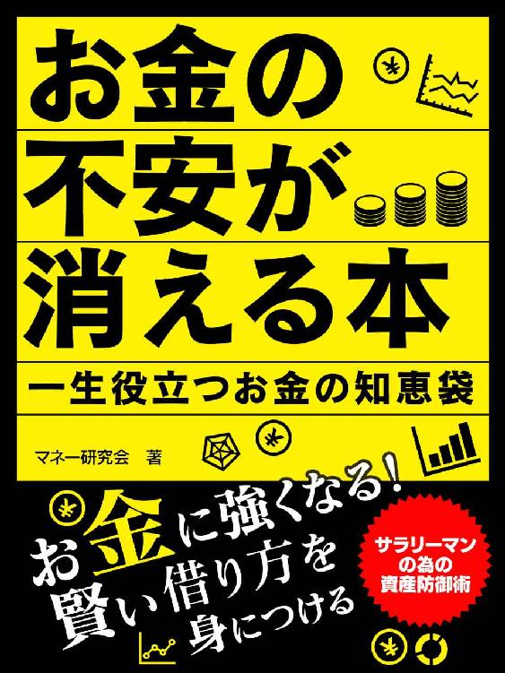
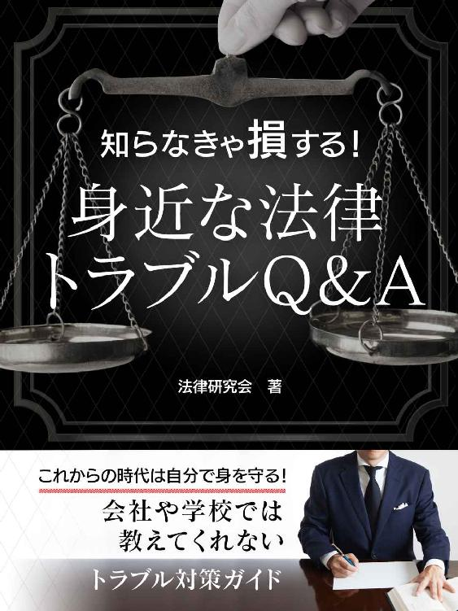

| 社会人のための資産自己防衛術 3冊セット | |
| マネー研究会 | |
| (2016) | |
●はじめに
お金にまつわるトラブルは非常に多いです。実際、弁護士が相談を受ける大部分は、お金に関するトラブルです。
しかも、お金というのは人の関係を良くもすれば悪くもします。例えば、「迷惑を掛けないから」と言われて保証人になったためにあとで大変苦労し、頼んだ人とのつき合いもなくなったということはよく聞く話です。
このようにお金のトラブルで苦労したり、人の関係が悪くなったりしないためには、なによりも正しい知識を持つことが重要です。
本書はお金に関するトラブルについて網羅しています。
とくに、最近、民法改正、新破産法の制定、民事再生法の改正、貸金業規制法の改正、新不動産登記法の制定など重要な法律の制定・改正が続いていますが、それらについても言及して最新の情報を取り入れています。
本書がお金のトラブルを防止する一助になれば幸いです。
著 者
目次
第１章【お金の貸し方・借り方の法律】
Ｑ１ 借用書がないと、お金を返してもらえないの？
Ｑ２ 「借用書」と「金銭消費貸借契約書」とは違うの？
Ｑ３ 借用書の数字は「壱弐参」のように書かなければいけないの？
Ｑ４ 借用書を訂正するには？
Ｑ５ 契約書は必ず２通作らなければいけないの？
Ｑ６ 印紙がないと借用書は無効？
Ｑ７ 認印でも借用書作成は可能？
Ｑ８ 返済期限の定めがない借金は？
Ｑ９ 利息と遅延損害金はどう違うの？
Ｑ10 公正証書って何？
Ｑ11 公正証書はどこでどうやって作るの？
Ｑ12 連帯債務と連帯保証はどう違うの？
Ｑ13 資金使途を急に変えたら？
Ｑ14 夫が妻の実印を勝手に使って借金、妻の責任は？
Ｑ15 消費者金融の利率が29・２％、違法では？
Ｑ16 日掛け金融の金利は違法に高いのでは？
Ｑ17 白紙委任状に実印を押してしまった
Ｑ18 手形貸付ってどんなもの？
Ｑ19 借金を止めさせる方法はない？
Ｑ20 保険証券は担保になるの？
Ｑ21 権利証は担保になるの？
Ｑ22 保証書制度がなくなった？
第２章【保証人になる前に】
Ｑ１ 保証人の責任ってどんなもの？
Ｑ２ 連帯保証人と単純保証人は、どう違うの？
Ｑ３ 役員は会社の債務の連帯保証人にならなければいけない？
Ｑ４ 商工ローンのいわゆる根保証ってどんなもの？
Ｑ５ 民法で根保証契約の規定ができた？
第３章【おカネの返し方、返してもらい方】
Ｑ１ 金融業者が毎月の返済に領収書をくれない
Ｑ２ 一括返済時に借用書を返して欲しいが？
Ｑ３ 返済を早めたら当初定めた利息はどうなるの？
Ｑ４ 債権の譲渡を受けた別の会社から督促が
Ｑ５ 借金に時効はあるの？
Ｑ６ 10年以上返していない借金に業者から返済の要求が
Ｑ７ 借金まで相続するの？
Ｑ８ 借金の相続放棄はどのようにすればいい？
Ｑ９ 住民票は本人でなくても取れる？
Ｑ10 内容証明郵便による請求にはどんな意味があるの？
Ｑ11 裁判所から「支払督促」が......、どうすればいい？
Ｑ12 裁判所から訴状が......、正式な裁判に対処するには？
Ｑ13 差押えになると家財道具まで取られるの？
Ｑ14 夫が借金、離婚したら妻の責任はなくなるの？
Ｑ15 貸した相手が自己破産、貸した金はどうなるの？
Ｑ16 借主が会社の場合、社長の責任は？
Ｑ17 少額訴訟ってどんな仕組み？
Ｑ18 返済が滞ると給料は全額差し押えられるの？
第４章【借金の整理】
Ｑ１ 借金整理の方法、その長所と短所は？
Ｑ２ 司法書士に債務整理の代理ができるの？
Ｑ３ 個人の信用情報を調べるにはどうしたらいい？
Ｑ４ 弁護士に頼めば取立ては収まるの？
Ｑ５ 債務整理の弁護士費用はどのくらい？
Ｑ６ 借金の整理、弁護士であれば誰でも大丈夫？
Ｑ７ 悪質弁護士の見分け方
Ｑ８ 過払いならお金は返ってくるの？
Ｑ９ 過払い請求にはやはり領収書が必要？
Ｑ10 新しい破産法の制定、どんなところが変わったの？
Ｑ11 保険外交をやっているが破産は可能？
Ｑ12 公務員を辞めないと破産できない？
Ｑ13 破産したら、会社を辞めなくてはいけない？
Ｑ14 破産したら、携帯電話はそのまま使える？
Ｑ15 破産したら、自動車は取られてしまうの？
Ｑ16 破産を申し立てれば、給料の差押えは止まる？
Ｑ17 破産を申し立てる裁判所はどこ？
Ｑ18 破産にはどれくらいの期間が必要？
Ｑ19 破産手続きには、裁判所に何度も行くことが必要？
Ｑ20 破産手続きにかかる費用はどれくらい？
Ｑ21 ギャンブルで作った借金は免責されない？
Ｑ22 勤めていた会社が破産、遅配の給料はもらえない？
Ｑ23 別れた夫が破産、受け取っていた養育費はどうなる？
Ｑ24 再度の破産、免責は受けられる？
Ｑ25 個人再生手続きは、どのように？
Ｑ26 小規模個人再生手続きと給与所得者等再生手続き
Ｑ27 収入の不安定なアルバイト生活、個人再生手続きは利用できる？
Ｑ28 住宅資金特別条項ってどんなもの？
Ｑ29 外国人は日本で破産することはできない？
Ｑ30 個人再生の最低弁済額はいくら？
Ｑ31 特定調停ってどんなもの？
第５章【ヤミ金・悪質金融業者撃退法】
Ｑ１ ヤミ金ってどんな貸し方をするの？
Ｑ２ 登録業者だから安心と思うのは間違い？
Ｑ３ 整理屋ってどんな業者？
Ｑ４ 紹介屋ってどんな業者？
Ｑ５ 買取り屋ってどんな業者？
Ｑ６ チケット金融の仕組みとは？
Ｑ７ 車・家具リースの実態とは？
Ｑ８ 年金担保金融とは？
Ｑ９ システム金融ってどんな貸し方をするの？
Ｑ10 賭博場でできた借金をどうするか？
Ｑ11 破産したら、ヤミ金融からしつこい勧誘が
Ｑ12 押し貸しって何？
Ｑ13 借りてもいない業者から返済の要求が、どうすればいい？
Ｑ14 ヤミ金業者への有効な対処法は？
Ｑ15 詐欺の共犯になることを恐れて警察に届けられない
Ｑ16 お金の貸し借りでトラブルにならないために
第１章 お金の貸し方・借り方の法律
Ｑ１ 借用書がないと、お金を返してもらえないの？
お金を貸したのですが、知人だったので借用書を作成しませんでしたところが、知人は約束どおり返してくれず、「借用書がないから返す必要はないと言う始末です。借用書がないと返してもらえないのでしょうか。
◆ 借用書がなくても契約は有効
借用書がなくても契約は有効であり、返済を求めることは可能です。
民法では、お金を返すことを約束して、そのお金を受け取れば金銭消費貸借契約は成立するとしています。したがって、契約書を作成せず、口頭の約束だけでも契約の効力は生じるわけです。
これは、近代私法の原則である契約自由の原則に基づくものであり、契約書を作成するかどうかを当事者の意思に委ねているわけです。
そうは言っても契約書は作成しておくべきでしょう。
その理由は、
①争いになったときの証拠になる
②契約の内容を明らかにしておくことができる
③記憶の補助手段になる
④意思決定が慎重になる
という効用があるからです。
とくに、会社間の取引で契約書がない場合には不利に働きます。会社間の取引では契約書があるのが当然であるという前提があり、契約書がないのは何か理由があるのだろうと思われるからです。
また、契約書があることによって無用な紛争を防ぐことができます。
したがって、契約書は必ず作成しておくべきです。万が一、契約書を作成できない事情がある場合は、メモでもかまいません。形式にこだわる必要はなく、とにかく書面にしておくことが重要です。
Ｑ２ 「借用書」と「金銭消費貸借契約書」とは違うの？
知人にお金を貸すので借用書を作ろうと思うのですが、サンプル書式タイトルが「借用書」と書いているのもあれば、「金銭消費貸借契約書」と書いいるのもあり、よく分かりません。意味が違うのでしょうか。
◆ どちらも法律上の意味は同じ
「借用書」も「金銭消費貸借契約書」も法律上の意味は同じであり、契約書の効力に変わりありません。したがって、どちらでもいいわけです。もっとも、民法の条文では「消費貸借」と表現しているので、「金銭消費貸借契約書」のほうが法律に忠実といえるかも知れません。
重要なことは契約本文の内容であって、タイトルはあまり気にすることはありません。
そうはいっても、タイトルを気にする方は多いようです。
依頼者から「この契約書は『覚書』がいいのか『確認書』がいいのか」というように相談されることはよくあります。
「そんなのどっちでも一緒ですよ」と答えたのでは身も蓋もないので、一応契約の内容を聞いたうえで、答えるようにはしていますが。
このようにタイトルは重要でないといっても、タイトルと契約の内容とがずれている場合には問題があります。
例えば、契約の内容は労働契約なのに、タイトルを「業務委託契約」と名付けて、労働基準法の適用を避けようとする場合などです。
この場合、「業務委託契約」とタイトルを付けているからといって労働基準法の適用が回避できるわけではなく、契約の各条項の内容によって労働基準法等の適用の有無は決まります。
紛争を事前に防止するためにも、このような紛らわしいタイトルは避けるべきであり、内容に沿ったタイトルにすべきでしょう。
Ｑ３ 借用書の数字は「壱弐参」のように書かなければいけないの？
借用書に、貸した金額を書くときに、「壱、弐、参」と書かないといけないのでしょうか。
◆ 後で金額を改ざんされるのを防ぐため
貸した金額が「１００万円」のときに「一〇〇万円」と書かずに「壱百万円」と書くことがよくあります。これは、後で数字を改ざんされることを防ぐためです。とくに、「一」「二」「三」という数字は、横棒を一本増やすだけで金額が変わるので改ざんされやすいため、「壱」「弐」「参」と書くことが多いのです。
しかし、最近は横書きの契約書も多く、その場合に、「壱百万円」と書くと不自然に見えるせいか、「１００万円」と算用数字で書いている契約書もよく見ます。
このように算用数字で契約書を書いても、もちろん契約としては有効です。
ただ、数字を「壱、弐、参」と書いたとしても、算用数字で書いたとしても、改ざんを防ぐために契約書は２通作っておくべきでしょう。
かりに１通しか作らない場合には、コピーをして、原本またはコピーを持っておくようにして下さい。
なお、２通作成した場合に、２通の契約書を少しずらして割り印することがあります。
これも契約書の偽造を防止することが目的です。もっとも、割り印をしなかったとしても、契約の効力には関係がないので心配する必要はありません。
Ｑ４ 借用書を訂正するには？
借用書を作るときに書き間違えてしまいました。どのように訂正すればいいでしょうか。
◆ ２本線と印鑑で訂正する
ときどき借用書を書き間違ったときに訂正をどのようにすればいいのですかと相談されることがあります。いちばん丁寧なのは次の方法です。２本線で抹消し、（横書きの場合）その上に訂正する文言を書きます。そして、欄外に例えば「６字抹消、５字挿入」と書き、その下に双方の印鑑を押します。内容証明郵便の場合は、このような訂正方法によります。
これに対し、簡便なのは次の方法です。
２本線で抹消し、（横書きの場合）その上に訂正する文言を書きます。そして、抹消した箇所に双方の印鑑を押します。「○○字抹消、○○字挿入」ということは書き込みません。
２つの訂正方法のうちどちらが正しいというわけではありません。
要は、偽造したものではなく、双方合意の上で訂正したものであることを書面上で明確にしておくことが重要なのです。
したがって、あまり重要でない内容を訂正する場合には、２本線で抹消し、そこに印鑑を押すという簡便な方法で十分です。
われわれ弁護士が作成して裁判所に提出する書面でも、訂正がある場合は、簡便な方法で訂正しています。
しかし、金額を訂正するような場合には簡便な方法での訂正は避けたほうがいいでしょう。
このような重要な箇所の場合は、そもそも訂正すること自体が問題であり、できれば訂正ではなく契約書を作成し直したいものです。
Ｑ５ 契約書は必ず２通作らなければいけないの？
契約書は必ず２通作らないといけないのでしょうか。また、当事者全が署名捺印しなければならないのでしょうか。銀行で融資を受けたときは、１しか作らず、しかも、銀行の印鑑がなかった記憶があるのですが。
◆ 何通作るかにはあまり意味がない
契約書を作る理由は、①争いになったときに証拠にする、②契約の内容を書面で明らかにしておく、③書面にすることで記憶の助けとする、④書面を作ることによって意思決定が慎重になる、という効用があるからです。
そうすると、契約書はこの要求を満たせばいいのですから、契約書を何通作るかはあまり意味はないということになります。
また、２通作成すると、印紙代が２倍必要となりますが、１通だけで済ませれば、それだけ印紙代を節約することができるというメリットもあります。契約金額が高いと印紙代もばかになりませんから。
したがって、１通だけ作成して、あとはコピーでもいいといえます。コピーさえあれば、後で契約書の原本を偽造したとしても、コピーと付き合わせれば、偽造したことは分かるからです。
また、契約書では当事者全員が署名捺印するのが通常ですが、契約は当事者の口頭での合意でも成立するぐらいですから、貸主が署名捺印しなくても契約としては有効です。
銀行から借り入れるときの契約書は、貸主である銀行は印鑑を押さず、借主が署名捺印して差し入れる形式になっていることが多いようです。このように差入れ形式にする理由は、これだけで前述の契約書を作成する理由としては十分足りるし、印紙代を節約できるからです。
ただ、これは銀行という信用力のあるところだから許されることです。通常は、当事者双方が署名捺印するようにすべきでしょう。
Ｑ６ 印紙がないと借用書は無効？
友人にお金を貸したときに借用書を作ったのですが、印紙を貼っていませんでした。この借用書は有効でしょうか。
◆ 印紙の有無や印紙額が適正かは契約の効力には影響しない
借用書などの契約書に印紙を貼付していなくても、契約が無効になるわけではありません。また、後に裁判になったときに、証拠として認められないわけでもありません。
すなわち、印紙の有無や、印紙額が適正かなどは契約の効力にはまったく影響しないのです。
しかし、印紙を貼付しないことは脱税となり、印紙税額の３倍相当の過怠税が課されることになっています。
また、偽りその他不正の行為により印紙税を免れようとしたときは、１年以下の懲役もしくは20万円以下の罰金という刑事罰が課されることもあり得ます。
このように印紙を貼付しないことが脱税になるとしても、契約の成否には影響しないことから、多くの弁護士は当該契約書にいくらの印紙を貼るべきかについて十分な知識がないかも知れません。そのため、顧問弁護士に「この契約書の印紙額はいくらになるでしょうか」と聞いても即答できないことがあるかも知れませんが、そのようなことがあっても、「うちの弁護士さんは大丈夫かなあ」と思わないで下さい。
私もときどき顧問会社から印紙額を聞かれることがありますが、即答できないので、必ず調べてから答えるようにしています。
参考までに代表的なケースの印紙額を挙げておくと、次のとおりです。
１万円以上10万円以下の金銭消費貸借契約書 印紙額１通につき２００円
３万円以上１００万円以下の売上代金に係る受取書 印紙額１通につき２００円
継続的取引の基本となる契約書 印紙額１通につき４０００円
Ｑ７ 認印でも借用書作成は可能？
友人にお金を貸したので借用書を作ろうとしたのですが、相手が実印持ってくるのを忘れたため、文具店で認印を買ってきて押してもらいました。この借用書は有効でしょうか。
◆ 実印でなくても契約は有効に成立する
契約は口頭の約束でも有効に成立します。とするなら、押す印鑑も実印でなく認印でも当然に有効です。
それでは、なぜ実印を要求されることがあるのでしょうか。
裁判になったときに、「私は契約していない。この契約書に押してある印鑑は私のものではない」という主張がなされることがあります。
ところが、実印を押してあり、それに印鑑証明書を添付している場合には、「この印鑑は私のものではない」という主張はほとんど認められないでしょう。
また、契約書に印鑑を押したことは認めても、「何の書類かよく分からなかった。言われるままに印鑑を押しただけである」と主張されることもしばしばあります。
しかし、実印は重要な印鑑であると認識されていますから、実印を押す場合は慎重になるはずであると考えられています。したがって、契約書に実印を押しているのに、「何の書類かよく分からなかった」という主張は通りにくいでしょう。
このように、わざわざ実印を押すのは、争いになったときに、①契約したのが本人であること、②契約する意思があったことの証明を容易にすること、という目的があるわけです。
したがって、お金を貸す立場に立てば、実印を押してもらい、印鑑証明書を添付してもらったほうが安全でしょう。
かりに、設例のように実印を忘れたのであれば、認印でも仕方ありませんが、署名は必ず自筆でしてもらって下さい。ワープロで打った氏名に認印を押しただけでは、後に本人であることの確認が容易でなくなり、争われる元になるからです。
Ｑ８ 返済期限の定めがない借金は？
知人にお金を貸したのですが、返済期限を定めませんでした。貸してら１カ月経ったころ急に資金が必要になったので返済を求めると、知人は「そな急に言われても困る」と言って返してくれません。
◆ 返済期限を定めない契約も有効
お金を貸すときに返済期限を定めた場合は、その返済期間が過ぎれば遅滞となり遅延損害金が発生します。
例えば、返済期限を平成17年３月２日と決めたときは、３月２日までに支払わなければならず、支払わないときには、翌日の３月３日から遅延損害金も含めて支払わなければなりません。
お金を貸した場合はこのように確定した返済期日を決めることが通常でしょうが、いろいろな事情から返済期日を定めない場合もあり得るでしょう。そのように返済期限を定めない契約も可能であり、契約としては有効です。
では、その場合いつでも返してくれと言えるのでしょうか。あるいは、期限を定めていないのですから、貸主は返してくれと言えないのでしょうか。
この点について民法４１２条３項は、「債務の履行について期限を定めていないときは、履行の請求を受けたときから遅滞になる」と定めており、また、民法５９１条１項は、「返還の時期を定めていないときは、相当の期間を定めて返還の催告をすることができる」と規定しています。したがって、金銭消費貸借契約で期限の定めのない場合は、いつでも返還を求めることができるのですが、「すぐに返せ」とは言えず、ある程度の期間を決めて、そのときまでに返せと言えるということになります。
突然返せと言われても借りたほうも困るので、ある程度余裕を与えなさいというわけです。なお、返済を求める方法にはとくに制限はなく、口頭、メールなどでもよいのですが、返済を求めたという事実と、その日付を証拠として残しておくために、配達証明付内容証明郵便で行うのが適切でしょう。
Ｑ９ 利息と遅延損害金はどう違うの？
利と遅延損害金の違いがよく分からないのですが。
◆ 遅延損害金とは債務不履行の損害賠償金
利息とは、元本債権の存在を前提として発生する元本の収入と説明されいます。分かりやすくいえば、お金を借りた人は、そのお金を使って利益を得ているのですから、その対価を支払いなさいというわけです。
利息は定めないことができます。また、利息を取ることは定めても、利率は定めないこともできます。利率を定めなかった場合は、法定利率は年５％とされています。ただし、商人間においては、法定利率は年６％と若干高くなっています。
これに対し遅延損害金は、金銭債権において債務不履行があった場合の損害賠償金ですので、「利息」とは性質が異なります。「遅延損害金」といういい方のほかに、「遅延利息」といういい方もしますが、「遅延利息」は「遅延損害金」と同じ意味です。
遅延損害金は契約で定めていれば、それに従いますが、利率を定めていない場合は、年５％とされています。ただし、商人間においては年６％となっています。
この年５％（あるいは年６％）という遅延損害金は、現代のような低金利時代では大きな意味を持つようになり、例えば交通事故の損害賠償事件において、交渉が長引いて支払いが遅れると、遅延損害金だけでも大変な額となることがあります。
このように、利息と遅延損害金は当事者が約束すればそれに従うのが原則ですが、金銭消費貸借契約においては、当事者が約束すればいくらでもいいというわけではなく、利息制限法によって次のように制限されています。
元本10万円未満 年利20％以下 遅延損害金年29・２％以下
元本10万円以上１００万円未満 年利18％以下 遅延損害金26・28％以下
元本１００万円以上 年利15％以下 遅延損害金年21・９％以下
ただし、貸金業規制法及び出資法により、貸金業者が貸し付けた場合において、一定の要件を満たすときは、利息の上限利率は29・２％まで認められています。
Ｑ10 公正証書って何？
金融業者から融資を受けようと思うのですが、公正証書にして欲しいと言われています。公正証書にはどのような意味があるのでしょうか。
◆ 公正証書を作成しておくといきなり強制執行ができる
金融業者が公正証書を作成する最大の理由は、公正証書を作成しておくと、債務者が返済できなくなったときに裁判手続きを経ずにいきなり強制執行ができるからです。
そのため、公正証書が作成されていると、給料をもらっている人や、自営業者で銀行取引のある人には非常に脅威となります。
ところが、金融業者はこのような公正証書の意味を十分説明しないまま、委任状と印鑑証明書を提出させることが多く、そのため債務者のなかには公正証書を作成したことさえも知らない人が多いのが実情です。
債務整理の相談を受けるときに、「公正証書を作成していますか」と聞いても、ほとんどの人が「いろいろ書かされたからよく覚えていません」と答えます。
そこで、「印鑑証明書は渡しましたか」と聞くことにしているのですが、印鑑証明書を渡したと答える場合はほとんど１００％公正証書を作成していると思ったほうがいいでしょう。というのは、委任状に実印を押して、印鑑証明を添付すると、金融業者の社員が債務者の代理人となって公正証書を作成することができるからです。
経験からいうと、公正証書を作成する金融業者は、取り立てが厳しいことが多いようです。したがって、印鑑証明書を要求する金融業者から借りる場合には返済の見込みが確実な場合に限るなど、十分注意したほうがいいでしょう。
Ｑ11 公正証書はどこでどうやって作るの？
公正証書はどこで作ればいいのですか。作るときにどのような書類が必要ですか。
◆ 公証役場において公証人が作成する
公正証書は公証役場において公証人が作成します。
公証人は、元裁判官、元検察官、元法務局出身者がほとんどであり、定年が70歳なので再就職先として人気があるようです。
公証役場は全国にあり、東京都には45カ所もあります。公正証書はどこの公証役場で作成してもかまいません。金銭消費貸借契約において公正証書を作成する目的は、①裁判手続きなしで強制執行できるようにしておくということが最も大きいのですが、それ以外に、②通常の借用書などの私文書と比較して証明力が強い、③公証人がチェックすることにより契約関係が明確になる、④確定日付としての効力を持ち、日付の優劣が問題となる場合に意味があるという意義もあります。
公正証書を作成する場合は、当事者が公証役場に出頭することが原則とされていますが、遺言証書や死因贈与以外は代理人でも作成することが可能です。
代理人による場合には、本人の印鑑証明書と実印の押されている委任状が必要です。委任状には委任事項を記載しておく必要があり、通常は、委任状に契約書のコピーを付けて割り印します。
代理人は弁護士でなくてもなることが可能であり、金融業者が作成する公正証書は、ほとんどが金融業者の社員が借主の代理人となって作成しています。
作成手数料は、金銭消費貸借契約書の場合は、貸金の金額が１００万円までであれば５０００円です。公正証書の原本は原則として20年間公証役場で保管し、当事者には正本、謄本が交付されます。
Ｑ12 連帯債務と連帯保証はどう違うの？
夫婦で住宅ローンを借りたのですが、妻の私は連帯債務者となっていました。連帯保証人に比べて責任は重いのでしょうか。
◆ 連帯保証債務は主債務者と保証人の間に主従関係を発生させる
連帯債務とは、貸主とそれぞれの借主との間に独立した金銭消費貸借契約があり、これが結合したものと考えてよいでしょう。連帯債務者はそれぞれが対等な関係といえます。
これに対し、連帯保証債務は、債務者の債務を保証するわけですから、債務者と保証人との間には主従の関係があります。
具体的な違いとしては、連帯債務では、債務者の１人について契約が無効・取消となった場合でも他の債務者に影響しないのに対し、連帯保証債務の場合には、債務者に生じた事由は、すべて保証人に効力が生じます（ただし、破産、民事再生などにおいて例外があります）。
しかし、連帯債務にも保証人的役割があり、そのような具体的役割に着目するならば、連帯債務と連帯保証との実際上の違いはあまりないといえるでしょう。
このように保証人的役割があるという意味では共通しているのですが、金融機関は、連帯債務貸付ではなく、連帯保証貸付にすることが多いようです。
というのは、債権譲渡したり、契約条件を緩和するような場合に、連帯保証の場合であれば、債務者に対してだけ手続きを行えば、連帯保証人にもその効力が及ぶのに対し、連帯債務の場合は、それぞれが独立して金銭消費貸借契約があるという性質上、連帯債務者全員とその手続きを行わなければならないという煩雑さがあるからです。
設例のように配偶者が連帯保証人ではなく、連帯債務者になったのは、配偶者も不動産を共有しているなどの特別な事情があったからでしょう。
Ｑ13 資金使途を急に変えたら？
銀行から借り入れるときに資金使途を書きましたが、急に必要になって別の目的に使ってしまいました。問題があるでしょうか。
◆ 一括の返済を求められる可能性がある
金融機関から借入をするとき、必ず資金使途を書かせられます。
事業者であれば、例えば機械購入資金とか、短期運転資金とか書くことが多いでしょうし、個人の借入であれば、例えば教育資金とか、リフォーム資金とか書くことが多いでしょう。
このように資金使途を書くのは、主に次のような理由によります。
①融資したお金がどのように使われるかは、貸付金の回収の成否に影響するため。
例えば、「機械購入資金」とすると、機械購入により生産能力が高まり、収益が上がることから資金回収は可能であろうと思って融資するわけです。
②貸付金を好ましくない資金に使うことを防ぐため。
極端な例ですが、使途を「ギャンブル」と書いた場合、それは好ましくない資金ですから、金融機関が融資するはずがありません。
③貸主の責任を回避するため。
社会的に問題のある融資を断り、金融機関としての責任を回避するためです。ただ、消費者金融業者のなかには、ギャンブルに使うことを薄々承知しながら、「生活費のため」と書かせることがあり、使途の記載が単なる言い訳に使われている面もあるように思います。
このように資金使途を書かせることは、融資する側にとっては非常に意味のあることです。そのため、金銭消費貸借契約書には、「資金使途を偽った場合には期限の利益を喪失させ、一括で返済する」という条項が入っていることがあります。
このような条項が入っている場合に、資金使途を偽ったことが分かった場合は、一括の返済を求められる可能性がありますから、注意すべきでしょう。
Ｑ14 夫が妻の実印を勝手に使って借金、妻の責任は？
夫が私の実印を勝手に持ち出し、保証人欄に私の名前を書いて印鑑を押し、お金を借りてしまいました。私に責任はあるのでしょうか。
◆ 実印を押していることについて負う責任はそれぞれのケースによって異なる
実印というのは大切なものという社会通念があります。それゆえ、契約書に実印を押して印鑑証明書を添付していると、「何も考えずに印鑑を押した」とか、「私は押していない」と言ってもなかなか認めてもらえず、責任を免れることは非常に難しくなります。
しかし、それはそれぞれが別々に生活している場合のことです。
夫婦のように一緒に生活している場合は、実印を持ち出すことも、印鑑証明を取ることも比較的容易にできます。
そうすると、実印を押しているというだけで配偶者が保証人になることを承知していると信じたとしても、安易に信じた債権者にも落ち度があるといえます。
夫婦ではなく、子が勝手に親の実印を持ち出して親を保証人とした事例ですが、「子が血縁の緊密さを悪用して、自己の利益を図る目的で親の実印を使用し、親の代理人として行動することはしばしば見られることであるから、貸す側は実印と印鑑証明書を差し入れたというだけで代理権があると信じたのはいささか軽率である」として親の保証責任を否定した判例もあります。
もちろん、夫婦であれば実印を勝手に使われても常に責任は生じないとはいえません。夫がそれまで何度か妻の実印を使用しており、それを妻も認めていた場合には、たとえ問題となった契約については承知していなかったとしても、表見代理が成立し、妻が責任を負う場合もあるでしょう。
結局は、個々の具体的事情によって異なるとしかいえません。
ただ、実印を押しているからといって常に責任を負うわけではないので、諦めることはないでしょう。
Ｑ15 消費者金融の利率が29・２％、違法では？
消費者金融業者からお金を50万円借りたのですが、利率が29・２％でた。ところが、あとで本を読むと、法律上、利率は18％以下と書いてありまし。どうして違うのでしょうか。
◆ 一定の要件を満たす書面を交付すれば利率の上限は29・２％に
利息制限法で認められている利率は、次のとおりです。
元本10万円未満 年利20％以下
元本10万円以上１００万円未満年利18％以下
元本１００万円以上年利15％以下
設例の「本を読むと、法律上、利率は18％以下と書いてあった」というのは、この利息制限法のことをいっているわけです。
ところが、貸金業規制法及び出資法では、貸金業者が貸し付けた場合において、一定の要件を満たす書面を交付した場合には、利率の上限は29・２％とされています。
これが「みなし弁済」といわれる規定であり、貸金業者は、このみなし弁済が適用されるという考えの下に、利息制限法を超える利率を適用して貸し出しているのです。
一定の要件を満たす書類とは、貸付契約書（「17条書面」といわれています）と、受取証書（「18条書面」といわれています）のことですが、最近、最高裁はこの要件を非常に厳格に解釈する姿勢を打ち出しました。その結果、貸金業者が交付する書面の多くは、最高裁の考え方を前提にすると法律の要件を満たさないと思われます。
そのため、設例の場合でいえば、29・２％の利息を取ることは認められず、18％で計算し直さなければならない可能性が高いと考えられます。
Ｑ16 日掛け金融の金利は違法に高いのでは？
私は飲食業を営んでおり、日掛け金融からお金を借りています。金利が高いようなのですが、違法ではないでしょうか。
◆ 毎日貸金の回収を図る日掛け業者には「日掛け貸金業者の特例」がある
日掛け金融と呼ばれる金融業者は、法律上は「日賦貸金業者」と呼ばれています。
日掛け金融業者は、飲食店などの営業主に貸付け、ほぼ毎日、営業している店に集金に赴いて貸金の回収を図っています。
日掛け金融業者は、出資法の「日賦貸金業者についての特例」という規定において、他の金融業者は金利の上限が29・２％とされているのに対し、54・75％まで金利を取ることが認められています。
このような高金利が認められているのは、日掛け金融業者はほとんどが零細業者であること、他の貸金業との兼業を禁止されていること、毎日のように集金に赴くので回収にコストがかかることなどが理由とされています。
しかし、今日の低金利時代においては消費者金融の29・２％でも高いという印象があるのに、54・75％の金利を取ることが認められるというのは不思議というしかありません。
飲食店でも、ある程度の売り上げがあり黒字になっていれば銀行などから融資を受けることができます。それゆえ、日掛け金融業者から借りるのは、必然的に赤字経営のところが多くなります。
日掛け金融業者は毎日集金に来ますが、前日の売り上げが少ないときもあるでしょうから、そのようなときは当日の材料の仕入れ代金まで返済に充てることになり、赤字経営なのにますます魅力のない店になるわけです。実際、私の経験でいえば、日掛け金融業者から借りていたお店はすべて閉めてしまいました。
54・75％という金利はどう考えても高いですから、日掛け金融には手を出さないほうが無難でしょう。
Ｑ17 白紙委任状に実印を押してしまった
金融業者から融資を受けたのですが、そのときに何も書いていない委任状に実印を押さされ、印鑑証明書も渡しました。どうすればいいでしょうか。
◆ 適法な金融業者は白紙委任状を取ることはない
貸金業規制法20条は、貸金業者は、公正証書を作成するための委任状を取得する場合には、白紙委任状を取ってはならないと定めています。
これは、公正証書は裁判手続きを経ずに直ちに強制執行ができるため、濫用の危険性が大きいからです。
さらに、金融庁事務ガイドラインでは、公正証書を作成するための白紙委任状だけでなく、白紙委任状全般について、その取得は貸金業規制法で禁止している不正、又は著しく不当な手段に該当するおそれが大きいとしています。
したがって、適法な貸金業者であれば白紙委任状を取ることはまずありません。
白紙委任状を取られたというのであれば、それは違法な業者でしょうし、それだけに危険は大きいです。
白紙委任状を使って公正証書を作成された場合、それは直ちに強制執行ができるという強い効力があるだけでなく、公証人によって作成された書面だけに信用性も高いとみなされます。
そのため、あとから委任は無効であるとして争うことは非常に難しいのが実情です。
そこで、まず委任を解除する旨の通知を内容証明郵便で出しておくべきです。委任契約は原則として各当事者はいつでも解除できるとされているからです。
しかし、すでに公正証書を作成されている場合には、公正証書の無効を主張して請求異議の訴訟をするしかありませんが、それは困難を伴うことを覚悟して下さい。
Ｑ18 手形貸付ってどんなもの？
金融業者から融資を受ける際に手形を振り出して欲しいと言われました。手形を振り出したことはないのですが、どのような意味があるのですか。
◆ 利点が多く、金融機関でしばしば利用される
手形貸付とは、借用書の代わりに手形を振り出させ、借主に、手形額面から満期までの利息を差し引いた金額を渡す形態の貸付です。
これに対し、借用証書の差し入れを受けて貸し付ける形態を証書貸付といいます。
手形貸付は次のような特徴があり、金融機関でよく利用されています。
①手形不渡りのおそれという心理的圧迫のため、履行が確保される。
②当座勘定で決済することができる。
③貸主は、手形訴訟という簡便な訴訟を利用できる。
④手形要件が決まっているため、手形作成等が簡易である。
⑤貸主は、手形割引により容易に資金化できる。
⑥手形の支払期間が比較的短期のため、貸付け条件の変更を行いやすい。
⑦手形は、手形金額が10万円未満の場合、印紙税が非課税となるなど、安い。
このような理由から手形貸付を利用されることは比較的多く、それゆえ、手形貸付だからといって心配することは本来はありません。
もっとも、商工ローン業者の中には、このような本来の意味の手形貸付でなく、もっぱら借主が支払いができなくなったときに手形訴訟を利用するためだけに手形の振出をさせる場合があります。また、手形も統一手形用紙を用いた手形ではなく、私製の手形を使っています。
その理由は手形訴訟は書面のみによる審理のため、非常に早く判決が出るからです。
ある商工ローン業者は、このような手形貸付に基づき大量の手形訴訟を提起していたのですが、それは手形訴訟制度の濫用ともいうべきことから、東京地裁は、商工ローン業者の私製手形に基づく手形訴訟を認めませんでした。
Ｑ19 借金を止めさせる方法はない？
主人が何度も借金を繰り返し、そのたびに貯金を取り崩したり、実家の援助を受けて返しています。何とか借金を止めさせる方法はないでしょうか。
◆ 止められるかどうかは結局本人の意思
私の経験からいえば借金の原因の多くは、ギャンブルか、女性のために使った場合のようです。飲食というのは、それに付随するだけで、飲食だけで多額の借金をすることはあまりないように思います。
そして、家族に言われて借金をスパッと止められる人もいますが、借金を何度も繰り返す人がいるのも事実です。
借金を止めるかどうかは、結局本人の意思次第なのです。
よく家族や両親が心配して借金を肩代わりするケースがあります。それ自体は責められることではないですが、その場合には、家族が直接金融業者と話して返済するのは止めたほうがいいでしょう。
なぜなら、そのように家族が本人に代わって支払っても、金融業者にとっては「本人が払えなくても家族が払ってくれるいいお客」になりますから、本人に再び勧誘の電話がかかってくる可能性が高いからです。
家族が「もう貸さないで下さい」と言ったとしても、それをきちんと守る業者ばかりとは限りません。
このような場合は、弁護士や司法書士に依頼して債務整理を頼んだほうがいいと思います。そうすれば、弁護士等が介入したということが記録に残りますから、通常の貸金業者であれば二度と貸さないでしょう。
しかも、家族だけで返済した場合は、利息制限法を超える約定金利を支払うことになってしまいがちですが、弁護士等が介入すれば利息制限法に引き直した残元金だけを支払う交渉をします。そのような点からも、やはり弁護士等に頼んだほうがよいと思います。
Ｑ20 保険証券は担保になるの？
生命保険の保険金を担保に知人にお金を貸し、保険証券を預かっていす。ところが、知り合いから保険証券を持っていても何の意味もないと言われました。本当でしょうか。
◆ ただ預かっているだけでは担保にならない
返済できなくなったときに、物で返してもらったり、その物を売却してその代金で返してもらうのが担保です。
これらは物的担保と呼ばれており、民法は、担保として留置権、先取特権、質権、抵当権の４種類を定めています。
留置権は、債権の弁済を受けるまでその物を留置できる権利です。
先取特権は、法律の規定に従い、他の債権者に先立って弁済を受けることができる権利をいい、給料も先取特権とされています。
質権は、債務者などから受け取った物を占有し、その物について優先して債権の弁済を受けることができる権利です。質権の対象となるのは物に限らず、債権も対象となり、保険金受取請求権も債権の一種として質権の設定が可能です。
抵当権は、債務者などの占有を移さないで、不動産について優先して債権の弁済を受けることができる権利です。
その他、特別法で認められた担保や、判例上認められた担保である譲渡担保、再売買の予約などがあります。
担保は、それぞれ成立するための要件や、第三者に対抗する要件が定められています。その方式によらずに担保を設定したとしても、それは有効な担保となりません。
設例でいえば、保険金受取請求権は債権質として担保の対象となりますが、保険証券を受け取っておくだけでは足りず、保険会社にそれを主張するには、保険会社の承諾が必要となります。したがって、その手続きをせず、保険証券を預かっているだけでは何の意味もないことになります。
Ｑ21 権利証は担保になるの？
知人にお金を貸すので担保として抵当権をつけてもらおうと思ったのですが、「登記されると信用がなくなるので止めて欲しい。その代わり権利証を預けておくから」と言われました。権利証を持っていれば担保を取っているのと同じでしょうか。
◆ 株券や手形と違い権利が表象されているわけではない
一般に権利証といわれている書類は、登記済証のことです。この書類は登記がなされたときに登記権利者に交付されます。
権利証が交付されるのは、申請した登記が完了したことを通知するためです。
しかし、権利証のより重要な役割として、将来、各種登記をするときに、本人であることの証明ないし不動産の所有者であることを証明するために必要な書類となるということがあります
例えば、不動産を売却するときには権利証が必要になるのであり、その意味では重要な書類といえます。
しかし、権利証は株券や手形と違い、権利が表象されているわけでありません。登記が完了したことの通知と、本人であることの証明ないし不動産の所有者であることの証明のために必要なだけであり、それ自体に財産的価値があるわけではないのです。
権利証は前述のような重要な機能を有しているため、紛失しても再発行はされませんが、それに代わる保証書があれば権利証がなくても登記は可能です。
保証書とは、登記を受けた成年者２人以上が、登記義務者が人違いでないことを保証した書面です。そのため、権利証を紛失したことにして保証書を作成すれば権利証がなくても所有権移転登記などができることになります。
このように権利証は大事な書類ですが、担保としての価値はないので、持っていてもあまり意味はないということになります。
なお、法改正により、登記はオンライン申請で行うことが可能になったため、次第に権利証はなくなっていくでしょう。
Ｑ22 保証書制度がなくなった？
保証書による登記申請が廃止になったと聞きましたが、どのように変わったのでしょうか。
◆ 保証書制度に変わり、事前通知制度となる
Ｑ21で、権利証を紛失しても保証書によって登記が可能と書きました。
しかし、保証書を利用して不正な登記がなされるなど保証書制度が悪用されることがしばしばあり、そのため、改正された不動産登記法では、保証書制度を廃止し、それに代わり事前通知制度を採用することにしました。
事前通知制度とは、登記申請がされた場合、登記所から本人を確認するための書面が、本人限定受取郵便によって郵送されるものです。
なお、新しい不動産登記法は平成17年３月７日から施行される予定です。
第２章 保証人になる前に
Ｑ１ 保証人の責任ってどんなもの？
知人から「保証人になって欲しい。絶対に迷惑をかけないから」と言われています。昔お世話になった方で断りきれず困っています。
◆ 保証人になるときは覚悟を決めて
保証人は債務者が返済できなければ、すべての責任を負うことはよく知られていると思います。それにもかかわらず、保証人になって苦しむケースは相変わらず多いようです。
保証人は借りたお金を使っていないわけです。それなのに返済の責任を負うわけですから、同情せざるを得ません。もっとも、なかにはお互いが保証人になり合って、消費者金融からお金を借りるケースもあり、このような場合はあまり同情できませんが。
保証人になって苦しんでいる人は、あとで考えるとなぜ保証人になったのかと思うのでしょうが、おそらく保証人になったときの債務者の頼み方が尋常でなかったからだと思います。
お金を借りる人は、最初は他人に迷惑をかけてまで借金したくないと思っているでしょう。そのため、保証人を頼もうなんて夢にも思っていません。ところが、次第に借金が増えていき、金融業者から「保証人をつけないと貸さない」と言われると、ここで借りられないと返済が滞ってしまいますから、何とかして保証人になってもらおうと思います。そのため、頼む方は必死であり、頼まれる方は迫力負けするのでしょう。
しかし、そのような状態は債務者としてはもはや末期症状です。まもなく弁護士に相談して破産をしたり、あるいは夜逃げ同然で連絡が取れなくなったりして、すべての責任が保証人にかかってきます。
保証人になった場合は、最悪、その債務を自分で払うぐらいの覚悟を決めておくべきであり、その覚悟がなければどんなに頼まれても断るべきです。
Ｑ２ 連帯保証人と単純保証人は、どう違うの？
連帯保証人になったのですが、貸主からいきなり返済を要求されまし。借りた人は十分返済する能力があるのですから、その人から返済してもらうきではないでしょうか。
◆ 連帯保証の場合にはいきなり請求されても拒めない
保証債務は、主たる債務に従属する性質があります。したがって、主たる債務が無効の場合には、保証債務も無効になり、主債務者が債務を弁済すれば、保証債務もなくなります。
この点は、単純保証も連帯保証も保証債務である以上同様ですが、責任のあり方では２つに違いがあります。
単純保証の場合には、債権者が主たる債務者に請求せずに、いきなり請求を受けた場合には、まず主債務者に催告すべきであると言うことができます。
また、債権者からの請求に対し、主債務者に弁済する資力があり、執行が容易であることを証明して、まず主たる債務者の財産を執行せよと言うこともできます。
さらに、単純保証人が複数いる場合には、保証人はその割合に応じた責任しか負いません。例えば、５００万円の債務について、２人が単純保証した場合は、それぞれ２５０万円ずつしか保証の責任を負わないことになります。
これに対し、連帯保証の場合には、そうはいきません。責任がずっと重くなります。
債権者が主たる債務者に請求せずに、いきなり請求を受けても拒むことができません。また、債権者からの請求に対し、まず主たる債務者の財産を執行せよと言うこともできません。
さらに、連帯保証人が複数いても、それぞれが全額を保証しなければなりません。先の例でいえば、債権者が、資力のありそうな連帯保証人を狙って５００万円全額を請求すると、それを拒むことができないわけです。
このように、単純保証に比べて連帯保証の責任は重いといえます。
Ｑ３ 役員は会社の債務の連帯保証人にならなければいけない？
会社役員になりました。すると、社長から、会社が借り入れている債務の連帯保証人になることを求められました。応じなければならないのでしょうか。
◆ 社長から頼まれても連帯保証する義務はない
日本の金融機関は、中小企業に対する融資に対し、社長はもちろん会社役員まで連帯保証人になることを求める傾向にあります。そのため、会社が倒産すると自宅まで取られてしまいかねません。
オーナー社長であれば、それも致し方ないのかもしれませんが、通常の給料生活者が出世して役員になった場合には、それは悲劇といえます。
連帯保証契約は、貸主と保証人になろうとする人の間で締結される契約ですので、いかに社長に頼まれたとはいえ自分の判断で契約するか否かを決めることができます。
また、商法などの法律においても会社役員が連帯保証する義務を定めているわけではありません。
そうはいっても、社長から頼まれて断ることは難しく、結局は、連帯保証人にならざるを得ないことがほとんどではないでしょうか。
以前、知人から、「今度役員になるのだが、役員になると連帯保証人になることを求められる。万が一のことを考えて、自宅を妻の名義にしておきたいのだが大丈夫だろうか」と相談されたことがあります。
これは、自宅を妻へ名義移転したことが詐害行為として取消の対象になるかどうかの問題ですが、その時点では連帯保証債務を負っていないのですから、債権者を害したことにはならず、名義移転は有効と思われます。しかし、会社や金融機関がそれを知れば信用がなくなるのではないか、と答えたことがあります。
このようなことを心配しないといけないのは、企業の収益力を分析することなく、何でも個人保証に頼ろうとするからであり、そういった金融機関の姿勢にも問題があるのではないでしょうか。
Ｑ４ 商工ローンのいわゆる根保証ってどんなもの？
商工ローン業者から事業資金を２００万円借りるので保証人なってほしいと知人から頼まれ、断り切れず応じました。ところが、後になって商工ローン業者から、債務者は５００万円借りているので全額支払えと言われました。このようなことがあるのでしょうか。
◆ 根保証で思いもしない保証債務を背負う
これは、いわゆる根保証といわれている問題で、思いもしない保証債務を背負い、そのため家庭が崩壊するという悲劇も起こっています。
頼まれて２００万円について保証人になったのに、どうしてそれ以上の責任を負うのか理解に苦しむ人も多いようです。
根保証とは、保証の枠があり、その範囲内であれば保証人は責任を負わなければならないという契約です。したがって、５００万円の限度で保証すると、債務者が最初２００万円借りた分は当然保証責任を負いますが、その後、債務者が３００万円を借りた場合、それについても責任を負わなければならないことになるわけです。
このように根保証は保証人に予期しない責任が生じることがあります。
そもそも、保証人になる際、借主から「絶対に迷惑をかけない」と言われ、保証人になることや保証の範囲を十分説明されないまま保証人になることがしばしばあります。そのため、後で貸金業者と保証人との間でトラブルになることもありました。そこで、貸金業規制法では、貸金業者が保証契約をするときは保証人に対し、事前に保証期間、保証金額などを説明する書面を交付するように定めています。
また、金融庁ガイドラインでは、その書面の内容を分かりやすく記載し、内容を十分理解できるようにしなければならないとしています。
さらに、保証人になった場合には、貸金業者と債務者との金銭消費貸借契約内容を明らかにした書面も交付するように定めています。
このように、法律は、保証人が保証している内容を十分理解できるような規定を置いているのですが、それでも理解が十分とはいえず、悲劇は減らないようです。
Ｑ５ 民法で根保証契約の規定ができた？
民法改正により、新たに保証人に関する規定ができたと聞きましたが、どのように改正されたのでしょうか。
◆ 書面によらない保証契約は無効
まず、保証契約は書面によってしなければ効力がないとしました。これは、保証契約の内容を書面によって明らかにすることで、保証人を保護しようという趣旨です。また、貸金等の根保証契約について定め、保証の額に上限（「極度額」といいます）がない根保証契約は無効としています。
逆にいえば、保証人は極度額という枠内であれば責任を負う可能性があるわけであり、民法改正により根保証がすべて否定されたわけではないことに注意して下さい。
第３章 おカネの返し方、返してもらい方
Ｑ１ 金融業者が毎月の返済に領収書をくれない
貸金業者に毎月分割で返済しているのですが、領収書を下さいと言っても一向にくれません。どうすればいいでしょうか。
◆ 債権者が領収書を渡さないときには弁済を拒むことができる
領収書というのはお金を払ったことを示す受取証書です。
領収書は返済したことの証拠になるものですから、絶対に受け取っておくべきです。
そのため、民法４８６条も、「弁済者は、弁済を受けた者に対し、受取証書の交付を請求することができる」と定めています。領収書の形式は特に定まっていません。ときどき名刺の裏に「金○○万円領収しました」などと書くことがありますが、それでも有効です。たとえ印鑑を押してなくても領収書として無効というわけではありません。
ただ、どの債権について、いつ誰が受け取ったかが分からないと意味がないので、それが分かる程度の記載は必要です。
債権者が領収書を渡さない場合には、弁済を拒むことができ、拒んだとしても債務不履行の責任は負いません。
というのは、弁済をした後で領収書の交付を請求しても相手は応じないことも多く、そのため、弁済と領収書の交付とは同時でなければならない（「同時履行」といいます）と解されているからです。
このように領収書は必ず請求すべきであるし、債権者は交付しなければなりません。
とくに、貸金業者については、貸金業規制法18条で「受取証書はその都度直ちに交付しなければならない」と明記しています。したがって、一般の貸金業者であれば領収書を交付しないことはあり得ないことです。領収証を渡さないのは、違法金利を取っている業者であり、その証拠となることを恐れているからでしょう。
そのような領収書を渡さない貸金業者との取引は早期に止めるべきでしょう。
Ｑ２ 一括返済時に借用書を返して欲しいが？
借りていたお金を一括で返済しようと思い、借用書を返して欲しいと言たのですが、返済した後でないと借用書は返還しないと言われました。領収書は返済と同時に交付しないといけないと聞いていたのですが、取扱いが違うのでしょうか。
◆ 借用書と領収書では取扱いが違う
借用書は、通常債権者が持っているものであり、債権者が借用書を持っている限り、債権は存在していると推定されます。逆に、債権者が、借用書を債務者に返還した場合は、債務はすべて弁済されたと推定されます。
したがって、弁済する際に借用書を返還してもらうことは、非常に大切なことなのです。
なぜなら、弁済しても借用書を債権者が持ったままだと、債務は存在していると推定されてしまい、二重に支払わなければならない恐れが生じるからです。
そこで民法４８７条は、「債権証書は、弁済者が全部の弁済をしたときは返還請求することができる」と規定しています。
ここでいう「債権証書」とは債権の成立を証明する書面であり、借用書もその一種です。
しかし、借用書は、弁済と同時に返還せよとまで言うことはできないと解されています。
なぜなら、弁済と領収書の交付は同時でなければならないとされていますから、それによって債務者の保護としては十分だからです。また、借用書を紛失している場合にまで弁済と同時に返還せよというのは債権者に酷であり、不合理といえるからです。
このように、領収書と借用書とでは取扱いが異なっており、領収書の交付は弁済と同時でなければならないのですが、借用書の返還は弁済と同時でなくてもよいと解されています。
Ｑ３ 返済を早めたら当初定めた利息はどうなるの？
返済期間を１年としてお金を借りたのですが、資金の余裕ができたの期限内に返そうと思っています。しかし、貸金業者は残りの期間分の利息を支わないと返済を認めないと言うのですが。
◆ 「期限の利益」は放棄することができる
お金を期限まで借りられることを「期限の利益」といいます。設例でいえば、借りた方は１年間は返済する必要がないのですから、それが借主の期限の利益となるわけです。
民法１３６条１項は、「期限は債務者の利益のために定めたものと推定する」と規定し、２項で「期限の利益は放棄することができる」と定めています。
そうすると、借主が期限の利益を放棄して一括で返済することは何の問題もないように思われ、一般的にはそのように解されています。
ただ、民法１３６条２項但書では、「期限の利益を放棄することによって相手の利益を害することはできない」と定めています。
そうすると、貸した方は期限までの利息を得るという利益がありますから、それを害して一括返済することはできないようにも思われます。
実際、貸金業者の中には、このような理屈を述べて返済を認めないケースもあるようです。
しかし、返済を受けた貸主が業者の場合は、そのお金を他で運用することができるなどの利益を得ることになりますから、一括返済を受けたとしても、貸主は利益が格別害されるわけではありません。
また、一括返済した時に残りの期間の利息まで支払うと、過払いとなってしまい、貸主に不当に利益が生じることになります。
このような理由から、実務上は貸した側は、期限前の返済であっても拒むことができないとされています。
Ｑ４ 債権の譲渡を受けた別の会社から督促が
借りていた貸金業者が廃業したのですが、別の会社から、「債権の譲渡を受けたので支払って欲しい」という連絡を受けました。支払って大丈夫でしょうか。
◆ 債権譲渡は債権を譲り渡したほうが通知すべき
債権の譲渡とは、契約などによって債権を移転させることです。したがって、債権譲渡は債権者が代わることを意味します。
債務者の了解なしでそのようなことができるのかという疑問があるかも知れませんが、民法４６６条は「債権は譲渡することができる」と定めています（ただし、①法律が譲渡を禁止している場合、②債権の性質上、譲渡が許されない債権、③譲渡禁止の特約をした場合には、債権譲渡は原則として認められません）。
これは、債権は独立した財産であり債権者が代わっても債務者に不利益はないこと、他方、債権者としては投下資本の回収などの必要性があることという理由からです。
そうはいっても、債権を譲り受けたと称するところから請求を受けた場合、債権譲渡が本当かどうかは債務者には分かりません。うっかり支払った後で、それがうそだと分かった場合、本来の債権者に支払う義務が残っていますから、二重払いを余儀なくされることになります。
そのため、民法４６７条１項は、「債権譲渡は、譲渡人が債務者に通知するか、債務者が承諾しなければならない」と定めています。つまり、債権譲渡は、債権を譲り渡した側が通知すべきなのであり、譲り受けた側が通知しても債務者に譲り受けたことを主張することはできないのです。
したがって、債権を譲り受けたと称する人から請求されても、支払う必要はないわけです。
ところで、資金繰りに窮した債権者が複数の人に債権譲渡してしまい、債権譲渡の通知が二重に届いた場合はどのようにすればいいのでしょうか。その場合には、確定日付のある書面が先に債務者に届いたほうが優先することになっています。
Ｑ５ 借金に時効はあるの？
お金を借りた場合の時効は何年ですか。５年という人もいますし、10年という人もいて、よく分かりません。
◆ 貸した相手が法人か個人かによっても違ってくる
時効には、ある一定の期間事実状態が続くと権利が取得される取得時効と、ある一定の期間権利が行使されなかったことにより権利が消滅する消滅時効とがあります。
取得時効や消滅時効の期間は法律でそれぞれ定められています。
債権の消滅時効は10年とされています（ちなみに、飲み屋のツケの消滅時効期間は１年、弁護士費用は２年です）。
ただ、商行為によって生じた債権は５年間行使しなければ時効によって消滅すると規定されています。
このように一般の民事債権に比べて商事債権の消滅時効期間が短いのは、企業取引に関する法律関係は迅速性が要求されるので、早期に法律関係を安定させる必要があるためです。
貸金業者が法人の場合は、商行為によって生じた債権となりますから、その債権の消滅時効は５年です。しかし、中には個人の貸金業者もあり、商行為によって生じた債権とならない場合もあります。その場合の消滅時効期間は10年とされています。
大抵の貸金業者は法人ですから、貸金債権は５年で消滅時効にかかることが多いでしょう。
多重債務者の方から相談を受けると、ときどき債権が時効にかかっていることがあります。そのような場合には、時効が成立したことを債権者に主張しておかなければなりません。これを「時効を援用する」といいます。この時効の援用をするときは、後の証拠としておくために、配達証明付内容証明郵便で通知しておくのがよいでしょう。
Ｑ６ 10年以上返していない借金に業者から返済の要求が
ずいぶん前に消費者金融から借金をしたのですが、10年以上返済していませんでした。ところが、最近、「債権の譲渡を受けた」という業者から請求されるようになり、「苦しかったら１０００円でもいいから」と言われています。あまりうるさいので、１０００円だけであれば払おうと思うのですが。
◆ 時効になった債権だけを買い受ける悪徳業者
時効になっている債権だけを買い受けて回収を図ることを専門にしている業者がいます。時効になっている債権ですから、おそらくただ同然で買っていると思われます。それで、債権の回収ができればぼろ儲けというわけです。
もちろん、時効であると主張されれば法律上は請求できません。しかし、債務者の中には十分な法律知識がなく、支払わなければならないと思ってしまう人もいるため、そのような業者が存在しているのです。
ところで、「とにかく１０００円だけでいいから」というのはどういう理由からなのでしょうか。
これは、時効の援用権を喪失させることが目的なのです。
すなわち、最高裁は、債務者が時効になっていることを知らなかったとしても、債権者に対し債務の承認をした以上、もはや消滅時効の援用をすることはできないとしています。たとえ１０００円でも支払えば債務の承認をしたことになりますから、この最高裁判例の基準からは、もはや時効の援用は許されなくなるわけであり、金融業者もそれを狙っているわけです。
したがって、「１０００円を支払って取りあえずはこの場を済まそう」という考えていると、その後に厳しい請求が待っています。
しかし、仮に支払ったとしても諦める必要はありません。債務者の無知につけ込んで弁済させた場合には、時効の援用権は喪失しないという判例もありますので、その場合は弁護士か司法書士に相談するのがよいでしょう。
Ｑ７ 借金まで相続するの？
私の父が突然亡くなり、調べてみると借金が１０００万円くらいあることが分かりました。相続人は、母と私と妹です。借金まで相続するのでしょうか。
◆ マイナスの財産である借金も相続する
相続とは被相続人の財産に属した一切の権利義務を承継するとされていますから、プラスの財産だけでなく、マイナスの財産である借金も当然に相続します。
もっとも、相続人全員が連帯して１０００万円の支払義務を負うわけではありません。金銭債務の場合には法定相続分に従って分割して相続されます。
設例でいえば、母親が５００万円、子供たち２人がそれぞれ２５０万円ずつの債務を負うことになります。
では、遺産分割協議によって、母親だけが借金を相続すると決めることは可能でしょうか。
そのような協議は、協議した当事者は拘束されますが、債権者はその協議に拘束されません。したがって、母親だけが借金を相続すると決めても、債権者は子供たち２人にそれぞれ２５０万円ずつ請求することが可能です。
これだけ借金があるのなら相続放棄すればよかったと思うかも知れませんが、相続放棄は、相続があったことを知ってから３カ月以内に手続きを行わなければならないため、相続放棄ができないこともあり得ます。
実際、債権者の中にはあえて３カ月を過ぎたころを見計らって請求する者もいます。
この点、最高裁は、３カ月という熟慮期間の起算点は、相続人が、相続財産があることを認識したとき、または認識し得べきときであるとしています。
したがって、マイナス財産だけのときは、支払い請求されたときから熟慮期間は進行するので、その後相続放棄することが可能でしょう。（ただし、プラス財産もあるときは、そのプラス財産の存在を知ったときから熟慮期間が進行するので、支払い請求されたときにはすでに熟慮期間が満了していることもあり得ます。）
Ｑ８ 借金の相続放棄はどのようにすればいい？
夫が亡くなり、調べてみると消費者金融から多額の借金していることが分かりました。相続放棄したいのですが、どのようにすればいいのでしょうか。
◆ 相続したことを知ったときから３カ月以内に
借金も相続しますから、借金が払いきれないほどの額であれば、相続放棄するしかないでしょう。
しかし、相続放棄は、相続したことを知ったときから３カ月以内に手続きをしなければなりません。「相続したことを知ったとき」とは、通常は亡くなったことを知ったときですから、亡くなってから３カ月以内に手続きをする必要があります。
相続放棄する際に注意すべきことは、安易に相続財産を処分しないことです。相続財産を処分すると、被相続人が亡くなってから３カ月以内であっても法定単純承認となり、もはや相続放棄ができなくなるからです。
例えば、被相続人の預貯金を下ろして使ってしまうことは、金額の多寡にもよりますが、法定単純承認とされることが多いでしょう。
相続放棄は、被相続人の最後の住所地の家庭裁判所で手続をします（これを「相続放棄の申述」といいます）。
未成年者の子供がいる場合に子供も相続放棄をするときには、親が法定代理人として手続をします。
相続放棄の申述書類は家庭裁判所に備えています。
申述に必要な費用は、申述人１人につき収入印紙８００円と連絡用の郵便切手です。
申述に必要な書類は、①相続放棄の申述書１通、②申述人の戸籍謄本１通、③被相続人の除籍（戸籍）謄本、住民票の除票各１通です。
なお、３カ月以内に相続財産の状況を調査しても、相続を承認するか放棄するかを判断する資料が得られない場合には、家庭裁判所でその期間を伸ばしてもらうことができます。
Ｑ９ 住民票は本人でなくても取れる？
住民票を移動したとたん貸金業者から請求が来るようになりました。住民票は本人以外でも取れるのでしょうか。
◆ 理由を明らかにし裏付け資料を提出すれば、貸金業者でも申請できる
多重債務者のなかには、貸金業者からの請求を恐れて住民票を移さないままにしておく人もいます。ところが、子供の学校の関係などの理由から住民票を移したとたん請求が来るようになったということをよく聞きます。
そもそも、住民票に記載されていることはプライバシーの重要な内容を含んでいますから、他人にあまり知られたくない人は多いと思います。
ところが、住民基本台帳法は第三者でも住民票を取得できると定めています。
ただし、不当な目的による住民票の取得は認められません。そのため、住民票の交付申請者は請求する理由を明らかにし、その裏付け資料を提出しなければなりません。
貸金業者が債務者の住民票を申請する場合、申請書に「債務者の所在確認」などと理由を明記し、借用書などの書面を裏付け資料として添付します。そうすれば、貸金業者であっても住民票を取得することが可能です。そのため、住民票を移したとたん請求が来ることがあり得るわけです。
このように住民票を移すと貸金業者に知られるため、住民票を移さないままにしている人もいます。しかし、あまり逃げ回っていても安定した生活はできないのではないでしょうか。むしろ、そのような場合には弁護士や司法書士に依頼して、法律に則ってきちんと債務整理したほうがよいと思います。
Ｑ10 内容証明郵便による請求にはどんな意味があるの？
知人にお金を貸したのですが、返済期限が来ても返しません。知り合に相談したら「内容証明郵便を出せばいい」と言われました。内容証明郵便にどのような意味があるのでしょうか。また、どのようにして出せばよいのでしょうか。
◆ 法律上意味なくても心理的に圧迫する効果が
内容証明郵便とは、相手に対し、いつ、どのような内容の郵便を出したかを証明する郵便物です。
内容証明郵便の役割として次の点があります。
①郵便の内容がどのようなものかを郵便局が証明してくれる。
内容証明郵便は、相手方用と自分用と郵便局用の３通作成します。そのため、どのような内容の郵便を出したかを郵便局に証明してもらうことができるのです。
②いつ送ったかを証明できる。
③配達証明付にすることにより、相手方に届いたのかどうか、いつ届いたのかを証明することができる。
したがって、解除通知などの場合には必ず配達証明付にしておく必要があります。
内容証明郵便には字数制限があります。横書きの場合は26字以内×20行以内または13字以内×40行以内、縦書きの場合は20字以内×26行以内です。
また、内容証明郵便に資料や写真などを同封することはできません。
内容証明郵便は、前記のような役割があり、解除の意思表示、時効の援用、債権譲渡をするような場合には必ず配達証明付内容証明郵便で出しておく必要があります。
しかし、支払いを請求する場合には、内容証明郵便は督促する手紙の一種に過ぎず、法律上の効果はありません（ただし、時効中断事由の「催告」にはなります）。そのため、内容証明郵便が届いても無視する人も結構います。
ただ、内容証明郵便が来たからといってあわてて支払う人も少なからずおり、その
Ｑ11 裁判所から「支払督促」が......、どうすればいい？
裁判所から「支払督促」と書いてある書類が届きました。どうすればいいでしょうか。
◆ 証拠調べをすることなく裁判所が支払いを命じるもの
支払督促とは、債権者の申立てにより、証拠調べをすることなく、裁判所が債務者に対し支払いの督促を行うものです。
この支払督促に対し債務者から異議の申立てがなければ、裁判所は債務者に対し仮執行宣言付支払督促を行い、これについても債務者から異議がなければ確定判決を得たのと同一の効力を得たことになる手続きです。
通常の訴えに比べて支払督促のメリットとしては、
①証拠調べや相手方の言い分を聴かないため、短期間で支払督促の発付が得られる
②申立手数料が通常の訴えの半額で済む
③仮執行宣言を得れば強制執行をすることができる
ということがあります。
そのため、比較的少額の債権で、債務者が債務の存在を争っていない場合に支払督促が利用されることが多いようです。
支払督促は、債務者の立場からすると、それを放置すると裁判で負けたことと同じになりますから、言い分がある場合は必ず異議を申し立てる必要があります。
異議を申し立てる機会は、最初の支払督促がきたときと、２度目の仮執行宣言付支払督促がきたときがありますが、仮執行を防ぐために、最初の段階で異議を申し立てておくべきです。
支払督促に対し異議を申し立てた場合には、通常の訴訟手続に移行することになります。たとえ言い分がない場合でも、一括ではなく分割の支払いを希望するのであれば、異議を申し立て、通常の訴訟の中で分割払いの和解をする方法もあり得ます。
Ｑ12 裁判所から訴状が......、正式な裁判に対処するには？
裁所から「訴状」が届きました。どのように対処すればいいでしょうか。
◆ 期日に裁判所に赴き、はっきりと自分の言い分を伝える
裁判の通知には裁判の期日が書いてあると思います。
訴状に書かれている相手の言い分がおかしいと思う場合には、その裁判期日は絶対に欠席してはいけません。欠席すると相手の言い分を認めたとみなされて、敗訴します。
地方に住んでいるのに、それと離れた貸金業者の本店所在地の東京などで裁判を起こされることもあります。遠方のため裁判に行けそうにない場合には、自分の住んでいる地域の裁判所に移して欲しいと申し立てることができます。その場合、裁判所は、当事者の公平性などを考慮し、債務者の住んでいる地域の裁判所に移送してくれることがあります。
相手の言い分がおかしいと思うときには、裁判期日に裁判所に行き、自分の言い分を伝えなければなりませんが、裁判の当日に口頭で言い分を伝えようとしてもなかなか正確に伝わらないでしょう。そのため、事前に言い分を書いた書面（これを「答弁書」といいます）を作成し、裁判所と相手方に送っておくことが望ましいです。答弁書はファックスで送ることも可能です。
裁判は自分でもできますが、手続きが面倒でよく分からないとか、会社を休んでまで行けないという事情もあると思います。
そのような場合は、弁護士に依頼すればいいでしょう。また、簡易裁判所での裁判であれば、司法書士に依頼することも可能です。
こちらの言い分はないが、一括で支払うことはできないと思った場合には、裁判官に分割で支払いたいと言えば、分割支払いの和解が成立する可能性が高いでしょう。そのような場合には、わざわざ弁護士や司法書士に頼まなくても、自分で行うことも可能だと思います。
Ｑ13 差押えになると家財道具まで取られるの？
借りたお金を一括で支払えという判決が言い渡され、その後、動産の強制執行の通知が届きました。家財道具まで取られるのでしょうか。
◆ 裁判所が認める差押え禁止財産
借りたお金を払えという判決が言い渡されますと、その判決に基づき、債務者の財産を強制執行することが可能になります。
しかし、民事執行法は、差押え禁止財産として、債務者の生活に欠くことができない衣服、寝具、家具、台所用品を挙げています。したがって、これらの財産は差押えられることはありません。
そして、東京地方裁判所民事21部（民事執行専門部）では具体的に次の家財道具を差押え禁止財産として挙げています（ただし、※印のものが数点ある場合には１点に限られます）。
整理タンス、※洗濯機（乾燥機付きを含む）、ベット、洋タンス、調理用具、食器棚、食卓セット、※冷蔵庫（容量を問わない）、※電子レンジ（オーブン付きを含む）、※瞬間湯沸し器、※ラジオ、※テレビ（29インチ以下）、※掃除機、冷暖房器具（ただし、エアコンを除く）、※エアコン、※ビテオデッキ
こうしてみると、ほとんどの動産が差押え禁止財産となっていることが分かります。したがって、動産執行されたとしても、通常の家財道具を差し押さえられることはなく、引き続き日常生活を営むことができます。
私も何回か動産執行を申し立てたことがありますが、差し押さえられる財産があったことは１度もありませんでした。
Ｑ14 夫が借金、離婚したら妻の責任はなくなるの？夫が借金をして、毎日のように催促の電話がかかってきて、私にまでえと言います。夫は離婚したらお前の責任はなくなると言っていますが、離婚たほうがいいでしょうか。
◆ まともな貸金業者なら債務者でない妻に請求することはない
夫の借金を契機に離婚するという場合、二つのケースがあり得るでしょう。
一つは、借金をした夫に愛想を尽かして別れたいという場合です。
離婚原因として、夫の借金が理由になることは、かなりあります（私は、借金ばかりして家庭を顧みない夫であれば、さっさと離婚したほうがよいと思います。他人がとやかく言うことではないかも知れませんが）。
もう一つは、本当は離婚するつもりはなく、何とか夫を支えていきたいのだけど、債権者からの取り立てを避けるために形だけ離婚するというケースです。
しかし、債権者からの取り立てを避けるために離婚してもまったく意味がありません。
まともな貸金業者であれば、そもそも債務者でない妻に請求することはありません（なお、ここでいう「まともな貸金業者」というのは、大手貸金業者という意味ではありません。ある大手貸金業者は、親などの第三者に支払い請求をして問題になったことがあります）。
他方、違法な貸金業者は、離婚しているといってもお構いなしです。同居している限り、離婚していたとしても妻にも請求する恐れがあります。
妻には返済義務がないのですから、離婚しても法律上の意味はありません。
そもそも、私は、形だけ離婚して取り立てを免れるという消極的な発想自体が好ましくないと思います。むしろ、弁護士や司法書士に依頼してきちんと債務整理を行って、夫婦で一からやり直すという前向きの考えをした方がよいのではないでしょうか。
Ｑ15 貸した相手が自己破産、貸した金はどうなるの？
貸した相手が自己破産してしまいました。私が貸したお金はどうなるのでしょうか。
◆ ほとんど回収は見込めないと考えるのが現実的
債務者が破産宣告を受けた場合、その債務者に一定の財産があれば、その財産を売却して、その売却代金を債権者に配当します。それによって債権者は一部返済を受けられることはあります。
しかし、多くの破産事件は債務者に財産がないため、債権者に配当されることはほとんど期待できません。仮に一定の財産があり、それを換価して配当するための原資が集まったとしても、税金などを支払えばおしまいということが多く、一般債権者に配当されることは少ないのが実情です。
したがって、貸した相手が自己破産した場合、ほとんど回収は見込めないと考えたほうが現実的です。
もっとも、破産手続き終了後、債務者の任意の返済に期待することはできます。すなわち、個人破産において、債務者が破産して免責決定がなされると、債務者の支払い義務はなくなりますので、法律上請求することはできなくなりますが、免責された債務は、自然債務といって、任意に返済することは可能な債務とされています。そこで、債務者の厚意で任意に返済することを期待することはできるかも知れません。しかし、実際に厚意で返済したというケースはあまり聞きません。
このように、破産した場合には債権を回収できる可能性はほとんどないと考えたほうがよいのです。結局、破産するような相手にお金を貸したことを反省するしかありません。
人にお金を貸すときは、回収が可能かどうかをよく見定め、返済が滞るなどの予兆が見えたら、早期に回収を図る努力をすべきであり、破産したらもはや手遅れと考えたほうがよいでしょう。
Ｑ16 借主が会社の場合、社長の責任は？
知人が経営する会社の資金繰りが大変だと言うので、その会社にお金貸したのですが、返済できなくなりました。その会社には資産がないので、社に払ってもらいたいのですが、可能でしょうか。
◆ 会社が融資を受けているからといって社長に返済を求めることはできない
会社と社長とは別の人格です。したがって、会社が融資を受けているからといって、社長に返済を求めることはできません。
それだからこそ、金融機関は、会社に融資する際には社長（代表取締役）の個人保証を取るのです。
ただ、次のような場合は例外的に会社社長が責任を負う場合があります。
まず、法人格否認の法理といわれている場合です。
これは、会社と代表者が別人格であることを不当に利用したり、会社とはいっても名前だけで、実質的には代表者の個人企業と同視できるような場合に、法人格を否認することができると解されています。
このような場合には、たとえ会社の行為であったとしても、代表者の行為とみて、代表者に責任を追及することができます。
また、商法２６６条の３第１項は、取締役が職務を行うにあたり悪意又は重大な過失があるときは、第三者はその取締役に対し損害賠償請求できると定めています。
したがって、会社が借り入れをするときに、財産状態が悪く、返済は不可能であるのに、当該取締役があたかも返済できるように説明して借り入れた場合には、悪意又は重過失があるとして、その取締役に対し、損害賠償請求することができるでしょう。
設例の場合でも、前記のような法人格を否認できる場合や商法２６６条の３に基づく請求ができる場合には、社長に対し責任追及することができます。しかし、それは例外的な場合であり、あくまでも原則は会社の債務について、社長個人に対し責任追及することはできないと考えたほうがよいです。
Ｑ17 少額訴訟ってどんな仕組み？
知人にお金を貸したのですが返さないので、自分で裁判をしようと思ています。自分で裁判をするのであれば少額訴訟がいいと言われたのですが、のような制度でしょうか。
◆ １回の期日で審理を終え直ちに判決を言い渡す手続き
少額訴訟手続きは、原則として１回の期日で審理を終え、直ちに判決を言い渡す手続きであり、簡易裁判所で行われます。
対象となる事件は、60万円以下の金銭の支払いを請求する事件です（従来は30万円以下とされていましたが、60万円以下に改正されました）。金銭の支払いを請求する事件といっても多様なものがありますが、そのうち、争点が比較的単純な事件が少額訴訟に向いているといわれています。
実際に少額訴訟となっているのは、売掛金、賃金、賃料、敷金返還、交通事故による損害賠償などが多いようであり、この種の類型に少額訴訟にふさわしい事件が多いといえるでしょう。
少額訴訟では、１日で審理を終えるよう１期日で審理を完了するのが原則とされています。そのため、証拠は即時に取調べが可能なものに限定しています。また、判決の言渡しは原則として、口頭弁論終結後直ちに行うものとされています。
このように、１回の期日で終わらせるためには事前の準備が不可欠です。
そのため、こちらの主張を要領よくまとめ、また、貸金請求であれば借用書などの証拠書類を事前に提出しておくのが望ましいでしょう。
なお、少額訴訟を訴えられた被告が、少額訴訟を望まず通常の訴訟手続を希望するときは、最初の期日のいちばん始めに、通常
手続を希望する旨を申述しておく必要があります。少額訴訟の判決に対しては、控訴することはできませんが、２週間以内であれば、判決をした裁判所に異議を申し立て再審理をしてもらうことができます。
Ｑ18 返済が滞ると給料は全額差し押えられるの？
お金を借りるときに公正証書を作ったのですが、返済が滞ったところ、いきなり給料を差し押さえられました。給料全額が差し押さえられてしまうのでしょうか。
公正証書を作成していると、裁判手続をせずに強制執行が可能です。そのため、いきなり給料を差し押えられることがあり得ます。
ただし、給料の４分の３は差押え禁止財産ですので、差し押さえられるのは給料の４分の１だけです。なお、給料の４分の３の金額が33万円を超えるときは、33万円までは差押え禁止財産ですが、それ以上は差し押えられます。
もっとも、公正証書が白紙委任状を濫用して作成された場合や、過払い金があり、実際には債務がないような場合には、強制執行に対し、執行の停止または執行の取消しを申し立てたうえで、請求異議の訴えを提起して争うことが可能です。
第４章 借金の整理
Ｑ１ 借金整理の方法、その長所と短所は？
あちこちから借金をしていてこのままでは支払いができそうにありません。借金の整理にはどのような方法がありますか。
◆ どれを選ぶかは個別の事案ごとに考慮して
いわゆる多重債務者の借金の整理としては一般的には次の方法があります。いずれを選ぶかは、メリット、デメリットを考慮して個別の事案ごとに決めるしかありません。
任意整理
裁判制度を利用せず、弁護士・司法書士が債権者と交渉して、和解をする手続きです。この手続きのメリットは裁判制度を使わないため、柔軟な処理ができることです。しかし、債権者との個別の交渉が必要であること、また、多額の債権額がある場合には返済が困難というデメリットがあります。
破産
破産者の財産を清算して債権者に配当する一方、債務者の借金をすべて免責して生活の再生を図るものです。メリットは借金がすべて免責されるということですが、他方、財産があれば処分されてしまうこと、資格制限を伴うなどのデメリットがあります。
個人再生
裁判手続を通じて、債権額を減額し、減額した債権について各債権者に分割払いをする手続きです。任意整理と破産のデメリットの解消を狙ったものです。ただ、債務者の収入がある程度一定していること、借入額が５０００万円以内であることなどの制限があります。
特定調停
簡易裁判所で、調停委員が間に入って、債権者と債務者が借金の返済について合意する手続です。債権者が譲歩しない場合には、成立しないというデメリットがあります。
Ｑ２ 司法書士に債務整理の代理ができるの？
これまで債務整理は弁護士しか代理できないと思っていたのですが、司法書士も代理できるのでしょうか。
◆ 簡易裁判所における司法書士の代理権
司法書士の主な業務は、不動産登記などの登記手続き事務でしたが、それにとどまらず、これまでも破産申立書、訴状などの書類を作成することにより債務整理にもかかわってきました。
しかし、このたび特別の研修を履修し、法務大臣の認定を受けた司法書士は、簡易裁判所において訴訟代理人になることが認められることになりました。（これを「認定司法書士」といいます。本書で司法書士という場合は、すべてこの認定司法書士を意味しています。）
また、司法書士が金融業者に対し受任通知を出した場合にも、債務者への直接の取立てが禁止されるようになり、貸金業者との交渉において代理行為ができるようになりました。
これまで司法書士は任意整理の代理はできないとされていたため、様々な債務整理の手続きを債務者の状況に応じて柔軟に活用することができませんでしたが、今後は、司法書士が債務整理を受任した場合にも、債務者の状況に応じて柔軟に使い分けることができるようになります。
ただし、破産申立ては地方裁判所の管轄のため、司法書士は代理人になれません。また、過払い金がある場合に、その請求額が１４０万円を超える場合には、地方裁判所の管轄となるため、司法書士は代理することができません。
このように司法書士の業務内容が従来に比べて拡大したことから、債務整理にも積極的にかかわる司法書士が増えており、各地の司法書士会でも法律相談を行っています。一般的にいって司法書士の費用は弁護士費用よりも安い傾向にあるため、今後も司法書士が債務整理事件を受任する件数は増えるのではないでしょうか。
Ｑ３ 個人の信用情報を調べるにはどうしたらいい？
寝たきりになった父親に借金があるようなので、その整理をしようと思います。父がどれだけ借りているのか調べるためには、どのようにすればいいでしょうか。
◆ 個人信用情報機関で所定の申込みを
金融業者の個人信用情報機関には次のところがあり、債務者の氏名、生年月日、住所、電話番号、勤務先、契約日、契約の種類、極度額、支払い回数、利用残高、月々の支払い状況等の情報を登録しています。
また、一部の機関相互では、事故情報について情報交流をしているそうです。
全国銀行個人信用情報センター 銀行など
株式会社シー・アイ・シー（ＣＩＣ） 信販会社、クレジット会社など
全国信用情報センター連合会 消費者金融
株式会社シーシービー（ＣＣＢ） 外資系クレジット会社など
株式会社テラネット 銀行系クレジット会社など
自分の登録されている情報については、これらの個人信用情報機関で所定の申込み用紙を使って申し込めば簡単に開示してもらうことができます。
情報を開示してもらった結果、誤りがあれば訂正を申し立てることもできます。
開示手続きは原則として本人が行かなくてはなりませんが、本人が行けない事情がある場合は、親族などの場合は代理が認められるようです（ただし、各機関によって取扱いが異なります）。また、情報機関によっては郵送での開示手続きも認めているようです。
したがって、以上の各機関で開示してもらえば、父親の借金の状況はある程度明らかになります。ただこれらは正規の業者です。ヤミ金業者などは登録されていないので、そのようなところから借りた場合は分からないので注意が必要です。
Ｑ４ 弁護士に頼めば取立ては収まるの？
毎日のように取立ての電話がかかってきます。弁護士や司法書士に頼めば取立てが止まると聞きましたが、本当でしょうか。
◆ 司法書士が受任した場合にも直接取立てが禁止される
弁護士や司法書士が債務整理を依頼された場合、まず最初に、金融業者に対し受任通知（「介入通知」ともいいます）を送ります。
貸金業規制法21条１項６号は、弁護士や司法書士が貸金業者に対し、債務整理を受任した旨を通知した場合には、貸金業者は、それ以降は債務者に対し、直接の訪問はもちろん、電話、電報、ファックスなどを利用して直接取り立ててはならないと定めています。
したがって、弁護士や司法書士から受任通知が届いた後は、債務者に対する請求はぴたっと止まります。もっとも、大手クレジット会社など規模の大きい会社では、たまに行き違いで受任通知後も請求のハガキが届くことがありますが、苦情を言えばそれ以降の請求は止まります。
従来は、このような取立ての禁止は、弁護士が受任した場合だけに限られていたのですが、最近の法改正により、司法書士が受任した場合にも取立てが禁止されることになりました。
したがって、執拗な取立てに困っているのであれば、早急に、弁護士や司法書士に依頼したほうがいいでしょう。
もっとも、債務者のなかには、取立てが止まったことですっかり安心してしまい、それ以降、債務整理に協力的でなくなる方も見受けられます。
債務者としては、依頼したのだから、後は弁護士や司法書士がすべてやってくれると思っているのかも知れませんが、あまり非協力的だと債務整理の手続が進まず、場合によっては辞任するということもあり得ます。
債務整理を依頼しても人任せにせず、積極的に協力する姿勢が望ましいと思います。
Ｑ５ 債務整理の弁護士費用はどのくらい？
弁護士に借金の整理を頼もうと思っていますが、貸金業者にそのこと話したら、弁護士に頼むと高くつくから止めたほうがいいと言われました。弁士費用はいくらぐらいかかるのでしょうか。
◆ 東京３弁護士会のクレジット・サラ金法律相談センター
弁護士費用は、従来は弁護士会が標準の弁護士報酬規則を作り、各弁護士はそれに従っていたのですが、標準報酬規則の存在が独占禁止法に違反するということで廃止されました。そのため、弁護士によって費用にかなりばらつきが出ています。
また、東京や大阪などと地方とでは、弁護士費用も違うのが実情です。
ただ、東京３弁護士会のクレジット・サラ金の法律相談センターでは標準弁護士報酬規定を例示していますので、それを参考にすると次のとおりです。なお、このような事件を扱う多くの弁護士は、弁護士費用の支払は分割払いでもよいとしているようです。
任意整理手続き
着手金 １社２万１０００円×債権者数
報酬金 着手金と同額ただし、減額や過払い金がある場合は別途費用
したがって、債権者数×４万２０００円となる場合が多いようです。
破産手続き
着手金 21万円から42万円（債権者数、負債総額によって異なります）
報酬金 免責が得られたときは、着手金と同額以下
したがって、総額で42万円程度となる場合が多いようです。
個人再生手続き
着手金 住宅ローン特則なし 31万５０００円以下
住宅ローン特則あり 42万円以下
報酬金 事案簡明な場合 21万円
実際は、破産と同様の42万円程度となる場合が多いようです。
Ｑ６ 借金の整理、弁護士であれば誰でも大丈夫？
借金の整理をしようと思っていますが、弁護士であれば誰でも大丈夫でしょうか
◆ 「提携弁護士」と呼ばれる弁護士たち
残念ながら、弁護士であれば誰でも大丈夫というわけでありません。
とくに問題なのが、非弁提携弁護士（単に「提携弁護士」と呼ばれることもあります）といわれている弁護士です。
このような弁護士は、整理屋グループと組んでいることが多いのですが、実態はさまざまです。
整理屋グループが弁護士事務所を借り、事務員も整理屋グループの仲間である場合もあれば、一応、弁護士として独立して事務所を構えているが、整理屋グループから多重債務者を大量に紹介され、事件処理する弁護士もいます。
このような提携弁護士の問題は、何よりも弁護士費用が極めて高いということです。弁護士会法律相談センターの標準弁護士費用の数倍になっていることもしばしばあります。
それ以上に問題なのは、提携弁護士は事件処理をきちんとしていないことが多いということです。依頼者が心配になって問い合わせても、事務員が対応するばかりで、弁護士からきちんとした回答がないことも多々あります。
提携弁護士になるきっかけはさまざまですが、懲戒処分を受けて仕事に困った弁護士に整理屋が持ちかけたり、すでにいる提携弁護士が他の弁護士を紹介したり、あるいは、直接「多重債務を処理する弁護士募集」というダイレクトメールを送りつけたりしてリクルートしているようです。
このような弁護士に依頼することは食い物にされるだけなので、絶対止めたほうがいいです。もし、「私の依頼している弁護士は提携弁護士かも知れない」と不安に感じたら、弁護士会主催の法律相談で相談してみるとよいでしょう。
Ｑ７ 悪質弁護士の見分け方
提弁護士かどうかを見分ける方法を教えてください。
◆ 貸金業者が紹介した弁護士は絶対ダメ
提携弁護士というのは、整理屋と組んで債務整理を行う弁護士です。
従来は、提携弁護士といわれている人は高齢の弁護士が多かったのですが、最近は30代でも提携弁護士と疑われる弁護士もいるそうなので、年齢だけでは決められません。
また、広範囲に大量に広告している法律事務所は問題であるといわれることもあります。実際、大量の広告を出していた弁護士が整理屋と組んでいたことが分かり、弁護士会から懲戒処分を受けたことがあります。しかし、弁護士の広告は自由であり、まじめな弁護士も広告は出していますから、広告しているというだけで提携弁護士と決めつけるのは失礼かも知れません。
そこで、提携弁護士かどうかの見分け方ですが、貸金業者が紹介した弁護士は絶対止めたほうがいいでしょう。
貸金業者が自分に不利になるような弁護士を紹介するはずがありませんから。
また、弁護士の事務所に行ってもほとんど事務員が対応し、弁護士は挨拶だけというのも問題です。そのような場合は、整理屋が事務所に入り込み、運営を行っている可能性があります。
さらに、地方の事件を東京や大阪の弁護士が何十件も処理するのも疑わしいというべきでしょう。数件ならともかく、遠方なのに何十件もの事件を適切に処理することは難しいので、通常の弁護士であれば遠方の事件を何十件も受任するようなことはしません。
そうはいっても、悪質弁護士かどうかを見分ける決定的方法はありません。知り合いの弁護士がいない場合には、弁護士会が主催している法律相談で紹介された弁護士に依頼するのが一番無難ではないでしょうか。
Ｑ８ 過払いならお金は返ってくるの？
貸金業者から10年以上も借りては返すことを続けていたのですが、次に借金が増えて支払えなくなりました。弁護士に相談したところ、過払いになているからお金は返ってくると言われました。どういう意味でしょうか。
◆ 取引期間が５年を超えるような人は払い過ぎになっている場合がある
利息制限法では、元金が10万円以上１００万円未満の利率は18％以下と定めています。しかし、貸金業規制法及び出資法によれば、貸金業者が一定の要件を満たしていれば29・２％まで利息を取ることを認めており、実際、ほとんどの貸金業者は29・２％近くの利息を取っています。
ところが、「一定の要件」について最高裁は厳格に解する姿勢をみせており、そのため、裁判になった場合、「一定の要件」を満たすことができず、そのため29・２％の利息が認められる可能性は少ないのです。
そこで、貸金業者に対し、返済した取引経過をすべて開示してもらったうえで、18％の利率で計算し直すと、余分に支払った利息は元金に充当されますから、元金が減ります。
そして、取引期間が長いと元金がゼロになり、さらに長いと払い過ぎになるわけです。
これが過払いという意味であり、法律上のいい方をすれば、貸金業者に対し、不当利得返還請求権に基づき返還請求をするということになります。
したがって、取引期間が５年を超えるような人は払い過ぎになっており、払ったお金が返ってくる可能性が高いわけです。
私が扱った事件でも過払い金が１００万円を超えたケースも少なくありませんが、すべて回収に成功しています。
毎月まじめに返済し、それが長期にわたっている人は、一度弁護士か司法書士に相談してはどうでしょうか。
Ｑ９ 過払い請求にはやはり領収書が必要？
貸金業者から長年借りては返すことを繰り返しており、過払いになっいると思うのですが、領収書を残していません。領収書などの証拠がなければ払いの返還請求はできないのでしょうか。
◆ 貸金業者に対し取引経過の開示を求める
過払い返還請求は払い過ぎたので返してくれという請求ですから、払い過ぎの証拠として領収書や契約書があればいうことはありません。しかし、ほとんどの債務者は、家族に分かると困るなどの理由から領収書は保存していないようです。
だからといって、過払いの返還請求ができないことはありません。
弁護士や司法書士が債務整理を依頼された場合、貸金業者に対し受任通知を送るとともに、取引経過の開示を求めます。
そうすると、貸金業者は当初の契約時に遡って取引経過を開示します。ほとんどのさかのぼ貸金業者はまじめに開示してきますから、それに基づいて計算すれば領収書がなくても差し支えがないことになります。
ただ、会社ぐるみではなく担当者レベルの行為と信じたいのですが、まれに取引経過を改ざんして開示するケースがあるので、注意が必要です。
また、10年を超える取引がある場合には、計算し直すと過払いになることは明らかです。そのため、貸金業者が取引経過の開示を渋ることがあります。とくに最近は過払い請求が増えているせいか、開示を拒むケースが増えているようです。
その場合には、最終的には裁判をするしかありません。
裁判においては、過払い請求に長けた弁護士は、取引履歴の文書提出命令を申し立てたり、本人の記憶に基づいた取引経過で計算したり、10年前の元本をゼロとして、その後の開示した取引経過に基づき計算したりという工夫をして、訴訟で成果をあげています。したがって、領収書がないからといって、過払い返還請求を諦める必要は決してありません。
Ｑ10 新しい破産法の制定、どんなところが変わったの？
こたび破産法が改正されたと聞きました。どんな点が変わったのでしょうか。
◆ 旧破産法を廃止してまったく新しい破産法が制定された~
新しい破産法は、平成16年５月25日に成立し、平成17年１月１日から施行されています。
これは従来の破産法を改正したのではなく、旧破産法を廃止して、まったく新しい破産法を制定したものです。それだけに変更点は全面的で多岐にわたっており、変更点を要約することは困難ですが、個人破産についていえば、主な変更点は次のとおりです。
①破産者が自由に使える自由財産の範囲を現金99万円と拡張しました。したがって、破産しても、現金は99万円まで所持することができます。また、自由財産の範囲を拡張する制度を導入しました。
これは、個人破産者の生活を保障し、経済生活の再生を図るためです。
②免責手続き中の強制執行等を禁止しました。
これまで免責確定まで強制執行されることが可能であったことから、破産を申し立てても給料などの差押えをする金融業者がいて、経済生活の再生に支障をきたしていました。そこで、これを禁止することにしました。
③破産者が扶養義務者として負担すべき費用は免責されないなど、非免責債権の範囲を拡張しました。
破産者が扶養義務として負担すべ費用とは養育費などです。これらの債権は、債権者の保護の必要性が高いからです。
④免責不許可事由等の調査に対する破産者の協力義務を課しました。
調査を効率的に行うとともに、手続きの公正さを確保するためです。
今後、各地の裁判所で新しい破産法に従った運用が始まり、従来とは異なった運用がなされる可能性が高いので、その動向に注意して下さい。
Ｑ11 保険外交をやっているが破産は可能？
破産しようと思いますが、保険の外交員をしています。破産することはできるでしょうか。
◆ 破産者に一定の資格が制限される
破産手続きのデメリットは、破産者に一定の資格が制限されることです。
制限される資格は非常に多いのですが、代表的な例を挙げると生命保険募集人、損害保険代理店、証券会社の外務員、警備員、弁護士、公認会計士、税理士などです。
他方、医師や薬剤師、看護師などは資格を失うことはありません。
なお、破産すると選挙権を失うのではないかという誤解があるようですが、選挙権は憲法で認められた重要な権利ですから、安易に選挙権を奪うことは許されず、破産によって選挙権や被選挙権を失うことはありません。
また、年金や生活保護を受けている人が破産しても、それらを受給する権利は失いません。
住民票や戸籍に記載されることもありません。
前記のように破産により資格が制限される場合がありますが、免責が確定すれば制限された資格は復活しますので（これを「復権」といいます）、それ以降はこれらの職業に就いても何ら問題ありません。
現在、破産の申し立てから免責確定までの期間は３カ月少しと非常に短くなっており、しかも、新しい破産法により免責の公告をする必要がなくなりましたので、さらに短期間で破産手続きが終了すると思われます。したがって、復権するまでの期間はより短くなるでしょう。
以上のとおり、生命保険の外交員などが破産した場合に資格が制限されることになるのですが、免責確定までの期間や復権するまでの期間が以前より短くなったため、デメリットはかなり軽減されるのではないでしょうか。
Ｑ12 公務員を辞めないと破産できない？
私は公務員です。借金が増えて破産するしかないと思うのですが、公務員を辞めないといけないのでしょうか。
◆ 特殊な公務員以外は資格の制限を受けない
破産宣告を受けると、公務員のなかでも、公安委員、人事官、公正取引委員などの特殊な公務員は資格制限があります。しかし、一般の公務員は、地方公務員であれ、国家公務員であれ、資格が制限されることはありません。
私が相談を受けたケースでも公務員の方が何人もいましたが、みなさん公務員を辞めずに破産手続きが終了しています。
ただ、なかには破産するような人間には重要な仕事は任せられないとして、閑職に回されたという人もいますので、つらい立場に立たされることはあり得るかも知れません。
なお、公務員の方のなかには公務員共済から借り入れをしている人も多いと思います。この場合、給料から天引きされていると思いますが、破産宣告によって天引きのための委任関係が終了するので、破産宣告後は給料から天引きすることは許されないというのが判例の見解と思われます。
ところが、公務員共済組合によっては、天引きは委任によるものではないという理由を立てて、破産宣告後も引き続き給料から天引きしている事例があり、問題になっているようです。
共済組合だけに返済することは一部の債権者にだけ弁済することを意味し、問題となるおそれがあるので、依頼している弁護士によく相談したほうがよいでしょう。
Ｑ13 破産したら、会社を辞めなくてはいけない？
破産したことが会社に分かってしまい、会社から辞めてくれと言われました。会社を辞めないといけないのでしょうか。
◆ 退職する義務はなく会社が退職を強要することもできない
破産した場合、資格が制限され、警備員、保険外交員など一定の業務に就くことはできないのですが、一般の会社の場合、退職する義務まではないし、会社が退職を強要することもできません。
ただ、金融機関の場合には、破産するほどの借金を作ったことが金融機関の従業員としての適格性の問題となり、借金の程度がひどければ解雇事由となりうる余地はあります。しかし、金融機関でなく一般的な業務をする会社であれば、通常は破産したことが業務の適格性に影響を与えるとは思えません。
したがって、会社が、破産したことを理由にその従業員を解雇することは難しいでしょう。
なお、「破産したら会社に破産したことが分かるのですか」と聞かれることがありますが、破産しても官報に載るだけであり、裁判所から会社に通知が行くわけではありませんから、会社に分からないまま破産手続きが終了することは多いです。
ただ、その破産者が会社から借り入れをしているときは、会社も債権者の１人になりますから、裁判所から通知が行きますので、その場合には、破産したことが会社に分かってしまいます。
破産したことが会社に分かってしまうと、実際上、会社に居づらくなるかも知れません。私が債務整理を受任したケースでも、会社に居づらくなったので辞めたほうがいいのではないかと相談を受けたことがあります。
しかし、せっかく借金を整理して生活を立ち直らせようとしているのに、ここで職を失うと再び生活が破綻しかねません。そのため、私は、「会社を辞める義務はないのだから、会社にしがみつきなさい」というアドバイスをするようにしています。
Ｑ14 破産したら、携帯電話はそのまま使える？
破産した場合、家財道具も取られてしまうのでしょうか。また、携帯電話はそのまま使っていいのでしょうか。
◆ 民事執行法で差押えを禁止している財産
破産すると、破産宣告のときに破産者が有する一切の財産は破産管財人が管理、処分することになります。しかし、破産管財人が管理、処分しない財産もあり、これは自由財産と呼ばれています。したがって、この自由財産に該当すれば、破産者が自由に管理、処分することができます。
自由財産としては、具体的には次の財産があります。
①99万円以下の現金及び裁判所が自由財産と認めた財産128第４章
②差押え禁止とされている財産
③破産管財人が財団から放棄した財産
④破産宣告後に破産者が新たに取得した財産
このうち、民事執行法は、差押え禁止財産として、生活に欠くことができない衣服、寝具、家具、台所用具、畳及び建具などを挙げています。
また、差押え手続費用にも充たないような価値のない財産も差押えを禁止しています。
家財道具は生活に欠くことができないものですから、破産しても基本的には家財道具まで取られることはありません。
また、携帯電話は売却しても差押え手続き費用に充たないでしょうから、差押え禁止財産に含まれ、破産者が自由に管理処分することが可能であり、没収されることはありません。
このように、破産したとしても、家財道具も携帯電話も手放す必要はありません。
なお、破産後に受け取った給料は、破産宣告後に破産者が新たに取得した財産ですので、自由財産となります。したがって、破産したとしても、破産した後に受け取る給料は自由に使ってよいことになります。
Ｑ15 破産したら、自動車は取られてしまうの？
破産しようと思うのですが、子供の送り迎えに自動車がどうしても必要です。自動車は取られてしまうのでしょうか。
◆ 新破産法による自由財産の範囲の拡張
破産手続きは、破産者が持っている財産を換価して、それを債権者に配当する手続きです。自動車も財産価値がある以上、売却することが原則になります。しかし、その自動車が古い年式で財産的価値がないものであれば、それを売却することさえできないわけですから、換価処分されることはありません。
どの程度であれば財産的価値がないといえるかは裁判所によって取り扱いが異なりますが、現在の東京地裁の取り扱いでいえば、自動車を査定して20万円以下の場合は財産的価値がないとして破産財団を構成しないという扱いです。したがって、このような場合は引き続き自動車に乗り続けることができます。
では、査定したら20万円を超えた場合はどうでしょうか。
この場合は、これまでであれば破産管財人が換価処分するか、親族に査定額で自動車を買い取ってもらうという処理をしてきました。その後、親族が破産者に使用することを認めれば、破産者が自動車を乗り続けることができるわけです。
しかし、新しい破産法の制定により、自由財産の範囲の拡張という制度ができ、裁判所が、日常生活に不可欠な物であると判断した場合には破産者の自由財産とすることができるようになりました。
もっとも、自動車が子供の送り迎えに不可欠といっても、他の手段がまったくない場合とそうでない場合とでは異なるでしょう。また、自動車の査定額があまりに高い場合は問題でしょう。
したがって、一概にはいえませんが、自動車が不可欠である事情を具体的に申し立てれば、裁判所が自由財産と判断する可能性は高く、その場合には自動車を乗り続けられることになるでしょう。
Ｑ16 破産を申し立てれば、給料の差押えは止まる？
貸金業者から給料を差し押さえられました。破産を申し立てればすぐに給料差押えは止まりますか。
◆ 破産を申し立てれば給料の差押えは止まる
破産を申し立てた場合において、破産者に一定の財産がある場合には破産管財人がついて破産手続きが始まり、債権者が個別に債務者の財産を差し押さえることは禁止されます。したがって、破産手続きが開始されて破産管財人がつけば、給料の差押えはできなくなります。
これに対し、破産者に財産がないため破産手続きが開始されず、破産管財人がつかない場合には、これまでの扱いでは、免責が確定するまで給料を差し押えることが可能とされていました。
この点については異論もあったのですが、最高裁は、免責審理期間中に強制執行して得た利得は、免責許可が確定した後も不当利得にならないと判断しました。この判例により、破産手続きが開始しない同時廃止事件については、免責許可が確定するまでは強制執行によって貸金を回収することが可能でした。
そのため、破産を申し立てても、一部の強硬な貸金業者は給料の差押えを行い、それが破産者の生活を再生させることの障害になっていました。
そこで、新しい破産法では、破産の申し立てをすると、同時に免責許可を申し立てたとみなすという規定を置いたのです。
そのうえで、免責許可申し立てがあり、かつ、破産手続きの廃止決定がされた場合は、免責許可の申し立ての裁判が確定するまでは強制執行、仮差押えなどが禁止され、すでに強制執行などがなされている場合には、それを中止するという規定が設けられました。
したがって、設例についていえば、破産を申し立てれば給料の差押えは中止されることになります。
Ｑ17 破産を申し立てる裁判所はどこ？
破を申し立てるのは、どこの裁判所ですればいいのでしょうか。
◆ 住所または居所を管轄する地方裁判所に申し立てる
破産者が個人である場合には、住所または居所を管轄する地方裁判所に申し立てます。（ただし、その個人が営業者のときは、主たる営業所の所在地、外国に営業所があるときは、日本の主たる営業所の所在地を管轄する地方裁判所になります。）
「住所」とは、その人の生活の本拠地をいいます。
通常は住民票をおいている場所が住所となるでしょうが、それに限られるわけではありません。転居したのに住民票だけ残しているケースもあるでしょう。その場合には、転居したところが生活の本拠地ですから、そこが住所となります。
生活の本拠地は複数あることもあり得ます。その場合には、申し立てることができる裁判所も複数生じることになります。
「居所」とは、住所のように生活の本拠地とまではいえないけれど、多少の期間継続して居住する場所をいいます。
勤め人の住所以外の勤務地の住居などがこれにあたるとされています。
なお、日本国内に居所がないときは日本での最後の住所地の地方裁判所が管轄し、これらの規定によっても管轄裁判所がないときには、債務者の財産の所在地の地方裁判所が管轄裁判所となります。
なお、新しい破産法によって、個人の場合で連帯債務や連帯保証の関係にあるときや夫婦については、すでに破産裁判所が係属している地方裁判所に申し立てることができるようになりました。これは、このような関係にある場合には債務の発生する原因が共通することが多く、同一の裁判所で事件を取り扱った方が効率的な処理が可能となるからです。
したがって、これらの関係にある場合には、同じ裁判所で扱うことができるようになりました。
Ｑ18 破産にはどれくらいの期間が必要？
破産を申し立てようと思いますが、手続きはどの程度の期間で終了するのでしょうか。
◆ 新しい破産法の制定により手続きは迅速化している
破産の申し立てから免責許可決定が確定するまでの期間は、裁判所によって若干違いますが、東京地方裁判所の場合だと、次の期間を目安にすればいいでしょう。
同時廃止事件（破産者に財産がなく、破産管財人がつかない場合）
......３カ月半程度
管財事件（破産者に財産があったり、とくに管財人が調査する必要があるなどの理由から破産管財人がつく場合）
......４カ月半程度
この間、裁判所に行くのはほとんどの場合、１回または２回です。
また、破産管財人がついている場合は、破産管財人から事情を聞かれるため、打ち合わせなどをする必要があります。
もちろん、大規模破産事件や財産の換価手続きに時間がかかる事件もあり、そのような場合は、何度も打合わせをしたり、債権者集会を何回も開いたりして、長期になることもあります。しかし、事件の割合としては、前記のように短期間で終了する事件のほうが圧倒的に多いのです。
従来、破産手続きは手続きの厳格な処理を重視していたため時間がかかっていました。しかし、それは破産者の生活の再生には障害にしかならないし、債権者にとっても迅速に処理されたほうがメリットがあると思われます。そこで裁判所でも迅速な処理を進めるようになり、その結果、先のような短期間で破産手続きが終了するようになっています。
しかも、新しい破産法の制定により、免責の審尋は裁判所の判断で行わなくてもよいようになり、また、免責決定の公告が廃止されましたから、さらに手続きは迅速化すると思われます。
Ｑ19 破産手続きには、裁判所に何度も行くことが必要？
破手続きでは、裁判所に何度も行かないといけないのでしょうか。
◆ 最近の裁判所は破産手続きの簡素化・迅速化の傾向にある
破産手続きでは、従来、破産を申し立てた際の審問と免責のための審尋がありました。そのため、同時廃止といって、破産者に財産がないために破産手続きを開始する必要がない場合でも、裁判所に最低２回は行く必要がありました。
しかし、近時、裁判所は破産手続きをできるだけ簡素化・迅速化しようという傾向にあります。
厳格な処理をして時間をかけるよりも、手続きのスピードアップを図ったほうが、破産者の生活の再生に資するし、債権者にとっても不良債権を早く償却ができるなどのメリットがあるからです。
このような理由から、多くの裁判所では、破産者が裁判所に行く回数を減らす傾向にあり、東京地方裁判所では、同時廃止事件で、破産申し立てに弁護士がついている場合は、破産者が裁判所に行くのは免責審尋の１回だけです。
免責審尋では、裁判官から「事情の変更はありませんか」と聞かれる程度であり、審尋に要する時間は１分もありません。
なお、今般、新しい破産法が制定され、免責審尋は行わなくてもよいことになりました。今後、特に事情を聞く必要がある人だけ免責審尋を行うのか、従来どおり全員に免責審尋を行うのかは裁判所の運用によって異なることになりますが、東京地裁では従来どおり、全員に免責審尋を行う予定のようです。
以上のように、裁判所に行く回数は裁判所によって異なりますが、１、２回で済みます。
しかし、このように手続きが簡素化されたとはいえ、破産を安易に考えるのは問題です。とくに、浪費などで借金を作った人は生活の見直しを図るべきでしょう。一度破産すると、７年間は原則として再度の免責は認められないのですから。
Ｑ20 破産手続きにかかる費用はどれくらい？
破手続きの費用はどのくらいかかりますか。
◆ 予納金が低額になり破産手続きがしやすくなった
東京地方裁判所での同時廃止事件（破産者に財産がなく破産手続きが開始されない場合）の破産申し立て費用は、次のとおりです。
印紙代 １５００円
切手代 ４０００円
予納金 即日面接の場合 １万０２９０円
それ以外の場合 １万５０００円
（平成17年１月１日から若干減額されています。）
少額管財事件（破産管財人が就任する事件）の場合には、事件の大きさにもよりますが、予納金として21万６０９０円が必要です。
なお、これらは実費であり、破産申立てを弁護士等に依頼する場合には、それ以外に弁護士費用が必要です。
これまで破産事件においては、同時廃止でなく管財人が就任する事件では、個人破産で予納金が最低50万円、法人破産では予納金が最低70万円が必要とされていました。
しかし、これではお金がないから破産しようというのに、その破産するにもお金がかかるという非常に不合理な事態が生じていました。
そこで、予納金をできるだけ低額にして、破産手続きを利用しやすいようにする努力が進められて、管財事件であっても予納金を20万円強としました。しかも、管財人の了解を得ることが前提ですが、一括で支払えない場合は分割でもよいことにしています（東京地方裁判所の場合）。
ただし、裁判所の扱いは全国共通でないため、従来どおりの取り扱いの裁判所もあります。したがって、詳細は各裁判所に問い合わせてみて下さい。
Ｑ21 ギャンブルで作った借金は免責されない？
ギャンブルで消費者金融から多額の借金をしました。返済は不可能でり、破産するしか方法はないと思うのですが、ギャンブルで作った借金は免責れないと言われました。どうすればいいですか。
◆ 正直に申告し誠実に破産手続きに協力する
破産法２５２条１項４号は、「浪費または賭博その他射幸行為によって著しく財産を減少させたり、過大な債務を負担した場合は、免責不許可事由になる」と定めています。
しかし、破産者のなかには多かれ少なかれギャンブルや浪費などで借金を作った人がいて、それは決して少ない数ではないと思われます。それらのすべてが免責されないとすると、ほとんど免責制度は意味をなさなくなります。
そもそも、条文の表現は、「著しい財産の減少」「過大な債務の負担」とされていますから、かりにギャンブルなどで借金を作ったとしても「著しい」「過大な」といえない程度の財産の減少、債務の負担は、免責不許可事由にならないと考えるべきでしょう。
また、たとえ免責不許可事由にあたるような場合でも、裁判所は、破産に至った経緯などの一切の事情を考慮して免責許可をすることができるとされています。
そこで、破産者が破産に至る事情を正直に申告し、破産手続きに誠実に協力すれば、そのような事情をも考慮して、裁判所が免責の許可決定をすることは大いにあり得ます。
実際免責されなかった事例というのは、浪費がひどいだけでなく、破産手続きに不誠実な態度であった場合がほとんどです。
したがって、たとえギャンブルで作った借金であったとしも、経済的生活の再生に強い意欲を持っているのであれば破産申立てを検討すべきですし、免責が許可される可能性も高いと思います。
Ｑ22 勤めていた会社が破産、遅配の給料はもらえない？
私が勤めていた会社が破産しました。以前から給料の支払が遅れてお、３カ月分の給料を受け取っていません。会社が破産すると、遅配している給ももらえないのでしょうか。
◆ 給料は従業員の生活の基盤保護の必要性が極めて高い
従来も、従業員の給料は、破産手続きにおいて一般の債権よりも優先的に扱われてきました（優先的破産債権）。
ところが、破産手続きにおいて税金等は、財団債権といっていつでも弁済してよい債権とされており、給料よりも優先されていました。そのため、破産会社にある程度財産があってもほとんど税金の支払いに充てられ、従業員の給料まで配当できないことが多くありました。
しかし、給料は従業員の生活の基盤となるものですから、保護の必要性が極めて高い債権です。
そこで、新しい破産法では、給料（労働債権）のうち、①破産手続き開始前３カ月間、②退職金については、退職前３カ月間の給料の総額に相当する額を財団債権としました。
これにより、給料は優先順位が上げられるとともに、破産手続き開始後、直ちに弁済を受けることも可能になりました。
もちろん、会社に財産がなければ給料が財団債権となったとしても支払いを受けられないのですが、従来に比べると給料の支払いを受けられる可能性は高まったと思います。
なお、破産などによって給料が支払われない場合に、未払い賃金の一定範囲を労働者健康福祉機構（旧労働福祉事業団）が立替え払いする制度があります。ただ、立替え払いを受けるには一定の要件が必要であり、また、未払い賃金の全額が立替え払いされるわけではありません。
Ｑ23 別れた夫が破産、受け取っていた養育費はどうなる？
私は別れた夫から毎月養育費を受け取っていますが、今度夫が破産をすることになったそうです。私が受け取っている養育費ももらえなくなるのでしょうか。
◆ 破産しても養育費の支払いは免責されない
これまでも破産した場合に租税債権、債権者名簿に記載しなかった債権などは免責されない債権とされていましたが、このたび、新しい破産法の制定により、免責されない債権を拡張し、破産者が扶養義務者として負担すべき費用は免責されないことになりました。
したがって、たとえ破産して免責許可決定が確定したとしても、養育費の支払い義務は免責されず、破産者は引き続き養育費を支払う義務が残ることになります。
なお、新しい破産法の制定に伴い、個人再生手続きについても、扶養義務者として負担すべき費用は免責されないという規定が設けられました。そのため、個人再生手続きによって、他の債権は減額されたとしても、養育費は減額されることなく全額支払わなければなりません。
それ以外に免責されない債権としては、次のものがあります。
①租税等の請求権
②破産者が悪意で加えた不法行為に基づく損害賠償請求権
③破産者が故意または重大な過失により人の生命または身体を侵害した場合の損害賠償請求権
④雇用関係に基づいて生じた従業員の請求権及び従業員の預り金返還請求権
⑤破産者が知りながら債権者名簿に記載しなかった請求権
⑥罰金等の請求権
Ｑ24 再度の破産、免責は受けられる？
６年前に破産手続きをして、免責を受けました。しかし、再び借金をしてしまいました。再度の免責は受けられるでしょうか。
◆ ７年を超えていれば再度の免責も可能
破産事件は年々増加しています。
その原因はいろいろあると思いますが、私は、人間は一度贅沢をしたら元に戻れないという性格に起因しているのではないかと思っています。
例えば、借金が増えて返済に困る状態になれば、本来であれば節約すべきはずです。ところが、そのような借金を抱えた人でも携帯電話料に毎月２万円以上も平気で使っているのです。
「借金しているのに何でそんなに使うのですか」と聞くと、「必要だから」というのですが、借金があるのだから、必要なお金でも少しずつ削って返済に充てるべきではないかと思うのですが。
このような人間の本来の性格によるものか、あるいは勤めている会社が倒産して無職になったという突発的事情なのか、それぞれ事情はあるでしょうが、破産件数の増加だけでなく、一度破産したのに、再び破産申立てをせざるを得なくなる人も増えてきたように思います。
この点について法律は、７年以内に免責を受けていた場合は、再度の免責申立ては免責不許可とすると定めています（従来は「10年以内」でしたが、新破産法により、７年以内と短くなりました）。
逆にいえば、７年を超えていれば再度の免責も可能となります。
また、７年以内であっても、裁判所は破産に至る経緯など一切の事情を考慮して、免責許可を決定することができるとしています。
したがって、たとえ２度目の破産であっても、借金を作った原因、破産手続きにおける誠実な態度などを考慮して、再度免責許可される可能性はあるでしょう。
Ｑ25 個人再生手続きは、どのように？
個人再生手続きとはどのような手続きですか。どのようなメリットがあるのでしょうか。
◆ 破産と任意整理のいいところを取った手続き
個人再生は、破産事件と任意整理のいいところを取った手続きといわれています。
まず、破産手続きと比較すると、次のメリットがあります。
破産では住宅がある場合には、それを手放さざるを得ませんが、個人再生の場合には、住宅を所有したまま生活の再生を図ることができます。
また、破産の場合には、警備員、保険外交員などの資格が制限されますが、個人再生ではそのような資格制限はありません。
他方、債権者からすると、破産手続きでは債権を回収できないことがほとんどですが、個人再生では一定額の弁済がなされますから、破産に比べてより多くの債権回収を図ることができます。
これに対し、個人再生手続のデメリットとしては、破産では免責許可がなされればまったく弁済する必要がなくなるのに対し、個人再生では３年間にわたり一定の額を弁済しなければならないことにあります。しかし、返済する債務額は相当減額されること、前記の住宅を持ち続けることができることや資格制限がないことなどの個人再生のメリットを考慮すると、この程度の負担はやむを得ないといえるでしょう。
また、任意整理と比較すると、任意整理は、各債権者と個別に話し合いをしてそれぞれ個別に和解契約を締結しなければなりませんが、個人再生ではそのような面倒はありません。
さらに、任意整理の場合は、債権者は元本を割る和解にはほとんど応じないのが実情ですが、これに対し、個人再生では、最低弁済額が原則として再生債権総額の５分の１または１００万円のいずれか多い額（小規模個人再生の場合）とされていますから、弁済総額が任意整理に比べて少なくなるというメリットがあります。
Ｑ26 小規模個人再生手続きと給与所得者等再生手続き
個人再生手続きには、小規模個人再生手続きと給与所得者等再生手続きとがあると聞きましたが、どう違うのですか。
◆ 個人再生手続きには二つの種類がある
小規模個人再生手続きとは、継続的に収入を得る見込みがある個人の債務者で、無担保再生債権の総額が５０００万円を超えない場合が対象となります。
そして、その収入を原資として、再生債権を３年で分割して弁済することによって残債務が免除されるという手続きです。
なお、弁済期間の３年は、最長５年まで延長することができます。
弁済額は、無担保再生債権総額の５分の１または１００万円のいずれか多い方でなければなりません（ただし、無担保再生債権総額３０００万円までは最低弁済額の上限は３００万円、無担保再生債権総額が３０００万円を超える場合には、最低弁済額はその10％以上とされています）。
これに対し、給与所得者等再生手続きは、小規模個人再生の対象者のうち、定期的な収入があり、収入の変動の幅が少ない人を対象にしています。
そして、その人の収入から、生活費などを引いた可処分所得を算出して、その２年分以上を３年間で弁済に充てる手続きです。
小規模個人再生手続きでは、再生債務者の再生計画案に対し、反対した債権者が半数に満たず、かつ、その議決権の額が議決権者の議決権の総額の２分の１を超えないときは賛成があったものとみなされます。
これに対し、給与所得者等再生手続きでは、このような債権者の決議は不要とされており、それだけ手続きが簡素化されています。
ただ、実際には、最低弁済額を計算すると小規模個人再生手続きの方が少なくなることが多いことから、給与所得者であっても小規模個人再生手続きを利用することが多いようです。
Ｑ27 収入の不安定なアルバイト生活、個人再生手続きは利用できる？
個人再生手続きを利用しようと思うのですが、アルバイトのため収入が一定していません。手続きを利用できるでしょうか。
◆ 弁済は３カ月に１回以上アルバイトでも３カ月単位で安定した収入があれば
個人再生手続きには、小規模個人再生と給与所得者等再生手続きとがあります。アルバイトでも定期的な収入があり、収入の変動の幅が少ない場合には給与所得者等再生手続きが利用できます。しかし、設例では収入が一定しないようですから、給与所得者等再生手続きは利用できないでしょう。
そこで、小規模個人再生手続きが利用できるかを検討することになります。
小規模個人再生は、「収入が継続的にまたは反復して得られる見込み」のある人が対象となっています。
これは、個人再生は将来の収入を元に弁済する手続きですから、収入がある程度安定していなければ弁済ができないからです。
ただ、弁済は３カ月に１回以上とされていることから、３カ月単位で見て収入が安定していれば「収入が継続的に得られる見込みがある」といえるでしょう。
また、農家収入のように１年に１回の収入でも、それが反復されることが確実であれば、「収入が反復的に得られる見込みがある」といえるでしょう。
設例に戻ると、アルバイトといっても正社員に近い立場の人から、短期でアルバイトを繰り返す人までいろいろあると思います。
同一の勤務先で長期にわたって仕事をしている場合には、収入が継続的に得られる見込みがあるといえるので、小規模個人再生手続きを利用することに問題はありません。
これに対し、多少収入が一定でなくても、３カ月単位で見れば安定した収入があり、その収入が将来にわたって確実であれば、小規模個人再生を利用することができるでしょうが、さまざまな職場で短期のアルバイトを繰り返している場合には、手続きを利用することは難しいでしょう。
Ｑ28 住宅資金特別条項ってどんなもの？
破産すると住宅まで手放さなければならないと言われましたが、何かほかによい方法はないでしょうか。
債務者が破産しても、住宅ローンを貸し付けている抵当権者は、破産手続きに拘束されることなく、競売などをして優先的に弁済を受けることができます。そのため、破産した場合には住宅を維持することは困難でした。
そこで、個人再生では、住宅資金貸し付けに関する特則を定め、生活基盤である住宅を手放さずに経済生活の再生を図ることができるようにしています。
これによれば、最長10年間、70歳まで住宅ローンの支払期限を延長することができますし、一般の再生債権の弁済期間内（３年間、最長５年間）は、住宅ローンの支払い額を少なくすることも可能となっています。
Ｑ29 外国人は日本で破産することはできない？
私は外国人ですが、破産申立てや民事再生手続きの申立てができますか。
わが国では、かつては、その外国人の本国における法律で、日本人をその国の人と同様に扱っている場合に限り、その外国人を日本人と同様に扱うものとしていました。
このような考え方を相互主義というのですが、そうすると、その外国人の本国にわが国のような破産制度がない場合、その国籍の人は、日本で長年居住していても日本で破産を申し立てられないという不都合がありました。
そこで、法律を改正し、現在では、外国人を日本人とまったく同一に扱うようにしています。これは、破産法だけでなく、民事再生法でも同様であり、外国人は破産申立てや民事再生申立てができるようになっています。
Ｑ30 個人再生の最低弁済額はいくら？
個再生では、最低いくら返済しなければならないのでしょうか。
◆ 個人再生では元本が相当程度減額される
個人再生手続きでは、借入元本が減額されますが、債権者に最低限弁済すべき額も決められています。
小規模個人再生の最低弁済額は、次のとおりです。
なお、債権総額というのは、住宅ローン等を除く無担保債権の総額のことです。
債権総額が１００万円未満 その債権総額の額
債権総額が１００万円以上５００万円以下 １００万円
債権総額が５００万円を超え１５００万円以下 債権総額の５分の１
債権総額が１５００万円を超え３０００万円以下 ３００万円
債権総額が３０００万円を超え５０００万円以下 債権総額の10％
ただし、これは最低弁済額に過ぎず、それ以上の支払い計画を立ててもかまいません。
小規模個人再生では債権者の半数以上、または議決権の額が総額の２分の１以上の反対があると再生案は認可されませんから、最低弁済額にこだわらず、債権者の反対がないような再生計画案を作成すべきでしょう。
次に、給与所得者等再生の最低弁済額は、次のとおりです。
前記の小規模個人再生の最低弁済額と、手取り給料から生活費などを引いた額の２年分のうち、いずれか多い方。
実際に計算してみると、小規模個人再生の最低弁済額よりも、手取り給料から生活費などを引いた額の２年分の方が高くなることが多く、そのため、給与生活者であっても、小規模個人再生を利用する人の方が多いのが実情です。
以上のとおり、任意整理では、分割の和解はできても元本を割る和解はなかなか難しいのですが、それに比べると、個人再生では、元本が相当程度減額されることが分かると思います。
Ｑ31 特定調停ってどんなもの？
特定調停という制度があると聞きました。どのような制度なのでしょうか。どのようなメリットがあるのでしょうか。
特定調停は民事調停の一種であって経済的な破綻するおそれのある人が、経済的生活の再生を図るために、債務の調整を申し立てるものです。
申し立てる裁判所は簡易裁判所であり、申立て費用は数百円程度です。
特定調停の特徴は、給料の差押えがなされているなど民事執行手続きがされている場合に、申立てにより民事執行手続きの停止を求めることができる点です。
しかも、通常、執行の停止には担保が必要ですが、特定調停による執行停止には担保提供をさせないでおくことができると定めています。
特定調停は、調停委員が間に入って話し合いによって解決する手続きであり、弁護士に依頼しなくても利用がしやすくなっているので、検討してもよい手続きでしょう。
第５章ヤミ金・悪質金融業者撃退法
Ｑ１ ヤミ金ってどんな貸し方をするの？
ヤミ金とは、どのような貸し方をするのですか。
◆ 「トイチ」どころか「トニ」「トサン」の業者も
数年前まで、ヤミ金業者は「トイチ」と言われていました。これは10日で１割の利息がつくという意味と、ヤミ金の多くが、東京都の貸金業登録番号が「東京都知事（１）第○○○号」であったことから、それを略して「都１」ということに由来していました。
しかし、次第に10日に１割どころか、10日に２割、３割と利息を取るようになり、「トニ」「トサン」と呼ばれるようになりました。
10日に２割、３割の利息となると１年間の利息は天文学的数字になり、返済は到底不可能です。そのため、あっという間に何十ものヤミ金業者から借り入れするようになってしまいます。
従来、ヤミ金に対する規制は厳しいものではありませんでした。
ひどい取り立てをされて警察に連絡しても、近くの交番のおまわりさんが自転車でやってきて、そのうえ、「借りたお金は返さないといけないんじゃないの」なんて言って帰ってしまうこともありました。
しかし、あまりにひどい取立てから自殺者まで出るようになり、また、暴力団の資金源になっていることが分かり、警察も本気で捜査するようになりました。
その結果、やや下火になったようで、ヤミ金から借りたと相談を受ける件数は減ったという印象があります。
ヤミ金は事務所を持っているところもあり、以前はそのほうが多かったのですが、警察の捜査が厳しくなったためか、最近は、プリペイドカード型携帯電話だけの接触が多いようです（「０９０金融」と呼ばれています）。
今後も多様な貸し方が生まれるでしょうが、高利であることではまったく変わらないわけであり、絶対に借りてはいけないところです。
Ｑ２ 登録業者だから安心と思うのは間違い？
貸金業の登録番号が関東財務局（３）第○○○号となっていましたの大丈夫だろうと思って借りたところ、いわゆるヤミ金でびっくりしました。こようなことがあるのでしょうか。
◆ 貸金業の登録は簡単にできる
設例の「関東財務局（３）第○○○号」というのは貸金業登録番号というものであり、貸金業を行おうとする者が登録を受けた際に発行される番号のことです。
営業所が単独の都道府県にだけ所在する場合には「都道府県知事」が冒頭につき、営業所が複数の都道府県にまたがる場合には「財務局」が冒頭につきます。
都道府県知事登録の場合 東京都知事（２）第○○○○号164第５章
財務局登録の場合 関東財務局（３）第○○○○号となります。
（２）とか、（３）とかは、登録更新回数の意味です。更新は３年に１度ですので、数字が大きいほど以前から業務を行っていることを意味します。
登録業者かどうかは金融庁のホームページで検索できます。
http://clearing.fsa.go.jp/kashikin/index.php
このような登録業者であれば大丈夫かといえばそうではありません。貸金業の登録は簡単にできますから、ヤミ金業者でも登録しているところがあるのです。
また、登録業者でないのに、広告に虚偽の登録番号を記載しているヤミ金業者もあります。設例の業者もおそらく虚偽の登録でしょう。
関東財務局のホームページには、架空の登録番号を記載したり、別の登録業者の登録番号を詐称したりする無登録貸金業を記載しています。
そのホームページの最後には「くれぐれもご注意ください。」と書いていますが、注意を促す前に、そのような悪質な業者はさっさと取り締まって欲しいと思うところです。
Ｑ３ 整理屋ってどんな業者？
借金が増えてしまい、利息も払いきれなくなりました。「借金の整理」「借金の一本化」というチラシをみたので、そこで整理をお願いしようと思いまが、大丈夫でしょうか。
◆ 提携弁護士と手を組む悪徳業者
それはおそらく「整理屋」でしょう。
整理屋は、全国に広告を出して多重債務者を集めます。そして、整理屋と提携している弁護士（「提携弁護士」と呼ばれています）と組んで、大量に多重債務者の債務整理を行います。
提携弁護士と整理屋との関係はさまざまですが、整理屋が事務所を用意して、提携弁護士の名義だけ借りているケースや、整理屋が提携弁護士の事務所に入り込んで、その中で「事務長」などと呼ばれているケースもあります。
大きな整理屋グループになると、多数の提携弁護士の事務所を支配下に置いているといわれており、提携弁護士から、あるいは直接多重債務者から、多額の売り上げを吸い上げています。
最近は、提携弁護士が外見上独立して業務をしているように見せているケースもありますが、背景に整理屋がいることがあり、提携弁護士かどうかの見分けがつきにくくなっています。ただし、１１４ページに書いたように、整理屋・貸金業者から紹介された弁護士は、提携弁護士と考えたほうがよいでしょう。
また、このような提携弁護士は、弁護士費用が高く、また債務整理の処理がずさんです。
弁護士会でも提携弁護士に対する監視を強化していますが、懲戒処分できるだけの証拠がなかなか集まらないのが実情のようです。
したがって、「借金の整理」というチラシを見たとしても、そこに頼むのは止めたほうが無難でしょう。
Ｑ４ 紹介屋ってどんな業者？
紹屋とは、どのような業者なのでしょうか。
◆ 実際には審査せず他の業者を紹介する
「多重債務者でもＯＫ」「すぐに融資します」などというチラシを見たことがあるかも知れません。
普通はそんなチラシを見てもお金を借りようとは思いませんが、借金で毎日の返済に追われている人はそんな心のゆとりはありません。つい融資を申し込んでしまうのです。しかし、融資を申し込んでも、債務者に借入先、債務額などを書かせて審査するふりだけをして、実際は融資しないのが紹介屋の手口です。
そして、「うちでは融資できないが、他の金融業者を紹介する」と言って、他の金融業者を教えて、そこから借り入れさせ、おれの紹介があったから借入れることができたと恩着せがましく言って、借主から融資額の20％から50％を紹介手数料として取ります。
ところが、紹介屋はほとんどが金融業者と連絡を取っていません。紹介屋は経験上、どこの金融業者はどの程度の債務であればまだ貸し付けるのかを知っており、債務者の状況に合わせてその店を教えるだけです。
それも一つのノウハウかも知れませんが、融資額の何十％もの手数料を取るほどのノウハウではないでしょう。
このような紹介屋は、出資法違反、貸金業規制法違反（誇大広告禁止）などでしばしば摘発されています。
Ｑ５ 買取り屋ってどんな業者？
借金の返済に困っていたら、「カードがあれば商品を買ってください。それを担保に融資します」と言われました。大丈夫でしょうか。
◆ クレジットカードで買い物をさせ換金する
買取り屋は、「１００万円まで即決融資」などという、いかにも融資するかような広告で多重債務者を集めて、結局は自ら融資しません。この点は紹介屋と同じです。
その上で、「商品を担保に融資する」とか「カードで商品を買ってもらって、信用があるかどうかを審査する」と言って、多重債務者の持っているクレジットカードでパソコン、高級時計、ＪＲチケットなどの換金性の高い商品を買わせます。それを時価の40％くらいの価格で買い取ったり、金券ショップに持ち込んで換金させて、手数料を取ったりします。
したがって、買取り屋は60％もの利益を得ることになります。
多重債務者の多くはクレジット会社からも借り入れており、それ以上の融資は得られないでしょうが、カードでの買い物の枠は残っていることが多く、買取り屋はそれを利用するわけです。
なかには、販売店が買取り屋とグルになっているケースもあり、買取り屋が多重債務者から買い取った後、その商品は再び販売店に並べられるということもあるようです。
多重債務者は、買取り屋にあちこち引っ張り回されてどうなっているのか訳が分からず、僅かなお金をもらって帰されてしまいます。そのため、その時点ではだまされたかどうかも分からない人もいるようです。
もちろん、後にクレジット会社から請求が来て、そのときにだまされたことを自覚するわけですが。
このような場合、認識の程度にもよりますが、カード会社や販売店に対する詐欺の共犯とされる可能性があります。また、あまり件数が多いと、破産を申し立てたとしても、免責が許可されないおそれがありますから注意して下さい。
Ｑ６ チケット金融の仕組みとは？
お金を借りようとしたら融資を断られました。その代わりにテレホンードを渡されて「代金は１週間後でいい、テレホンカードは金券ショップで金換えてくればいい」と教えられました。どのような仕組みになっているのでしょうか。
◆ 年利１２５０％の悪徳金融業者
チケット金融も広告で多重債務者を集めます。
そして、借入を申し込んだ多重債務者は、例えば「５万円分の高速道路のチケットを売るから、これを近くのチケットショップで換金するように」と指示されます。そして、チケット代金５万円は１週間後に持ってこいと言われます。
チケットショップに行くと３万８０００円で買い取ってくれるので、多重債務者にとっては３万８０００円の融資を受けたことと同じ意味になります。そのため、なんとなく目的を達したように思いますが、１週間後にチケット金融業者に５万円を持って行かなければなりません。
これは年利に直すと、なんと１２５０％という高利になるのです。
問題は、この場合、チケット金融業者と多重債務者が、チケットの売買の形式を取っていることです。
そのため、チケット金融業者は、チケットの売買であって金融ではないと主張することがあります。
しかし、実態は違法金融にほかなりません。裁判においても売買ではなく、違法な金融であることが認定された判例があります。
現在では、このようなチケット金融は下火になっているようですが、これに代わって、チケットでなくパンストを販売する形にする「パンスト金融」という業者が出てきているそうです。
業者にとっては、扱う商品は何でもよいので、今後もいろいろな手口を用いるでしょうが、仕組みはすべて同じと考えてよいでしょう。
Ｑ７ 車・家具リースの実態とは？
車、家具などのリースを装った金融業者があると聞きました。どのような実態でしょうか。
◆ リース料名目でも実態は利息
道路の道ばたの看板に「乗ったまま融資」と書いてあることがあります。それはおそらく車リースを装った高利の金融業者でしょう。
その手口は、次のようなものです。
融資を申し込んだ債務者から金融業者が自動車を買い取り、車の名義も変えます。そして、債務者には売買代金として30万円を渡します。債務者には引き続き自動車の使用を認め、リース料として月４万５０００円を徴収します。
これは実態を見れば、元金30万円を貸して、リース料という名目で月４万５０００円の利息を取っているだけです。これは年利に直すと、１８０％という暴利になります。
もちろん、業者は、「うちはリースしているだけで金を貸しているわけではありません」という言い訳をします。
似たような仕組みで、車でなく、家具のリースを装った金融業者もいます。
私も、そのような業者のリースを受けている人の債務整理を受任したことがあります。
その受任通知の中で、「実態は貸金であり、利息は出資法に違反しており無効である。警察に告訴する」と書いたところ、その業者は「貸金ではなく、単なるリースです」と反論してきました。
それに対し、実態は貸金と同じであること、借主がリース契約をする必然性がないこと、チラシに「融資する」と書いていることなどと再反論したところ、それ以上請求されることはありませんでした。
今後も、車、家具以外の物をリースの対象商品とすることがあるかも知れませんが、手口はすべて同一と考えてよいでしょう。
Ｑ８ 年金担保金融とは？
私は年金生活者ですが、「年金担保に融資します」という広告を見たの借りようと思います。心配はないでしょうか。
◆ 年金担保の融資は違法
年金を担保に融資する業者は、広告で「年金担保融資」「中高年優遇」といったうたい文句で勧誘します。融資を申し込むと、高利の利息で貸し付けた上で、預金通帳、印鑑、キャッシュカード、年金証書などを預かります。
そして、年金が支給されると、業者は年金の大半を返済金として取得し、残りを融資を受けた高齢者に渡します。このときに、さらに追加融資をすることにしていつまでも返済が終わらないようにします。
しかし、年金は高齢者にとって重要な生活資金であり、そのため、法律は年金を差し押えることを禁止しており、また年金を担保に入れることは独立行政法人福祉医療機構で特別に認められているにすぎません。
したがって、金融業者が年金を担保に取ることは違法です。ところが、これまで罰則規定がなかったために野放しになっていたのが実態でした。
そこで、今般、法律が改正され、年金担保融資の際に金融業者が通帳やキャッシュカードなどを預かると、１年以下の懲役か３００万円以下の罰金という刑事罰を科すことになりました。
また、年金受給者の借り入れ意欲をそそるような広告や説明も禁止されます。
先日、年金を担保に借り入れた高齢者から相談を受け、直ちに金融業者に対し預金通帳、年金証書などの返還を求めたところ、すぐに返還してきました。この業者は以前はまったく返還に応じようとしなかったのですが、早速、法律の効果が表れたようです。
ただ、スポーツ新聞などにはいまだに年金担保の広告が載っているようです。このような業者から借り入れることは絶対に止めるべきでしょう。
Ｑ９ システム金融ってどんな貸し方をするの？
シテム金融というのは、どのような貸し方をするのでしょうか。
◆ 手形・小切手を振り出させることが特徴
システム金融とは、中小企業を相手にファックスやダイレクトメールなどで「電話一本で即日融資します」などと勧誘します。
融資を申し込むと、その会社が振り出す手形、小切手をファックスさせます。それを確認すると銀行振込で融資を行います。その後、融資を受けた会社からシステム金融業者に対し手形、小切手を郵送させる仕組みです。
ファックスのやり取りだけで手形や小切手を送るのもどうかと思いますが、融資を受ける方はワラをもすがる気持ちで必死ですので、あまり深く考えないようです（あるいは、深く考えたくないのかも知れません。）。
システム金融は利息が高利であることも問題ですが、一度借りると次々と同じグループと思われる業者から勧誘のファックスが届くことも特徴です。
借りる方が企業なので、借入金額も１００万円を超えることが普通であり、あっという間に借入総額が増えていきます。
手形、小切手を振り出しているため、不渡り処分を恐れ、必死になって返そうとしますが、高利ですから金利の負担だけでも大変であり、通常は借り始めてから数カ月で倒産してしまいます。
このような業者から融資を受けた場合には、従業員の給料が払えなくなるといった傷口が広がらないうちに早めに弁護士に相談したほうがよいです。手形、小切手がシステム金融に渡っているため強く出られないと思って弁護士に相談することを躊躇する人もいますが、弁護士が受任通知を出すと、振り出した手形、小切手を返還してくる金融業者も結構あります。
もちろん、なかには強硬な業者もいるので安心はできませんが、手形、小切手を取られているからといって諦めずに、きちんと法律に則って対処したほうがよいです。
Ｑ10 賭博場でできた借金をどうするか？
バカラ賭博にはまってしまい、毎日にように賭博場に通っていましたが、負けて掛け金が足りなくなったときに、そこに出入りしている金融業者からお金を借りました。高利のため次第に借金が増えてしまったのですが、賭博場で借りただけに後ろめたさがあり、警察にも相談に行けません。
◆ バカラ賭博場に出入りし、賭博資金を貸し付ける悪徳業者
私の依頼者にも同様な人がいました。
その人の話によると、金融業者（大抵は個人営業のようですが）は、バカラ賭博に出入りしている人に対し、賭博資金を貸し付けることを専門にしているそうです。
借りるほうは、賭博をしているときは熱くなっていますから、少々金利が高くても気にしません。「バカラで勝てば、約束した金利に熨の斗しを付けて返してやる」というぐらいの勢いです。
もっとも、翌朝になれば目が醒め、その数日後には返済に追われて青くなるわけですが。
このような賭博の資金となることを知って貸し付けた金銭消費貸借契約について、最高裁は、公序良俗に反し無効であるとしています。そして、民法７０８条は、不法な原因で貸し付けた場合には、その返還を求めることはできないとしています。
したがって、賭博の資金になることを承知で貸した場合には、貸し付けた側は返済を求めることをできないということになります。
そうはいっても、金融業者から返済を求められた場合、警察に相談に行くことは躊躇せざるを得ないでしょう。自分もバカラ賭博という違法行為をしているのですから。もちろん、そういった金融業者は、警察に行けないだろうと思って貸し付けているわけです。
このような場合には、弁護士に相談するしかないでしょう。
Ｑ11 破産したら、ヤミ金融からしつこい勧誘が
破産したのですが、それ以降、毎日のように「お金を貸します」という電話が入ったり、またダイレクトメールが来たりして困っています。
◆ 官報の情報を基に破産者の名簿を作成
破産を申立てた後に、携帯電話に融資を勧誘する電話があったり、ダイレクトメールが大量に届くという話はよく聞きます。
ダイレクトメールが届くのは、破産した場合には官報にその旨が掲載されるからです。
官報とは、国が発行する新聞であり、公布された法律などが掲載されています。裁判所の公告も掲載されますので、破産した場合も官報に公告されます。
そこには破産者の住所、氏名も掲載されていますので、官報を見れば破産した人の住所が分かるわけです。
もっとも、一般の人が官報を読むことはないでしょうから、破産者の氏名が官報に載るからといって心配することはありません。
ただ、官報の情報を基にして破産者の名簿を作成している業者があり、ヤミ金業者はそこから名簿を買って、破産した人にダイレクトメールで送っているようです。
また、電話番号については官報には載りませんが、これまで借りたことのあるヤミ金業者が債務者の名簿を他のヤミ金業者に流しているため電話がかかってくるものと思われます。
このように破産者にダイレクトメールを送りつけたり電話したりするのは、破産する人は、なかなか借金を止められない人が多く、広告効果が高いことと、１度免責を受けると原則として７年間は再度の免責は受けられないので貸倒れになる可能性が低いという理由のためです。
送られてくるダイレクトメールについては無視するしかありません。しばらくすると送って来なくなります。電話については、いろいろな事情があるかも知れませんが、早急に電話番号を変えるべきでしょう。
Ｑ12 押し貸しって何？
ヤミ金業者と思うのですが、勝手に私の口座にお金を振り込んできました。放置していいのでしょうか。
◆ ヤミ金業者が勝手に口座に振り込んでくる
ヤミ金からお金を借りている人は、銀行の口座番号と携帯電話番号のリストがヤミ金業者に出回っています。
そのため、その口座に勝手に振り込んだうえで、電話をかけてきて、「利息を払え」と怒鳴り散らすわけです。
振り込まれたほうも、それを放置すればいいのですが、つい使ってしまうこともあり、そのような場合は結果的には借りたのと同様ですから、「利息を払え」と言われると仕方なく高い利息を払うことになるのです。
いまではこういった押し貸しは珍しくないのですが、勝手に貸し付けておいて返せと言うのは、これまでの常識では考えられませんでした。だから、最初にその手口を聞いたときは驚いたものです。
そのような事案の相談を受けて、ヤミ金に対し「勝手に振り込むな。返すから口座番号を教えろ」と連絡したことがあります。最初はなんだかんだと言っていますが、「それじゃ、このまま放置しておく」というと、振り込んだお金が無駄になってしまいますから、口座番号を教えてきます。
ヤミ金でお金を借りたことがある人は、その銀行口座は解約し、携帯電話番号は変えたほうがいいでしょう。
Ｑ13 借りてもいない業者から返済の要求がどうすればいい？
以前ヤミ金業者から借りていたのですが、すべて返済しました。ところが、別のヤミ金から「貸したので返せ」と言ってきて困っています。
◆ 手口がだんだん図々しくなっている
勝手に口座にお金を振り込んでおいて「利息を払え」という手口は、振り込むためのお金と振り込む手間がかかります。そこで、お金を振り込まず、貸してもいないのに「貸したので返せ」というと、振り込むお金と手間を省けます。手口がだんだん図々しくなってきているようです。
借りてもないのにお金を返済するだろうかと不思議に思うかも知れませんが、ヤミ金から借りている人は何社からも借りており、しかも10日に１回利息を支払う必要がありますから、ほぼ毎日返済に追われています。
そのため、どこにいくら借りているのか正確に把握していない人も多いのです。あるいは、「そんなところから借りていないはずだが」と思いながらも、請求に恐れをなして支払ってしまう人もいます。
このような場合には借りてないのですから無視するしかありません。そのような目に遭わないために、さっさと携帯電話番号を変えればいいと思うのですが、「仕事で必要だから」と言い訳をして、番号をそのままにしている人も結構います。
ところで、裁判所の名前をかたって裁判所の似た住所を記載して支払いを請求する手口もあります。これに対しては先ほどの請求と同様に無視するのが一番です。
ただ、借りてもいないのに、正式に裁判手続きを通じて支払督促による請求をされることもあるようです。
支払督促は裁判上の手続きですから、これは無視してはいけません。万が一、裁判所から支払督促がきた場合には２週間以内に異議を出しておいて下さい。
手口がだんだん巧妙になってきていますから、無視してよい請求と、無視してはいけない請求を見極めることも重要です。
Ｑ14 ヤミ金業者への有効な対処法は？
ヤミ金業者に対して効果的な対策はないでしょうか。
◆ ヤミ金業者には毅然とした態度で対応すること
ヤミ金業者の利息は10日で２割、３割ですから、年利に直すと天文学的数字になります。貸金業規制法は１０９・５％を超える利息の場合には契約は無効としていますから、ヤミ金業者の貸付も契約は無効となり、利息を返す義務はありません。
また、受け取ったお金については、ヤミ金業者の行為が悪質な場合は不法原因給付となって返還義務がなくなるというのが一般的な解釈です。
したがって、借りたからといって後ろめたく考えず、毅然とした態度で対応することが重要です。
そのような態度をすると怒らせてしまうのではないかと心配しておどおどしていると相手の思うつぼです。
とはいえ、ヤミ金業者に対し、自分だけで対処するのは限界があるかも知れません。ヤミ金業者に対しては、やはり弁護士や司法書士に頼むしかないと思います。
弁護士などによるヤミ金業者対策としては、振り込まれるヤミ金業者の口座を凍結することが一番効果的です。つまり兵糧責めです。
従来、金融機関は、トラブルを恐れてか口座凍結には消極的でした。しかし、警察や弁護士会が金融機関にヤミ金業者口座凍結について協力を要請し、これを受けて金融機関は可能な範囲で積極的に対応していくとの姿勢を見せています。
ただ、一番効果的なのは警察による摘発です。警察も積極的に摘発に乗り出すようになっていますから、悪質な取り立てをする場合には、テープで録音するなどしてある程度証拠を揃えたうえで、警察に相談することが望ましいでしょう。
Ｑ15 詐欺の共犯になることを恐れて警察に届けられない
携帯電話に「おいしいバイトしない？」というメールが入り、消費者金融からお金を借りてしまいました。
◆ おいしい話には近づかないほうが無難
携帯電話のメールに「おいしいバイトしない？」「消費者金融から取りあえず１００万円を借りて下さい。借入れても、その会社に知り合いがいるから、借入の履歴を抹消してもらえるので大丈夫です。それで、６割をあなたに上げます。」「１００万円を借りて指定の口座に振り込んでくれれば、60万円をあなたの口座に振り込みます。」といって、消費者金融からお金を借りさせる手口があります。
ところが、１００万円を指定した口座に振り込んだとたん連絡が取れなくなり、結局１００万円の借金を負うだけということになります。
だまされた人が知っているのは、相手の名前、携帯電話番号、メールアドレス、銀行口座だけであり、これらは偽名か他人の名義でしょう。
これでだまされる方も問題と思いますが、詐欺であることに間違いありません。
ところが、被害届を出そうにも、だまされた人も、払うつもりがないのに消費者金融からお金を借りているのですから、詐欺の共犯になるおそれがあります。そのため、警察に届けることもできないわけです。
だます側は次から次へと詐欺の手口を考えます。前例の手口はその一種にすぎません。安直にお金が手に入る方法など世の中にそうあるものではなく、おいしい話には近づかないほうが無難と思って下さい。
Ｑ16 お金の貸し借りでトラブルにならないために
お金でトラブルにならないようにするにはどうすればいいでしょうか。
◆ 正しい法律知識、書面の交換、早めの相談
お金の貸し借りはトラブルがつきものですが、それを避けるためには、まず正しい法律知識を持つことです。
また、契約書などの書面をきちんと交わしておくことも重要です。
どのような形式にしていいのか分からない場合には、メモでもいいから書いてもらうとよいでしょう。それだけでも、あるとないとでは大違いです。
そして、不安になったときは、早めに弁護士などに相談することです。法律相談料は通常30分５２５０円です。少々のお金を惜しんで大きな損をしないようにして下さい。
お金に困ったら読む本 社会人として絶対に押さえておきたいお金の法律トラブルガイド
2016年4月15日 発行
著 者 マネー研究会
発行所 株式会社スマートゲート
〒101-0064
東京都千代田区猿楽町1-5-4 猿楽堂ビル2F

序章 お金の悲喜こもごも
●金貸しという商売
その昔、お金を手立てする方法として、質屋が使われていました。家財道具から美術骨董品までさまざまな品物を「質草」という担保にして、お金を貸すのが質屋です。江戸時代にも生活費に困った武士が、刀を質に入れるなどというように、庶民にとって手軽に利用できる「金策法」だったのです。質草には期限が設けられており、金を返済できなかった場合には、所有権が質屋のものとなります。これを質草が「流れる」と言いますが、最初からお金を借りるのではなく、用立てるために質草が流れることを承知の上で質屋を利用する人が大半です。昔は苦学生などが、家族からの仕送りがくるまで、教科書を質に入れていたなどという逸話が残っていますが、それほど庶民の生活に質屋が溶け込んでいたのです。
質屋は日本ばかりでなく、海外でも同じように質草を取ってお金を貸す業者がいます。私がマカオに行ったときには、カジノの周りに質屋がたくさんあるので不思議に思いました。なんでも、手持ちの現金を使い果たしてしまったカジノの客が、最後に質屋に宝石や時計など身に付けた品物を持ち込んで、カジノの資金にするのだそうです。
時代も昭和になると、庶民にとっての金策法はサラリーマン金融、いわゆるサラ金という業者にとってかわりました。サラ金では、質草という担保のかわりに、運転免許証や健康保険証などの本人確認でお金を貸してくれます。サラ金は主に小口の金策法ですが、不動産などを所有していれば、銀行や信用金庫などが不動産を抵当にしてお金を貸してくれます。破産や死亡など、万が一本人に支払能力がなくなってしまった場合には、この抵当が金融業者のものになるわけです。
１９８０年代中頃から90年代前半までのバブル期には、銀行も貸付に躍起になり、途方もない額の貸付が行われたのですが、大蔵省（現在は「財務省」）が貸付の総量規制という政策転換を行ったところ、ご存知のように不動産価格が半減してしまい、銀行の持っていた担保としての不動産は不良債権になってしまいました。この結果、銀行の統合や合併が行われたことは記憶に新しいところです。
２００６年１月１日には、ＵＦＪ銀行の業績不振により、かつてから統合が予定されていたＵＦＪ銀行と東京三菱銀行が合併し、「三菱東京ＵＦＪ銀行」が誕生しました。これにより、総資産が約１９０兆円の日本最大のメガバンクが登場したのです。
このように、生き残った銀行はまだいいほうで、北海道で最大手の北海道拓殖銀行は倒産してしまい、拓殖銀行に融資してもらっていた地場産業に多大な影響を及ぼしました。
質屋からサラ金、そして銀行など、さまざまな金融関係の業者がありますが、日本の〝中央銀行〟である日銀は、銀行の不良債権が増えないように公定歩合を実質０％の超低利に誘導しています。ということは、今が銀行からお金を借りる絶好のチャンスなのです。とはいえ、バンバン無計画にお金を借りることを勧めているわけではありません。一般の人が銀行にふらりと入ってお金を貸してもらえるわけではありませんが、例えば住宅ローンという銀行の長期ローンを組む場合には、このチャンスを逃す手はないでしょう。
この本では、これらの金融機関から如何にお金を借りるか、またどうやって返すかを紹介していきます。また、悪質な業者の手口と、その見分け方にも言及します。くれぐれも悪質な業者の罠にはまらないようにしてください。
最後の手段として、借りたお金を法的に整理する方法も紹介しました。この現代社会では数百万の借金のために死を選ぶ人もいますが、あなたの命はたったの数百万円程度の価値でしょうか？そんなはずは絶対ありません。万が一死を考えたとしても、その前に最適な整理法が必ず見つかると思います。まずはお金についてよく知りましょう。そして積極的に行動することが大切なのです。
●この本での実例について
この本を執筆している私は、いわゆる多重債務者です。本を書いては借金を返すということを繰り返していますが、まだ完済にはいたっていません。この本の中では、私や私の知人などが遭遇した事例をいくつか紹介しています。Ａ氏、Ｂさんといったように仮名で事例を解説していますが、エピソード自体は本当に起きたことなのです。悪質な業者との生々しいやりとりも紹介しましたので、その手口には絶対にのらないでください。警察でも、悪質な金融業者については相談にのってくれます。場合によっては告訴したほうがよい事件もあるでしょう。
私も警察に告訴状を出したことがありますが、民事不介入だからと断られた場合には、監督官庁に相談窓口がありますので、そちらから攻めていくという手段もあります。よしんば被害にあったとしても、決して泣き寝入りしないでください。悪質な業者は、被害者が泣き寝入りすることを計算の上でやっているのです。そんな業者の思う壺にはまってしまうことはありません。私が多重債務のまま一本化しないのも、そういった業者の手口を知るにつれて、卑怯な手にはまってしまうよりも、まじめに借りたものは自分の手で返そうと思っているからです。
私の知人で自己破産した方もいますが、自己破産者でその後うまくいっている人は非常に少ないようです。また、会社を破産させて夜逃げした人も二人ほど知っていますが、ひとりは癌で亡くなってしまいました。別に夜逃げしたため癌になったという因果関係はありませんが、病気のストレスのうえに自己破産（破産宣告を受けると生活に制限を受けます）まで抱え込むのはあまりに辛いことです。
この本は、こういったお金にまつわるさまざまな事件やエピソードを盛り込んでみました。まだまだ紹介しきれなかった事柄もたくさんありますが、とりあえず一通りのことについて触れたつもりです。借金で首が回らなくなった人や、お金の運用法を探っている方にとって本書が役立ってくれれば、私にとっても存外の喜びです。
目次
序章 お金の悲喜こもごも
●金貸しという商売
●この本での実例について
１ クレジットカードにまつわる知恵袋
１ クレジットカードも借金の一種
２ クレジットカードの仕組み
●クレジットカードの賢い使い方
コラム クレジットカードの発明
３ クレジットカードのセキュリティ
４ クレジットカードの利用を考える
５ 返済遅延とブラックリスト
６ インターネットでの利用
２ 銀行系ローンの知恵袋
１ 銀行系ローンとは？
●銀行系ローンは「ノンバンク」
２ 銀行系ローンの申し込み
３ 銀行系ローンの使い道
●一本化の成功例
コラム 多重債務
●銀行系ローンの注意点
４ 決済不能とブラックリスト
コラム 個人信用情報機関
５ 銀行系ローンの金利
コラム 事業者ローン
６ ローンの増額
３ 住宅ローンの知恵袋
１ 人生最大の買い物
２ 住宅ローンを行う機関
コラム住宅ローンを行っている金融機関
３ 住宅ローンの借り換え
コラム 信用金庫
４ 住宅ローンの破綻
●障害や死亡の場合
コラム 団体信用生命保険
５ 購入する前の下調べ
６ 住宅が競売になった
コラム 競売
７ 人生設計を見直してみる
４ ローンについて調べる
１ ローンの性格
２ 目安は収入の50％
３ 借金する側の意識
●多重債務への道
４ メインバンクのメリット
５ 自分のローンの状況を調べる
●ローン返済の猶予
５ お金にまつわる法律のいろいろ
１ 特定調停
２ 自己破産
コラム 自己破産での制約
３ 債権者からみた自己破産者
●債権の確定
●東京地裁からの呼び出し
●免責の審査
●強制執行
コラム 免責
４ 民事再生
●給与所得者再生
●小規模個人再生
●民事再生の手続き
コラム 司法書士
●個人における民事再生で留意しておくこと
５ 連帯保証人
コラム 弁護士を頼む
６困ったときの便利帳
１ 金融業者の切り札
●主な信用情報機関
２ 自分の信用情報開示の手続き
●開示された情報の読み方
法改正、銀行の統廃合によって、ここに書かれている名称・数値等が変わることがあります。ご了承ください。
１
クレジットカードにまつわる知恵袋
１ クレジットカードも借金の一種
かれこれ20年来の付き合いの女性と、一緒に夕食をとっていたときのことです。支払いの段になって女性が奢ってくれることになりました。彼女がレジで財布を取り出すと、そこには５枚ほどのクレジットカードが並んでいました。そのうちの１枚を取り出して、クレジットで支払いました。私は興味本位で彼女に聞いてみました。「その財布の中のクレジットカード、全部使っているの？」彼女は当たり前といわんばかりに「だって割引なんかがあって、とても便利よ」と答えました。さらにクレジットカードによっては、使った額に応じたポイントがたまり、各種の特典と交換できるというのです。そのときは私もそんなものかと思っていましたが、２年後、彼女はクレジットカードの使いすぎで自己破産してしまいました。あきらかに、彼女の収入を超えた額のクレジットカードを使っていたのです。
現代社会においてクレジットカードはひとりあたり数枚も発行されており、その利便性から社会に広く浸透しています。しかし、その反面彼女を自己破産に追いやったような危険性も持ち合わせています。そもそもクレジットカードとは何物なのでしょうか？
クレジットカードとは、その名のとおり《個人のクレジット＝信用に基づいて発行される》カードです。したがって、カードの発行自体が個人の信用に基づいた信用供与を意味しています。くだけた言い方をすると、「貴方に20万円の買い物の支払能力があるものとみなして、わが社が買い物の際に一時的に立て替えます」ということになります。カードの発行時に、個人の金融情報を調査して信用を供与するに足るか否かを決定しています。この信用供与の根拠となる金融情報とは、社会人として確実に収入を得ているか、過去に借金で事故期にわたる返済の延滞起こしていないかなどを調査したものです。現在、さまざまなカードが発行されていますが、個人のステータスシンボルともいえる「ダイナースクラブカード」や「アメリカンエキスプレス・カード下、ＡＭＥＸなどは、厳しい条件をクリアした顧客にのみ発行しています。このときにカード会社が参考にしているのが、個人信用情報機関立した機関で、個人の金融情報をカード会社から収集し、カード会社に収集した情報を提供している登録された個人信用情報です。カードの発行に関しても、これらの情報を元に買い物可能な金額の上限を決定しています。一方、カード会社はクレジット申し込みの事実や、契約内容を個人信用情報機関に登録しています。
２ クレジットカードの仕組み
私は、３枚クレジットカードを持っていますが、そのうち使っているのは１枚だけです。前節で述べたような女性の自己破産の轍を踏まないためです。おそらく、本書を読んでいる貴方も複数のクレジットカードをお持ちなのではないでしょうか。現代社会においては、社会人でクレジットカードを持っていないほうが少数なほどクレジットカードは浸透しているのです。
クレジットカードは、買い物をするたびに購入額の数％を手数料として、契約した店から徴収しています。クレジットカードによってはリボルビング払いという分割払いもありますが、この場合、さらにリボルビング払いの手数料を顧客から徴収しています。クレジットカード発行会社下、カード会社収入源は、これらの手数料収入です。手数料はカードによって異なりますが、２％から５％といったところです。貴方がクレジットカードで買い物をすると、買い物をした店には、この手数料を差し引いた額がカード会社から支払われます。お店によってはこの手数料を上乗せした額を徴収する所もあります。このように、カード会社は顧客の買い物額に比例して手数料収入が増えますので、カード利用に際してはさまざまな特典を提供しています。
カード会社はこのように、顧客の買い物に対して、一時的に立替を行っている代わりに、手数料を徴収して経営が成り立っているわけです。
日常的に買い物にクレジットカードを使用している方は、このようにクレジットカード会社に一時的に借金をしていることになります。特に複数のクレジットカードを平行して使っている方は、多重債務を負っているということになりますが、この事実を認識している方は少数でしょう。
複数のクレジットカードを持つがために、自身の収入をはるかに超えた額の買い物をした結果、月々の支払いが滞り、支払いのための借金で自転車操業をするうちに自己破産に追い込まれる方も後を絶ちません。
●クレジットカードの賢い使い方
その昔、ある紳士がレストランで夕食を済ませ、いざ支払う段になって財布を忘れてきたことに気付きました。このときの経験から、お金の代わりに支払う方法として考案したのが、クレジットカードの始まりです。
クレジットカードは元々が現金を持ち合わせていない場合に支払う手段です。この元々の意味を教訓とし、現金があるならば現金で支払って極力クレジットカードは使わないほうがよいでしょう。クレジットカードはあくまでも、現金がないときのバックアップなのです。
しかし、カード会社としては顧客を多く獲得しないことには手数料収入が伸びません。他のカードとタイアップでカードを発行するのも、新たな顧客を獲得する手段として考案されました。このようなカード会社間の顧客獲得競争の結果、ひとりで何枚ものクレジットカードを所有するような状況になりました。どのカードもショッピング可能な枠は同じ程度なので、月収20万円の会社員が、複数のクレジットカードの合計で１００万円ものショッピング枠を持つような例が生まれました。これは、過剰なショッピング枠であり、多重債務への入り口ともなりかねません。
複数のクレジットカードを持っていて、つい使ってしまうという方は、もう多重債務者の一員であることを自覚すべきでしょう。では、どうすれば多重債務者になるのを防げるのでしょうか？
この場合、問題は複数のクレジットカードにあるのだから、通常使うクレジットカードを一枚に決めて、他のカードを破棄してしまいましょう。破棄までしなくとも、財布に入れるクレジットカードは一枚だけにしても効果があります。
では、どのカードを使うのか迷うところではありますが、年会費が無料とか使用額によって特典が得られるカードがいいでしょう。西武系の《セゾン》カードは、入会および年会費が無料、かつ西友などで割引特典が使えるのでお勧めできるカードです。
ＡＭＥＸなどは、年会費が通常のグリーンのカードで１２、６００円込みゴールドカードでは２３、１００円込みなので、収入に余裕のある人向けのカードです。よくアメックスのゴールドカードを見栄で取得する人がいますが、国内で使う場合に限っては、ゴールドカードを持っていてもあまり特典らしきものはついてきません。私も一時期ゴールドカードを所有していましたが、役に立ったのは海外旅行での日本語サービスだけだったので、グリーンカードに格下げしました。
コラム
クレジットカードの発明
クレジットカードがどのようにして生まれたかは22ページで触れましたが、ここではこれを少し詳しくお話します。ある紳士がレストランでの夕食を食べ終わって会計を済ませようとしたときに、財布を忘れたことに気付きました。幸い、レストランは顔なじみだったのでその場は常連ということで「つけ」にしてもらいました。この夕食を現金なしでとるために作られたのがその名もダイナースカードなのです。夕食からダイナースという名前がつけられました。
現在、世界では最も普及しています。このほかにもヨーロッパではユーロカード、日本国内ではＪＣＢカードなどが普及しています。会社独自のクレジットカードもたくさんありますが、その多くは海外での利用を想定して、たは提携しています。
３ クレジットカードのセキュリティ
クレジットカードの裏面には、磁気テープが埋め込まれており、この磁気テープの中に顧客の情報が記録されています。クレジットカードで買い物をする際に、カード会社にオンラインで接続されている磁気情報読み取り装置に、カードを通すのを見たことはありませんか？この読み取り装置で、顧客のカード番号、有効期限などを読み取ってカード会社に情報を送り、顧客の確認とショッピング枠の確認を行います。そこで問題がなければ、店舗の読み取り装置に承認番号を送り、カード利用書を発行します。ここで問題になるのが、カードのセキュリティの問題です。カードの複製を作り、この複製カードの磁気テープに違法に取得した磁気情報を書き込んだものを使用すると、読み取り装置はこのカードが本物か複製か判別がつかなくなります。
そんなことが実際にできるのか疑問に思っている方もいるでしょう。しかし現にこのような犯罪行為がわれわれの周りで起きているのです。
ここでＨ氏の事例を紹介しましょう。Ｈ氏はカード会社から送られてきた請求書を見てびっくりしました。その請求書には、買った覚えのない商品の項目が５件もあったからです。不審に思ったＨ氏はカード会社に連絡し、この５件の買い物が自分が行ったものではないと報告しました。カード会社は「最近マッサージに行ったことがないか」と尋ねてきました。記憶を辿り、請求書の来た前の月にマッサージに行ったことを告げました。カード会社によれば、マッサージをしているとき、上着を脱ぎますが、このとき従業員が上着のポケットから財布を抜き出した疑いあるというのです。財布に入っていたカードの磁気情報を特殊な読み取り装置を用いて読み取り、またカードを元通り財布に入れて上着に戻したのではないか、ということです。この読み取った磁気情報で複製のカードを作り、そのカードで買い物をしたという事例が実際あったようでした。
最近、このようにクレジットカードに組み込まれている磁気情報を読み取って、カードの複製を作り、本来のカード所有者以外が複製のカードを利用する「スキミング」と呼ばれる犯罪が多発しています。
カード会社もスキミング対策を行ってはいるものの、後手に回っています。スキミングの代表的な手口は、カード利用時に記録された磁気情報をオンラインでカード会社に送る時に、この磁気情報を別に記録しておく方法、スキミング専用の磁気情報読み取り装置を使って読み取る方法などです。
毎月カード会社から顧客に送付される使用状況に使途不明の利用が含まれていたら、即座にカード会社に報告しましょう。カード会社も顧客からの報告で見張っており、不正使用が発生したことを監視していますが、昨年成15年年間で数百億円単位の不正使用が行われてしまっています。
スキミング対策として、次の２点に気を配ってください。ひとつは、クレジットカードを利用する際には、目の前で処理してもらうこと、もうひとつは常にカードを携帯し、第三者にカードに触れられないようにすることです。
４ クレジットカードの利用を考える
冒頭の自己破産した話からもわかるように、クレジットカードの利用は、貴方が支払える額内にとどめておくべきです。
クレジットカード、特にゴールドカードを持った人は、振ればお金が出てくる打ち出の小槌を手にしたような錯覚に陥りがちです。カード会社はあくまでも貴方の経済力を信用してカードを発行しています。複数のカードを持っているからといって、複数の収入源があるわけではありません。一般の会社員の収入源は、会社からの給料のみです。収入源がひとつですから、普段使うクレジットカードも一枚に絞るべきです。
何度も繰り返しますが、携帯するクレジットカードは一枚のみにして、できるだけ現金での買い物にしましょう。クレジットカードはカード会社に借金するものだと考えて、なるべく借金をしない、また借金をしても、返済できる額にとどめておきましょう。
さらに、クレジットカードにはショッピング枠以外にも、キャッシング枠が用意されています。キャッシング枠もショッピング枠と同様に、顧客の信用度によって上限が決められています。
Ｕ氏は、自分の所有しているクレジットカードに１００万円のキャッシング枠があることを、カード会社の案内から知りました。その枠を使うつもりはなかったのですが、以前から使っているコンピュータの調子が悪く、新たにコンピュータを買うことにしました。クレジットカードのショッピング枠で購入してもよかったのですが、クレジットで購入するよりも現金で購入したほうが割引率が高いため、クレジットカードのキャッシング枠で現金を引き出して、コンピュータを購入することにしました。あまりにも簡単に現金が引き出せるため、あれこれ購入しているうちに、90万円をキャッシング枠で使ってしまいました。
借りたお金は返さなくてはなりません。90万円も借りていると、一度に返済するのは無理なので、分割で返済することにしました。90万円借りているので、年利18％の利息がつき、毎月５万円返済していますが、半分近くが利息分として請求されており、完全に返済するには約２年間かかりました。キャッシング枠の金利は、1518％となっていますが、
キャッシング枠の利用はあくまでも１ヶ月で返済できる範囲の利用と考えておきましょう。年利18％でも、１ヶ月で返済すれば金利は１・５％と抑えることができます。10万円をキャッシングで利用しても、１ヶ月で返済すれば利息は１、５００円ですみます。これを一年間ほうっておくと、利息は１８、０００円となってしまうのです。これでも消費者金融から借りるより安いのですが、あくまでも１ヶ月の一括返済と考えて利用しましょう。
５ 返済遅延とブラックリスト
この章の冒頭でクレジットカードによる自己破産をした女性の例を述べました。自己破産すると、いわゆるブラックリストに載って、クレジットカードを作ることができなくなってしまいます。知人のＳ氏は８００万円の債務を抱えてしまい、彼もやはり自己破産してしまいました。
自己破産まで行かなくても、ブラックリストに載ってしまうことがあります。１ヶ月程度の返済遅延であれば金利がペナルティとなるだけですが、何ヶ月も返済を怠ると、個人信用情報機関に事故として報告されてしまいます。ここでブラックリストに載ってしまうのです。いったんブラックリストに載ってしまうと、新規にローンを組めなくなるなどの不都合が生じます。複数のクレジットカードを利用していると、多額な買い物ができ、金持ちになった幻想に陥ってしまいがちです。繰り返しますが、ついつい多額の買い物をしてしまう方は、やはり１枚のカードだけを財布に入れて、残りのカードでは買い物をしないようにするべきです。
私の知人のＮ氏は、経営する会社の運転資金にカードローンを使い、多額のローンを抱えて破綻寸前にまで陥ってしまったところで、友人に借金してなんとかブラックリスト入りを逃れました。
複数のカードを持っていると、自由に使える金が増えたと勘違いしたケースです。
６ インターネットでの利用
インターネットが普及してからは、ネット上のオンラインショップで簡単に買い物できるようになりました。オンラインショッピングで支払いにクレジットカードを使う場合、カード番号、有効期限、所有者名を入力します。万が一この３つの情報が第三者に漏れた場合、スキミングのように複製のカードを作るまでもなく、無断でオンラインショッピングされてしまいます。
オンラインショッピングはセキュリティのかかった状態でこれらの情報を入力します。しかし、オンラインショッピングでクレジットカードを使う場合、コンピュータに入力したクレジットカードの情報が残ってしまうことがあります。第三者が使えるコンピュータ環境、たとえばインターネットカフェなどでは絶対にクレジットカードで買い物をしてはなりません。元々インターネットは、基本的に善者の利用を前提としています。このため、悪意を持った者ラッカー跳梁跋扈しているのが現状です。このようなクラッカーにクレジットカードの情報を盗まれてしまうと、大変な被害を被ることになるので、クレジットカードの利用は自宅のコンピュータのみで利用するようにしましょう。
前項で解説した「スキミング」の被害にあった場合にも言えますが、万が一、カード会社からの請求書で明らかに第三者による不正な利用分を請求された場合には、速やかにカード会社に連絡しましょう。クレジット会社にもよりますが、一度引き落とされると返金はできなくなります。利用明細を送ってから引き落としまでの間に、不正利用を申し立てる必要があるのです。
２
銀行系ローンの知恵袋
１ 銀行系ローンとは？
大半の方は銀行口座を持っていてそこにお金を預けていますが、銀行からお金を融資してもらったことのある人はかなり少ないはずです。個人で銀行から融資を受けるには、不動産などの担保物件があるか、または預金残高が多額の場合に限られます。
Ｋ氏は有限会社を設立して、運転資金を銀行から融資してもらおうとしました。しかし、まだできたばかりの会社なので実績が無いということで融資を断られてしまいました。
銀行からの直接融資が受けられない場合でも、間接的に融資を受けることができます。この銀行から間接的に融資してもらう方法が、銀行系ローンと呼ばれるものです。
銀行系の会社が発行している一種のクレジットカードで、このカードでお金を借りることができます。これらを銀行系ローンと呼んでいますが、金利は法定金利よりはるかに低く、高くても18％程度です。一般のクレジットカードと違う点は、買い物ができないことです。あくまでもお金を借りるためのカードなのです。
銀行系ローンは、銀行がバックアップしていますが、借金には変わりませんので、本当に借り入れする必要がある場合に使いましょう。
私も三菱東京ＵＦＪ銀行系のモビットを利用していますが、三菱東京ＵＦＪ銀行に口座がなくても作ることができます。これら銀行系ローンは、取得に際して審査がありますので、失業中や自由業の場合には審査ではねられることが多いようです。逆に会社員で所得がある程度あるなら、まずはねられることはありません。私の場合はというと、プログラマー兼ライターでの所得が６００万円ほどあったので、すんなりと取得できました。
なお、銀行は今後合併や提携を結んで大きく変動する可能性があります。序章で触れているとおり、三菱東京ＵＦＪ銀行は、東京三菱銀行とＵＦＪ銀行が統合した銀行です。その他の銀行も名称等が変ることは考慮しておいてください。
●銀行系ローンは「ノンバンク」
銀行系ローンは、いわゆる「ノンバンク」に分類されます。ノンバンクとは、融資は行いますが、預金を行わない金融機関です。消費者金融もノンバンクですが、銀行系ローンには背後に銀行という後ろ盾があることが両者の違いです。実際のところ、銀行で融資を受けられなかった人や会社の受け皿がノンバンクなのです。
そのため、資金調達は親会社の銀行や他の金融市場から行います。証券や銀行などの免許制の金融機関と違い、貸金業規制法に基づいて登録をするだけで営業することができます。
個人を主な顧客としているノンバンクでは、個人の破産などで回収不可能になった債権が不良債権となりますが、金利でこの不良債権をカバーしています。つまり返済時の利息には、この貸し倒れの危険性も加味して金利が決められているのです。
２ 銀行系ローンの申し込み
前項でＫ氏は銀行からの融資を断られましたが、なにげなく銀行に置いてあったローンと書かれた説明書に引かれて、この説明書を読んでみました。三菱東京ＵＦＪ銀行系の「キャッシュワン」というローンで、最高３００万円のローンが組めるということで、興味がわいてきました。早速申込書を探して持ち帰り、必要事項を記入して投函しました。数日経ったころ、キャッシュワンの担当者から電話があり、審査が通ってローンが組めることになりました。希望していた融資額には届きませんでしたが、とりあえず１００万円のローンが可能になったのです。Ｋ氏にとってはこれがはじめての借金なので、何か拍子抜けしたようです。
一週間ほどしてローンのカードが書留で届きました。早速Ｋ氏は銀行のＡＴＭに行って、ローン可能額を確認してみました。ＡＴＭのディスプレイには１００万円の文字が表示され、はじめての借金としてとりあえず50万円を引き出しました。
Ｋ氏には今まで消費者金融などの借金がなかったので、すんなり審査が通ったのです。
銀行系ローンの申込書は、各銀行に置いてありますので、これで申し込むことができます。またインターネットが普及してからは、オンラインでローンの申し込みができるようになりました。この場合は必要事項をパソコンで入力して返事を待ちます。申し込みをすると、ローン会社から収入のわかるもの、たとえば会社員の場合には源泉徴収票、自営業などの場合には確定申告の控えなどを送るように言ってきますので、これらを用意して返送します。審査をパスすれば、一週間ほどでカードが送られてきます。他に審査が通りやすい条件として、他に借り入れがない、既婚である、在職年数が多い、などがあります。
３ 銀行系ローンの使い道
銀行系ローンは、借り入れするためのカードなので、クレジットカードと違って買い物ができません。純粋にお金を借りるだけのカードなのです。では、どういったときに使えばよいのでしょうか？
先のＫ氏のように運転資金として使うのもよいでしょう。ただ、これだけは覚えておいてください。ローンは毎月設定されている期限までに一定額の返済を行わなければなりません。この返済額を考えて毎月の収支を管理しましょう。
銀行系ローンの金利は、消費者金融の金利に比べてはるかに低く設定されています。この金利差を利用して、消費者金融で借りてしまった借入金を、銀行系ローンに乗り換えるのです。消費者金融は大半が法定金利ぎりぎりの27％程度に金利が設定されています。銀行系ローンの18％と比べると、10％近い開きがあります。この10％の金利差が消費者金融で多重債務を背負っているときに大変役に立ちます。
よく「多重債務を一本化します」とうたっている金融業者がいますが、その金融業者の金利も法定金利ぎりぎりのことが多いのです。このような業者を使うと、返済先がひとつになっただけで、返済額は変わらないということになってしまいます。
同じ借金をするなら、なるべく金利の低いところにするのが賢い借金の仕方です。消費者金融の多重債務を、銀行系ローンで一本化すれば、返済額もはるかに少なくなります。たとえば、単純計算ですが消費者金融から１００万円を一年間借りると、利息が27万円になりますが、銀行系ローンだと利息は18万円ですみます。
●一本化の成功例
実際に消費者金融の多重債務を銀行系ローンで一本化した例を示しましょう。
Ｓ氏は年収３００万円で、３件の消費者金融から２００万円の借り入れを行っていました。毎月10万円の返済を行っていたのですが、手取りの収入が少ないため、借金の返済のために、また借り入れをするという悪循環に陥っていました。自己破産も考えてみましたが、自己破産するとその後ローンができなくなることを考えて、躊躇していました。
Ｓ氏は私に相談にやってきたので、私は銀行系ローンで一本化する方法を切り出しました。借金にまみれてはいますが、Ｓ氏は会社務めだったので、モビットの審査にパスして、なんとか50万円の枠をもらえました。Ｓ氏は早速一番金利の高い金融業者を返済しました。モビットの返済は最低１万円からなので、この時点で返済額が激減しました。次に残りの２件もモビットで一本化しようと、モビットの担当者に電話して、キャッシング枠の増額を申し出ました。ここで正直に他社の借り入れを一本化したい旨を告げたところ、枠が１００万円への増額に成功しました。これで、残りの２件も全額ではないものの、モビットと残りの１社への返済になりました。この時点で、月々の返済額は３万円となったのです。半年ほど返済を行ったところ、消費者金融の返済が完了し、モビットのみの返済となりました。引き続きモビットへの返済を３万円として３年間でようやくすべての借金の返済が終わりました。
このように、最初は毎月10万円だった返済額も３万円に激減し、すべての返済を終えることができました。
コラム
多重債務
２箇所以上の金融業者から借り入れを行っていれば、多重債務者と言えますが、そうなると住宅ローンやクレジットカードを使っている人も条件に当てはまってしまいますので、狭義には３箇所以上の借り入れがある場合に多重債務と呼ぶべきでしょう。多重債務者の中でも、返済のために別の金融業者から借り入れを行った者は、さらに借り入れが増える可能性があります。まず返済計画を立てて、金利の高い業者から完済するように工夫してみましょう。
●銀行系ローンの注意点
Ｆ氏は、５件の消費者金融から合計５００万円の借り入れがありました。収入は年収４００万円なので、Ｓ氏と同じように銀行系ローンで一本化しようと、あちこちの銀行系ローンに申し込んでいましたが、全部審査を通りませんでした。どうやら、借入金の件数が多すぎて審査にパスしなかったようです。銀行系ローンはＦ氏の例のように審査が厳しいですが、１件で審査が通らなくても、別のローンに申し込んでみましょう。ローンの審査基準は会社によって異なるため、ダメモトで申し込んでみましょう。なお、申し込みの際に、正直に返済の一本化であることを告げましょう。銀行も、ローンでの貸し出しが何に使われるかで、貸し倒れの危険性が予測できるからです。貸し出したお金をギャンブルに使われるのと、他社の返済に使われるのとでは、貸し出す側も前者は危険なので通しません。一方後者のほうは、最初から返す意図を持って借りているので、危険性がその分少ないと判断してくれます。
要は、正直に誠意を持って担当者と話すことです。Ｓ氏の例のように、実績に応じて途中で増額にも応じてくれます。ローン会社も、貸し倒れの危険性を申し込みの際の資料で判断しています。
４ 決済不能とブラックリスト
万が一銀行系ローンの返済日に残高不足だった場合、その月の決済済は失敗しますが、翌日再び引き落としを行っています。それでも決済不能だった場合、顧客に通知します。まだこの時点ではブラックリスト人信用情報機関の事故情報リスト載りませんが、数ヶ月決済できない場合にはブラックリストに載ってしまいます。ブラックリストには延滞、破産、行方不明、法的処理などの債務不履行にかかわる情報も記録されていきます。
一度ブラックリストに載ってしまうと、５年間は登録されます。もし、自分の信用情報を知りたいのであれば、自己情報開示の手続きをとることでこれらの情報を閲覧できます。
ブラックリストに載ってしまうと、新規に借金はできなくなります。また、クレジットカードなども作ることはできません。したがって、極力ブラックリストに載るような状況にならないように注意しなければなりません。
Ｆ氏が銀行系ローンを作れなかったのも、自己情報開示を行った結果、延滞が原因でブラックリストに載ってしまい、これが原因で審査でハネられたようです。
コラム
個人信用情報機関
個人が金融機関から融資を受けたり、返済したりすると、個人信用情報機関という第三者の独立機関にその情報が報告されます。クレジットカード、銀行系ローン、および消費者金融などは、この個人信用情報機関の情報に基づいて融資の可否を審査します。
個人信用情報機関は現在四つ存在し、それぞれが異なった業種の情報を管理しており、相互に情報を交換しています。
個人信用情報機関のひとつにＣＩＣという会社がありますが、この会社はクレジット会社の共同出資により設立された会社です。このＣＩＣの加盟会社なから登録される個人の信用情報を管理し、また加盟会社からの照会に応じて、情報を提供しています。
個人信用情報機関にこのＣＩＣ以外にもあり、個人への融資の際に金融機関はこれら人信用情報機関に信用情報を照会しています。
なお、個人が自分の用情報を個人信用情報機関に照会することもできます。
５ 銀行系ローンの金利
一般に銀行系ローンの金利は、消費者金融に比べると安くなっています。消費者金融の金利が20％から27％となっているのに対して、銀行系ローンでは、10％から18％というところでしょうか。この金利の違いは、顧客の貸し倒れし出し資金が回収不能になるの違いからきています。消費者金融ではほとんどの顧客に貸し出しているのに対して、銀行系ローンでは、審査の時点で年収を証明する書類を提出してもらっています。つまり、銀行系ローンでは顧客の返済能力を審査しているのです。この結果、消費者金融よりも貸し倒れ率を少なくすることができ、貸し倒れに充てる分を金利に反映しているのです。
私がＳ氏に銀行系ローンへ借り換えをアドバイスしたのも、Ｓ氏の年収を知っていたため、金利で有利な銀行系ローンが使えるとわかったからでした。
お金を借りる場合には、このように金利の違いを把握してから融資先を決めましょう。同じ銀行系ローンでも少しでも金利の安いところから申し込んでみましょう。少しの違いでも、毎月の返済額が異なってきます。
コラム
事業者ローン
消費者金融は主に個人を対象として融資しますが、金融業者の中には自営業者を対象に事業者ローンという融資を行っていることがあります。事業者ローンは自営業を営んでいる場合に、事業の運転資金として融資するもので、融資の際には過去３年間の決算が記された資料色申告の確定申告の控えなど印鑑証明などが必要となります。金利は個人ローン並ですが、個人で借りる場合よりも多額の融資を受けられます。
６ ローンの増額
Ｓ氏は最初モビットから50万円の融資枠が設定されていましたが、毎月怠りなく順調に返済していったおかげで、１００万円に増額することができました。この増額のおかげで、消費者金融への返済を一本化することができました。
増額にあたっては、返済状況と消費者金融を１件完済したことで個人信用情報機関にその旨が記録され、モビット側での審査によい影響を及ぼしたためです。このように、途中で融資枠を増額できたということは、個人の信用がそれだけ上がったためなのですが、消費者金融では一般的に完済するまで融資枠の増額は難しいのです。銀行系ローンがこのように返済途中でも増額に応じてくれるのと対照的です。
逆に、私の場合にはモビットの返済途中で他のローンを申し込んで融資先を増やしてしまったため、個人信用情報機関に融資先が増えた旨を記録されてしまい、モビットの増額には応じてもらえませんでした。
ローンの増額に際しては、その都度年収を証明するものが必要です。私の場合では青色申告で確定申告を行っていますので、確定申告の控えをモビットに送りました。その年に病気で入院したことがあり年収が減ってしまい、この年収の減額もあって、増額の際の審査にひっかかり増額ができなかったのです。
私の場合、自営業なのでこのように入院で収入に響いてしまいましたが、会社員の場合には入院中でも収入が保証されます。本来、自営業なので月によって収入に波があり、その波を平均化するためにローンを使っているのですが、モビットの増額に応じてもらえなかったのは痛い失敗でした。
ローンの増額は個人の信用を反映したものですから、病気入院と融資先の追加によって、信用度が下がってしまったわけです。
３
住宅ローンの知恵袋
１ 人生最大の買い物
私の周りでは、結婚を期にマンションを購入する人が増えてきました。10年来の付き合いのＴ氏もそのひとりで、子供が生まれたため３ＬＤＫのマンションを購入しました。子供ができるまでは共働きだったため、５００万円の預金があり、マンション購入の頭金をこの中から捻出し、残りは30年のローンを組んだそうです。なんといっても４、０００万円もの買い物ですから、人生で最大の買い物です。あとは教育ローンを子供のために始めたそうですが、住宅を購入したため、こちらのほうはすんなり通ったそうです。やはり不動産を所有するかしないかで、銀行の融資の条件も変わってくるとＴ氏は言っていました。
住宅ローンと名が付いていても、銀行に30年間かけて返済する借金に違いはありません。借金の中にも良い借金と悪い借金があって、良い借金とは住宅ローンのように資産価値を持ったものへの借金であるのに対して、悪い借金とは後に何も残らない純粋な借金です。特に住宅ローンのような長期の借金は時間をお金で買うようなものなのです。30年間賃貸に住んでいると、年間の家賃が１２０万円として３、６００万円を払うのですが、30年後には何も残りません。一方30年の住宅ローンを終えると、後には４、０００万円のマンションという資産が残ります。今度はこの資産を担保にしてお金を銀行から借りることもできるのです。
同じ30年でもこれだけの差ができてしまうのです。30年後の資産を買うための借金が貴方に資産を残してくれるのです。いわば、住宅ローンが長期の預金をしているのに対して、賃貸は消費しているのと同じことなのです。
前述しましたが、一般の人にとって不動産を買うということは、人生の最大の買い物になります。到底現金で買える範囲の買い物ではないため、どうしても住宅ローンのお世話になってしまいます。不動産会社のコマーシャルではありませんが、ローンを組むには勇気が要ります。巨額の借金になりますが、今賃貸に住んでいるのであれば、毎月の家賃と大体同額の返済になりますので、借金とは考えずに住宅という資産を分割で購入しているんだとプラス思考で考えれば、それほど苦にはならないのではないでしょうか。問題はいつ購入するかということですが、前に述べたように結婚する年代になったら考えてみるべきです。もっとも、以上述べたことはあくまで筆者の私見であり、30年後の家屋は修繕が必要になったり、正確には月々の支払い金額も住宅ローンの方がかかってしまいます。住宅を購入するかどうかは、最終的には個々人の判断で決めてください。
２ 住宅ローンを行う機関
先のＴ氏は、奥さんが妊娠したとわかると、すぐさま銀行めぐりをして、住宅ローンの違いを確かめたそうです。それまで住んでいた賃貸アパートでは子供を養えないため、広い物件を探し出してその物件のローン先を探し回りました。銀行といってもいわゆる都銀から、地方銀行までさまざまな格付けがあり、住宅ローンの金利も変わってきます。また、信用金庫も普段からの付き合いがあれば、住宅ローンを都銀並みの金利で貸してくれます。Ｔ氏は結局５００万円の預金口座のある都銀に住宅ローンを申し込んだのですが、金利は残高があるため優遇対象となり、１％で借りることができました。これが取引のない地銀などに申し込むと、３５％の金利になってしまいます。わずかな差のように思われますが、30年という長期のローンとなると、１、０００万近い差ができてしまいます。住宅ローンは他にも住宅金融公庫を利用することもできます。金利は大体地銀と同程度です。不動産会社が住宅ローンの世話を見てくれることもありますので、物件が決まったら不動産会社に相談してみることをお勧めします。
住宅ローンはまず金利の安い都銀から打診してみましょう。都銀にしても、過去には企業に貸して不良債権化のリスクを負ってしまった苦い経験があります。そのため、今は個人に貸したほうがローリスクな融資となると考え、住宅ローンの獲得に力を入れているようです。今から10年前、バブルで銀行も不動産を持つ企業に相当な額の融資を行ったのですが、バブルが崩壊すると不動産の資産価値が半減してしまい、不良債権として銀行の屋台骨を揺るがしました。このトラウマがあるため、住宅ローンという優良な顧客を逃すまいと、金利も含めてさまざまな優遇策で融資実績を伸ばそうとしているのです。
コラム
住宅ローンを行っている金融機関
住宅ローンは、銀行のほかにも住宅金融公庫という国の機関でも行っています。住宅金融公庫の融資は、共同住宅の場合３０㎡２８０㎡までの広さの住宅について適用されます。また部屋数は２Ｋ以上である必要があります。金利は３・０％３・５５％となっており、都銀と地銀の間くらいです。最初の10年間は金利も優遇されており、11年目以降は３・５５％となります。地銀に住宅ローンを申し込むのであれば、住宅金融公庫にも申し込んでみましょう。
一般に、住宅ローンを借りると、確定申告の際に住宅ローン控除が使えます。国も住宅の取得を推進しており、このように住宅金融公庫や住宅ローン減税などの優遇策を設けています。会社員や自営業者などで安定した収入のある方は、老後の棲家を確保する意味でも若いうちから住宅の購入を考えてみましょう。
３ 住宅ローンの借り換え
今から10年以上前に住宅ローンを組んだ方は、ローン金利が８％程度に設定されているはずです。ローンの金利もさることながら、購入した住宅の資産価値もここ10年で半減してしまいました。当時は億ションという言葉ができたように、１億円以上のマンションももてはやされました。
しかし、バブル崩壊でこれらと同等のマンションも今では５、０００万円程度で購入できます。政府は、銀行の持つ不良債権が増えないように実質上のゼロ金利政策をとっており、このため住宅ローンも１％から高くても５％となっています。借りる側からすれば今は絶好の機会にあります。ローン金利が８％の人も、今こそこの機会に低金利なローンに借り換えを行っておくほうが良いでしょう。
借り換えする条件としては、ローン残高が１、５００万円以上、もしくはローンの残りの支払い期間が15年以上ある場合です。
コラム
信用金庫
銀行が貸し出しを行うのが、主に大企業や中小企業であるのに対して、信用金庫では地域に密着し自営業者などに融資してくれます。もちろんいきなり行っても融資してくれませんが、信用金庫に口座を持ち、自営業のメインバンクとしている場合に融資可能になります。金利も銀行を除くほかの金融機関よりも安いので、融資を希望するならば普段から信用金庫を使っておきましょう。
信用金庫でも住宅ローンを扱っており、その金利は都銀並みです。
４ 住宅ローンの破綻
住宅ローンが人生最大の買い物と先に述べましたが、他にもローンを組んでいる人は、次のことに気をつけなければなりません。
「複数のローンを組んでいる場合に、どれかひとつでも返済不履行が生じた場合、他のローンも一括返済を要求される」
つまり、小額のローンで返済不履行が生じた場合、住宅ローンも一括返済を迫られるわけです。住宅ローンを一括で返済できるようならば問題はないのですが、小額のローンであっても返済不履行を起こすわけですから、住宅ローンを一括で返済できる資金などありません。したがって事実上破綻することになります。これを避けるために、とにかくローンの返済については計画的に無理のない範囲で行う必要があるのです。ローンの返済額の多寡にかかわらず、利息だけでも払っておくべきです。
幸いなことに、住宅ローンは数ヶ月から半年程度の返済猶予期間があります。したがって、小額ローンのほうを優先的に返済し、その間に住宅ローンに回す分は預金してためておくのです。とにかく小さなきっかけでも雪崩のように住宅ローンの破綻まで起きてしまいますので、小さな破綻も起こさない心がけが必要です。
●障害や死亡の場合
あれは10年位前のことです。私が仕事をしていると、友人のＡ氏から電話がかかってきました。そのときのＡ氏の言葉は今でも忘れられません。Ａ氏は悲痛な思いで次のように私に告げました「とても残念なお知らせです。Ｈ君が病気で亡くなりました。」
私は一瞬耳を疑いました。Ａ氏やＨ氏とは、学生時代のアルバイト仲間で、Ａ氏とＨ氏は同じ会社に就職しました。Ｈ氏にはまだ幼い二人の子供がおりＨ氏自身も働き盛りで、私はとてもＨ氏の死を信じられませんでした。訃報の電話の後に、ＦＡＸでお通夜の地図が送られてきました。ＦＡＸを手にとって、ようやくＨ氏の死を実感しました。地図を手にお通夜の場所に行くと、ご家族が集まっており、棺の前で父の死を認識できない幼い二人が遊んでいました。いったいこれからこの家族はどうなってしまうのか、遺族年金だけでやっていけるのだろうか、家もまだ買ったばかりなのに、このままこの家に住んでいけるのか、いろいろな心配ごとが走馬灯のように頭をめぐっていきました。
時折、今でもＨ氏のことを思い出します。万が一の死亡時に問題となるのは、生活費の問題もありますが、まだ購入したばかりの家を手放すことになってしまうのかなあと、そのときは要らぬ心配をしていました。
住宅ローンは長期のローンなので、Ｈ氏のようにローン返済中に万が一世帯主が死亡した場合や、その他の障害でローンを支払えなくなることも考えられます。このような場合に、相続人にローンの支払い義務などが生じないように、団体信用生命保険と呼ばれる生命保険に住宅ローンの加入と同時に加入することになっています。この生命保険は、この万が一の場合に貴方に代わって、住宅ローンの残り全額を補償してくれます。
たとえば、貴方に配偶者や子供がいて、住宅ローンで毎月返済している場合に、事故で死亡したとします。すると、生命保険が住宅ローンの残り全額を支払ってくれるため、残された家族は、何の債務もなく家を相続することができるのです。Ｈ氏の残された家族もおそらくは保険が適用されて住むには困らないだろうと思います。
もちろん、この生命保険にも保険金を支払いますが、支払った保険料は確定申告の際に、控除対象となります。この生命保険には節税効果もあるのです。
コラム
団体信用生命保険
住宅ローンを組む場合に加入するのが団体信用生命保険です。世帯主が死亡または障害で住宅ローンが支払えなくなった場合に、住宅ローンの残りを支払ってくれるありがたい保険です。この保険は民間の住宅ローンの場合、原則的に強制加入となります。住宅金融公庫を使った場合には任意で加入できます。保険も住宅ローン契約を交わすときに、同時に保険のローンも組むことになります。
５ 購入する前の下調べ
私は買い物をするときに、いろいろと情報を集めて条件にかなった買い物をするようにしています。特に高い買い物をする場合にはカタログなどを集めて入念に比較します。
今、私は不動産屋からマンションを買わないかと勧められています。10年来賃貸のアパートに住んでいますが、電柱に不動産の捨て看板が出ると、とりあえず不動産屋に連絡して見学するようにしています。別にその不動産を買おうという意思はなく、その物件がどのような根拠で値段がつけられているのか、不動産屋の担当者にあらゆる質問をします。そうです、捨て看板に出る不動産の見学にかこつけて、将来のための情報を集めているのです。たとえば、この前２ＬＤＫのマンションに２、１７０万円の値段がつけられていました。杉並区内で最寄り駅が中央線なのにこの値段は破格です。
不動産屋につれられて現物を見学する段になって、安い理由がわかりました。築年数が25年以上は経っており、最寄の駅まで歩いて15分もかかってしまうのです。物件はきれいにリフォームされていましたが、最寄の駅から遠いのと、私は事務所兼用の物件を探していたので、住むには少し狭いと判断しました。
そんなそぶりは見せずに、担当者にさまざまな質問を浴びせてみました。たとえば、同じ物件で駅から歩いて10分圏内だとするといくらになるのか、もう一部屋多い物件だといくらになるのか？新築の物件だといくらになるのかなど、担当者に私が知りたい情報を矢継ぎ早に投げかけてみました。
担当者はわざわざ物件まで見に来たお客ということで、丁寧に質問に答えてくれました。一通りの質問をした後で、この物件を住宅ローンで購入した場合に、月々の支払いがいくらになるのか聞いてみました。答えは、今の家賃より少し安い程度でしたが、現在のアパートの「駅から徒歩６分」という利便性にはかないませんでした。
このように、不動産屋に質問することで、いろいろな情報を集めて、自己流の不動産カタログを自分の中に描くのです。不動産屋も一応お客ということで本音を話してくれますので、自分が本当にほしい情報を聞き出しましょう。
６ 住宅が競売になった
自己破産や借金の担保として住宅を競売にかけられた場合には、住宅は最低入札価格として購入した場合の数分の一の値がつきます。私の親戚が事業に失敗し、担保として銀行に住宅を押さえられたとき、競売になる間一髪のところで伯父が最低落札価格で銀行に直談判して買い戻しました。競売では入札がない場合もあるので、銀行としてはとにかく最低価格でも売れれば不良債権化するよりはまし、と判断したようです。
元々１、５００万円程度の住宅だったのが５００万円で買い戻せたのですから、１、０００万円浮いた計算になります。この例のように担保として取られたら、まず買い戻す算段をして親戚などの貴方が信用のおける人に買い戻してもらいましょう。住宅ローンを払い続けるよりも格段と安く買えることになります。
コラム
競売
住宅ローンを払っている期間で、リストラや会社の倒産などで将来的にも支払いが厳しい状態の場合、住宅ローンが払えなくなったからとすぐに住宅が競売に付されることはありません。住宅ローンには半年程度の猶予期間がありますので、この間に次の会社を探すなどして住宅ローンを継続しましょう。目安としては、住宅ローンの支払いが１年以上ストップしたときに競売にかけられると考えてください。
よく新聞に競売情報が載ることがありますが、競売では元の価格の数分の一の値段になります。
また、最初から競売物件を狙って安く住宅を購入したい方は、競売情報には普段から注意しておきましょう。
７ 人生設計を見直してみる
大都市圏では、家庭を築ける広さの物件は数千万円にもなります。しかし、地方都市の場合、一戸建ての土地付きでも１千万円台から購入することが可能です。先に子供の誕生を期に住宅を購入したＴ氏の例を示しましたが、妊娠するまでは夫婦共稼ぎをしていたため、５００万円の預金を作ることができました。このように、子供ができるまでを資金を作る時期として、それから子供の誕生を期に、故郷の地方都市に生活の場を移すことを考えてみるのもお勧めできる人生設計です。
夫婦どちらかの実家のある地方都市に移り住めば、大都市圏で作った資金で一戸建てを購入することも十分検討に値します。Ｕターンするにも、35歳以前が理想的です。企業に勤めているのであれば転勤を願い出るか、これを期に転職や独立するなどが必要になります。どちらにしても、子供をよい環境で育てることに越したことはありません。実家が近ければ父母の協力も得られますので、一考の余地があります。
これからの人生設計において子育ての比重も高くなりますので、子供をつくる＝（イコール）生の転機となります。
私の知人のＡ氏は結婚を期に、東京から実家のある札幌に越していきました。札幌で地元企業に転職し、その後会社を設立して株式上場を果たして株式で資産を作りました。これは特殊な事例ですが、結婚と子育てを期に人生設計を建て直して大成功を収めた一例です。
４
ローンについて調べる
１ ローンの性格
さて、これまでさまざまなローンを紹介してきました。「小」はクレジットカードのローンから、「大」は住宅ローンまで、借金の種類とその性格について述べてきました。何度もこれまで述べたように、借りたものは返さなくてはならない、ということを肝に銘じてください。
蟹は、自分の甲羅にあった穴を掘るといいます。借金も同種です。自分の収入に見合った額に収まっていないと、いつまで経っても借金は減りません。減らないどころか、どつぼにはまって借金が雪だるま式に増えていくようでは、何らかの手を打たなければなりません。
仮に収入の50％を返済に充てているようであれば、返済は大部分を利息に充てられなかなか元金が減りません。このような状況に陥った場合には、何らかの返済額を減らす方法を考えなくてはなりません。
住宅ローンについては、他のローンよりも低金利なので、安定した収入があれば問題はないでしょう。問題となるのは高金利の消費者金融からの借り入れです。
消費者金融は、大手は株式を東証に上場しているから、中小は個人が開業しているところまでさまざまです。大半の貸金業者は利息制限法で定められた金利の20％から、出資法の29・２％までの間に金利を設定しています。中には貸し金業者として許可を得ていない、いわゆる闇金融と呼ばれるところもあります。闇金融は、出資法で定められた金利の上限29・２％を超える利息をとるような悪質な業者が多いので、借り入れを行うときは、まず金融業者がどれくらいの金利であるかを第一に確認しましょう。
２ 目安は収入の50％
借金を返済するときに、どこからいくら借りて、いくら残高があり、その利息の金利を一覧表にしてみる、というのは第１章で触れました。一覧表を作ることで、自分の借金を客観的に把握することができます。
返済の一覧表ができたら、月々いくら返済する必要があるのか計算してみましょう。毎月の収入の30％以下の返済であれば、まだ生活費に余裕があるはずです。借金の額が50万円で、毎月１万円ずつ返済しているのであれば、もっと返済額を増やしてみましょう。すると、返済する期間が短くなるばかりでなく、返済する額そのものも格段に少なくなります。ただし、返済はあくまでも収入の50％以下に抑えてください。
返済が50％を超えるようであれば、生活がかなり苦しくなると思います。こうなった場合には、次章の法的整理を行ったほうが良いでしょう。
多重債務を抱えている場合には、利息の高いものから完済するようにしましょう。決して借金を返済するために新たな借金をしないでください。こんなことをしていては、借金を増やすだけです。借金をして借金を返しても良い場合というのは、現在抱えている借金の利率が高いときに、もっと安い利率に借り替えるときのみです。安い利息の銀行系クレジットで、サラ金などの利息の高い借入金を完済してしまいましょう。住宅ローンで利率の安いローンに借り替えるのと同じです。
また、第２章でも述べましたが、安易に「多重債務を一本化」などとうたっている金融業者から、絶対借り入れしないでください。詳しくは次章で紹介しますが、このようなうたい文句を広告に載せている業者は、大抵は悪質な業者です。一本化しようとしたために、悪質な詐欺まがいの行為の罠に陥ることが多いのです。
もし、生活費として残るお金がない場合や、収入が返済に追いつかない場合には、本業の他にアルバイトも必要でしょう。ただ、もうこの状態になった場合には計画自体が破綻していますので、早めに法的整理を行ったほうが良いでしょう。法的整理というと、自己破産しか思いつかない方のために次章でさまざまな法的整理を紹介していますので、これらを参考に、自分が使える方法を選んでください。安易に自己破産してしまうと、その後の生活に支障をきたす場合があるので、あくまでも自己破産は最後の手段と思ってください。
３ 借金する側の意識
普通に職について生活していれば、住宅ローン以外で借金を作るようなことはないはずです。借金するからには、何らかの動機があるはずです。極端な例ですが、ギャンブルが好きで週に複数回パチンコや競馬、競艇などに行くようであれば、その遊興費として借金をすることも考えられます。これらのギャンブルで一発当ててやろうとする「一発屋」が、負けが込んできて借金を返済できなくなるばかりか、今度こそ取り返してやると、再び借金に走るのです。
この例のように、借りる側に問題がある場合も多重債務に陥る予備軍です。こんな極端な例でなくとも、会社の部下に奢ってやる「見栄っ張り」も、自分の小遣いがなくなり、つい借金をしてしまう体質にあるといえます。女性でもブランド好きで、どうしても欲しくなり借金に頼ってしまう人は要注意です。
消費者金融のテレビコマーシャルでも、借り入れは計画を持って、とうたっています。金融業者側は顧客を増やしたい一心で借りるメリットばかり主張しますが、「計画を持って借り入れする」というのは、借金する上で最も大事なポイントなのです。一発屋も見栄っ張りも、支出ばかり増えて収入が増えていないという現実が見えなくなり、借金の返済に困ってしまうケースです。このような問題行動は、本人の意識改革を行う以外に、救う手立てがないのです。また、人は借金が返せなくなっても、自分の行動に問題があっても、たいてい意識していません。そして、このような人は他人に問題行動を指摘されても、他人の言葉を素直に聞き入れてはくれません。ブランド好きの女性も、買い集めたブランド品を手放すことができないために、周りから見ると単に金遣いの荒い人としか映りません。
借金が返済できなくなって、はじめて役所の相談窓口を訪れますが、ここでの相談は素直に聞き入れるべきです。借金の返済に困るのであれば、夜会社が終わってからアルバイトするなどの自助努力も必要です。その上で問題行動をやめる勇気が必要なのです。この本では、借金の仕方、返済の仕方を主に述べていますが、問題行動については触れていません。なぜならば、問題行動は個人の意識改革がなければやめることができないからです。
借金で苦しんでいる方は、どうか自分のどこが問題なのか探ってください。問題点がわからなければ、借金を減らすことはできないのです。
●多重債務への道
Ｈさんは、自営業を営んでいます。Ｈさんの収入には波があり、ある年には６００万円の所得だったのに、またある年には赤字を出してしまっています。赤字を出した年には、保有する株式を取り崩して、生活費に充てています。どうがんばっても家賃などの固定費が捻出できない月に、Ｈさんは事業者ローンを借りてしまいました。これで、このローンの返済分が固定費として増えてしまいました。
また、今まで使用していた機械が故障してしまい、修理するか買い換えるかの選択に迫られてしまいました。専門家に見てもらったところ、修理するほうが買い換えるよりも費用がかかると言われ、新たに機械を買い入れることにしました。Ｈさんは法人化していないので、10万円以上の機材購入は減価償却で翌年以降に購入費用が分割されます。
この減価償却と節税でその翌年以降の決算は赤字が続きました。実はこの赤字決算が問題で、優良な金融業者とえば信用金庫ら融資してもらうことが事実上不可能になりました。Ｈさんの事業では、数ヶ月に一度まとまった大きな収入があるのですが、そのほかの月は、この入ってきた収入を預金しておいて分割して使っています。あるとき入金があるはずが、１ヶ月伸びてしまい預金も底をついていたため、仕方なく消費者金融から借りることにしました。これで、何とかその月をやり過ごすことができたのですが、多重債務を負うことになってしまいました。翌月に入金があったときにローンを完済してしまえばよかったのですが、そうすると、次の入金まで持たないことがわかり、せっかくの完済のチャンスを逃してしまいました。
なんとか入金で収入の谷の部分を穴埋めすることができたのですが、２箇所のローン返済までは手が回らなくなることがあり、ローン返済のためにまた別の金融業者から借りて返済しました。実はこの「借金して借金を返済する」ことは多重債務者としてやってはならないことなのですが、返済期日が迫っているときにＨさんには他に思い当たる方法がなかったのです。かくして３箇所から合計２５０万円の借金を返済することになってしまいました。
Ｈさんは現在なんとか月に10万円のローンの返済を続けています。借金完済まであと２年。無事に返済することを願うばかりです。
４ メインバンクのメリット
前章まで、さまざまな金融機関について見てきましたが、個人を対象として融資を行っているのは、主にクレジットカード会社、消費者金融、そして信用金庫です。融資に対する金利は、小さい順に信用金庫、クレジットカード会社、消費者金融となっています。つまり、借金をするのであればこの順番に打診してみるべきです。特に信用金庫の利率は地銀並ですので、普段から信用金庫に口座を設けて取引の実績を作っておいたほうが良いでしょう。
私の友人であるＩ氏も、普段から信用金庫と取引していましたが、有限会社を設立すると、信用金庫の側から融資の話が舞い込んできたそうです。信用金庫には、このような法人を育てていくという役割があります。できたばかりの有限会社に融資するのも、それまでの取引を信用金庫を中心として行ってきましたので、Ｉ氏の取引履歴から優良顧客となっており、Ｉ氏が法人化の話を出したときにすばやく有限会社への融資に裁決が下りたのでした。
このように、信用金庫をメインバンクとし預金残高があると、いざというときに機敏に動いてくれます。このようなまねは銀行ではかなりの資産を預けておかない限り、融資の話など出てこないでしょう。信用金庫を英語で表現するとリテイル・バンク口顧客に対する銀行なっており、我々個人事業者としても信用金庫をメインバンクとしておくと、このようなメリットがあります。
５ 自分のローンの状況を調べる
ローンを組んだ場合には、信用金庫、クレジットカード会社、消費者金融の順に金利が上がってゆきます。返済時には、逆に金利の高い金融機関から返済してゆきます。金利の高い借金を長期間借りていると、利息分が膨れ上がってきます。したがって、高金利の借金については、多少無理をしてでも、短期間で完済するようにしましょう。
私の場合には、事業者ローンが金利27％で最も金利が高いため、余裕のあるときには返済額を増やしています。次がモビットの18％、クレジットカードのキャッシング枠の17％と続いています。今理性的に考えれば、事業者ローンをクレジットカードのキャッシング枠を使って完済すべきでした。残高が一番多いのがクレジットカードのキャッシング枠ですが、残高に応じて毎月の返済額も最も多くなっています。
収入についてですが、本の印税がどっと入る月や、収入のない月があるなど、月ごとの収入には大きな波があります。この収入の差を平均化するために事業者ローンを借り入れたのですが、本の発刊の遅延などもあり、事業者ローンで借り入れた分を使い果たしてしまうこともありました。印税が入ると、まず事業者ローンを多めに返済しています。このおかげで事業者ローンの残高も半分になりました。現在は、返済も事故済不能く行っています。
こうして、金利の高い借金から完済するように計画しています。ひとつ完済したら、次のモビットの返済に事業者ローンで返済していた分を上乗せして、これも短期で完済する予定です。
このように、自分の借り入れている借金の種類を調べて、ひとつずつ完済していきましょう。多重債務の状態から抜け出すのは、結局この方法が一番なのです。
●ローン返済の猶予
クレジットカードや消費者金融の返済は、毎月決められた日に行いますが、どうしてもその期日までに返済できそうにない場合には、あらかじめ電話で返済できそうにない旨を告げましょう。
クレジットカードの場合には「いつなら返済できますか？」と聞いてきますので、正直に次の入金日を告げましょう。消費者金融も同様に返済を猶予してくれることがあります。ただし、猶予は最大１ヶ月です。住宅ローンの場合には数ヶ月から６ヶ月程度猶予してくれることがありますので、その間になんとか金策を行いましょう。会社に勤務している場合には、ボーナスがありますので、この期日を伝えておきましょう。一度猶予してもらうと、その間の返済額をまとめて支払う必要がありますので、できるだけ猶予は短期間にして、金策を急いで行いましょう。ただし、絶対に借金の返済のために借金を行わないでください。借金が膨れ上がるだけです。
５
お金にまつわる法律のいろいろ
１ 特定調停
２章で紹介した「任意整理」は、弁護士が介入するので安心ですが、弁護士への報酬が必要となります。それに対して、特定調停という方法は、弁護士のかわりに裁判所で調停委員が仲立ちします。特定調停は、簡易裁判所で行われ、債務者金をした者債権者の場合は金融業者方を呼び出し、お互いの言い分を調停委員が調整します。任意整理と同じく、利息の金利は利息制限法で決められた利率に制限されます。そのうえで、調停委員を仲立ちとして話し合いを行います。調停委員は、双方の言い分を聞いた上で合意点を探します。
特定調停を行うにあたっては、借入先の一覧表を作り、簡易裁判所に申し立てをします。すると裁判所が金融業者に呼び出しをかけてくれます。
調停の日時が決まったら、裁判所に出向いて業者との話し合いを行いますが、第三者として調停委員が立ち会いますので、心配ありません。調停にしたことで利息制限法に則って、利息の金利が任意整理の場合と同じく制限されます。
また、金融業者は取引経過などを書面にて開示することが義務付けられます。業者にとっては、返済の催促や取り立て行為ができなくなります。このような制限の上での話し合いとなりますので、業者側もあきらめて譲歩してくるケースもあります。
特定調停では、今までの返済についても利息制限法によって利息が再計算されますので、たとえば利息の金利が27％だった場合、利息制限法の金利15％で再計算され、いわゆる利息の払い過ぎ分で借金の残りを大幅にカットできます。取引の期間が長いほど払い過ぎの分が大きくなり、借金を棒引きにすることができます。そのうえで、借金の残高を分割返済する返済計画を金融業者、ならびに調停委員と協議して決定します。
このようにして裁判所で話し合うだけなのですが、効果は絶大です。また、特定調停は他の債務整理方法に比べて、最も迅速に解決することができます。大体申し立ててから１ヶ月から２ヶ月で済みます。また、費用も裁判所に収める収入印紙代と郵便切手代だけですみ、一社当たり７００円前後で申し立てを行うことができます（調停を求める価額によって申し立て手数料は異なります）。
特定調停では、弁護士の代わりに調停委員が債権者との話をつけてくれますので、法律知識がなくとも大丈夫です。特定調停で返済計画が決まれば、調停成立後の利息は免除される場合が多いため、あとは元金のみ支払えばＯＫです。
２ 自己破産
出版社を経営していたＵ氏は、月刊誌を出版していました。本の場合、本の取り次ぎ業者からの月刊誌の売り上げは、発刊から相当後に振り込まれます。事実上この出版社から出版されていたのはこの月刊誌一誌だけで、他に頼りになる収入源はありませんでした。したがって月刊誌のライターや写真家への振込みも約半年後という尋常な状態ではありませんでした。コンピュータ業界ではこの月刊誌が高く評価されていましたが、広告料収入が少ないため、ライターたちは半ば自嘲気味に「いつかつぶれる」と噂していました。ある日、ライターがその出版社に行ってみると、ドアには自己破産した旨の貼り紙が貼ってあり、中には入ることができませんでした。ライターはすぐさま他のライターなどの関係者に破産した旨を伝え、Ｕ氏の自宅までバイクを飛ばして様子を見に行ったところ、すでに夜逃げしており、もぬけの殻でした。関係者の中には、数百万円の未払い金を持つものもいて、すぐさま関係者が集結して、事の顛末を協議することになりました。集まった関係者債権者対して編集部員が土下座して謝りましたが、この編集部員自身も給料の遅配などで被害をこうむったひとりなので、誰も彼らを責めるようなことはできませんでした。
そもそも破産とは、債務者の場合はＵ氏債務の支払いができず、債務の合計が資産の額を上回っている場合に、裁判所に申し立てて破産宣告を受けることを言います。破産すると、破産管財人護士資産を差し押さえて、債権者に分配するのですが、元々破産するような状況ではほとんど資産がないのが実体なので、分配される額もわずかです。破産は大抵の場合、法人や個人ともに弁護士が裁判所への申し立てを行います。
個人が破産した場合には、差し押さえられるのは金融資産だけで、生活に必要な物品は差し押さえの対象とはなりません。また、免責の申し立てを行って免責を受けると、借金はゼロとなります。
Ｕ氏の場合は、法人でしたので原稿をはじめとする無形のもの、および一切合財の物品が差し押さえの対象となりました。しかし、これらの有形無形の資産を買い取るものもなく、ライターたちは未払いの原稿料を受け取ることはできませんでした。
コラム
自己破産での制約
自己破産して免責の決定が出たら、借金を返さなくてもよくなりますが、自己破産したことが官報に載り、次のようないくつかの制約が付きます。
① 破産情報が信用情報機関に登録される
いわゆるブラックリストに載り、本人はもとより同居している家族もクレジットカードを作ることができなくなります。
② 市町村役場の破産者名簿に記載される
市町村が発行する身分証明書まざまな理由により身分証明書を持ち合わせていない人に、自治体から発行されるもの。住民票ではない破産者であることが記載されます。
③ 自己破産から10年間は再び自己破産することができない
④ 一般に会社の役員や国家資格を要する職に付くことができなくなる
自己破産で免責を受けた場合、本人には借金の取立ては来ませんが、保証人のほうに請求が来ます。
また、信用情報機関のブラックリストに載ったことにより、新たな借金ができなくなります。
※ここで記述している身分証明書は、各自治体によって発行の状況が異なります。
３ 債権者からみた自己破産者
自己破産を行った場合に、債権者側からみた自己破産者についての実例がありますので紹介しましょう。
●債権の確定
私はＮ夫妻を、ある事情で東京地裁に民事訴訟法に基づいて慰謝料の請求で訴訟を起こしました。約半年の裁判の結果、Ｎ夫妻は私に対して約３００万円の慰謝料を支払うように判決が下りました。
債権の仮差押を執行すべく、夫のＯの収入源を探っていたときのこと、ある一通の封書が第三者の弁護士から届きました。それによれば、Ｏに対する債権を知らせよとの通知でした。これがこのあとの債権の行方を左右するものとは思ってもみませんでした。
Ｎ夫妻に対する判決には仮執行が付されており、Ｏの収入源さえ特定できれば仮差押ができるので、軽く考えてこの弁護士からの通知に対して慰謝料を記入して送り返しました。
●東京地裁からの呼び出し
Ｏは自称コラムニストと称していましたが、なかなかその収入源をつかむことができませんでした。すなわち、まだ仮差押の執行が出来ない状況が続いていたとき、今度は東京地裁よりＯの債権者に対する呼び出しの通知が届きました。その通知によれば、Ｏが自己破産を申し立てたため、債権者を集めて免責の審査を行うというものでした。
ここにいたって、私は後手に回ったことを知りました。免責が下りてしまえば、Ｏに対する債権は回収不可能になってしまいます。ただ、このとき私のとりえる行動は、東京地裁に債権者として出向くことだけでした。
●免責の審査
もちろん私は東京地裁に出向くことにしました。指定された部屋は、大部屋でいくつかのテーブルが並んでおり、一度に複数の免責審査を行っていました。テーブルのほかには、免責を申し立てた自己破産者や弁護士、そして債権者があふれんばかりに部屋に並べられた椅子に座っていました。
指定された時刻から30分ほどたった頃でしょうか、部屋の一番奥のテーブルの執行官が、Ｏとその債権者を呼び出しました。見ると、部屋の隅からＯが弁護士と共にテーブルにやってきます。私も呼び出されたテーブルにつきました。
テーブルには、奥に執行官、左側に債務者己破産者であるＯそして右側に債権者座りました。関係者が集まるのを確認した執行官は、「では、Ｎ・Ｏに対する免責の審査を始めます」と宣言しました。
執行官は８００万円という債権の額を述べると、債権者である私に向かって言いました。
「Ｎ家には資産がなく、このため返済する債務は見当たりませんでした」
ここにいたって、私は気づきました。Ｏは判決が出るとすぐさま自己破産を申し立てて、私の債務から逃れる手続きを行っていたのでした。債務のうち私の３００万円が最高額で、他は消費者金融からの借り入れでした。Ｏはいわゆる多重債務者だったのです。
消費者金融は収入が少ない場合には、貸し出し金額の制限を行っているはずなので、ただでさえ収入の少ないＯには５００万円という金額は到底調達不可能なはずなのです。したがって、消費者金融から証拠を持って債権者がきていた場合には、Ｏが虚偽を行って消費者金融から借り入れていることが証明できたはずです。しかし、消費者金融側は貸し倒れを承知で債権者としては現れませんでした。もし、証拠がそろっていた場合には免責事項から逸脱しているため、免責が下りることはなかったのです。
しかし、債権者としてきているのは私ひとりです。どうすることもできません。しばしの沈黙の後、執行官が宣言しました。
「それでは、Ｎ・Ｏの債務は免責ということになります」
私は、無力感におそわれました。３００万円を取り立てる法的根拠を失ったのです。私も弁護士を連れてくるべきでした。執行官の調べた債権のリストから、収入に不相応なサラ金からの借り入れを追及して、免責を不調に終わらせることができたのではないか？しかし、すべては終わってしまいました。
●強制執行
私の債権は夫妻に対するものなので、妻のＭに対しては３００万円を請求することができます。
必要な書類を揃えると、東京地裁に強制執行の申し立てを行いました。もちろん、私は強制執行に立ち会う旨書き添え、地裁からの返事を待ちました。
地裁から、私の申し立てを受理した旨の連絡が入り、執行当日Ｎ家前で執行官と待ち合わせることになりました。
強制執行当日、東京地裁の執行官と一緒にＮ家に向かいました。
執行官がインターホンで来訪を告げると、なにやら中で大騒ぎしているようでした。５分ほど待たされると、ようやくドアが開き執行官が強制執行で来た旨を告げました。するとＯは、免責を受けていると執行官に告げました。私は夫婦について強制執行の申し立てをしているので、執行官はＭの資産について調査を開始しました。なお、夫妻は私の立ち入りを拒絶したため、私は家の中には入れませんでした。15分ほど経って執行官が出てきました。
執行官の取調べの結果、差し押さえる資産がなかったとのことでした。つまり、主な収入はＯにあり、そちらは免責になっているので差し押さえ不可能で、Ｍについては子育て中で無職なので、差し押さえる金品がなかったとのことなのです。
このように、自己破産して免責を受けた場合、強制執行をかけても債権を回収することができないのです。
自己破産で免責を受けると、借金がゼロになって良いように思われがちですが、自己破産者はクレジットカードを作れなくなるなどのデメリットもありますので、できるだけ自己破産は回避しましょう。
コラム
免責
自己破産して、負債の免責を申し立てすると、債権者にその旨が通知され、資産と負債務債権者に公開します。その上で資産がない場合には、債権者に支払う金員がないため、いわゆる借金をチャラにすることができます。ただし、債務がギャンブルや虚偽をもって作られた場合には免責が与えられません。
免責が成立すると、もはや債権は回収不可能になるわけです。
４ 民事再生
最近よく新聞などで、企業が民事再生を行ったなどという記事を見かけたことがあるでしょう。民事再生とは、倒産の危機のある企業を再生させるために、裁判所が介在し債務の一部免除や分割弁済を図っていくものです。民事再生はなにも企業に限ったことではなく、個人でも行うことができます。では、民事再生とは一体どのような制度なのでしょうか？
ここでは個人の民事再生について紹介します。
民事再生が行われるのは、次の条件を満たした場合に可能となります。
①継続的に返済ができない場合
②自己破産だけは回避したい場合
③自営業などの事業を営んでいて、事業を継続したい場合
④住宅ローン以外の債務合計が３、０００万円以内の場合
⑤毎月返済したとしても、３年以内に返済できる見込みが立たない場合
⑥無職などではなく、継続的な収入を得る見込みがある場合
なお、個人で行う民事再生には「給与所得者再生」と「小規模個人再生」があります。詳細は「民事再生法」に詳しく掲載されています。以下はそれを分かりやすくまとめたものです。
●給与所得者再生
対象となるのは、主としてサラリーマンのように将来の収入が見込まれる人、たとえアルバイトであっても収入の変動幅が小さく、容易に把握できる人です。給与者再生を申し立てるための要件としては、次の通りです。
①個人であること
②継続した収入を得ており、収入の変動が少ない
③債務総額が３、０００万円以下宅ローンを除く
④過去10年以内に破産および免責を受けていない
⑤最低弁済基準を満たしているを参照のこと
◆最低弁済基準
住宅ローンを除いた債務額 最低弁済額
９９万円以下 全額
１００万円５００万円未満 １００万円
５００万円１、５００万円未満 債務額の２割
１、５００万円３、０００万円未満 ３００万円
●小規模個人再生
対象となるのは、定期性がなく、かつ収入に変動の幅がある個人事業者やアルバイト等です。
申し立てる場合の要件としては、次の通りです。
①個人であること
②債務総額が３、０００万円以下宅ローンを除く
③継続的な収入を得る見込みがある
④債権者の半分以上の同意を得る見込みがある権額も半分以上でなければならない
⑤最低弁済基準を満たしている
●民事再生の手続き
民事再生の申し立てについては、自己破産よりも煩雑な書類が必要なことから、弁護士または司法書士に依頼します。弁護士に頼んだ場合には、代理人ということで、申立書の作成から、業者への対応もすべてやってくれます。弁護士報酬については最初に相談するときに聞いておきましょう。
司法書士に依頼する場合には、基本的に書類の作成のみやってくれますが、裁判所に申し立てるのは本人が行います。司法書士への報酬は1525万円程度です。
いずれの場合でも、裁判所に納める予納金、郵便切手代、収入印紙代で３５万円程度かかります。
申し立ては管轄する地方裁判所に行います。また、申し立てについては次の書類が必要となります。
①再生手続き開始申立書（小規模個人再生用と給与所得者再生用）
②陳述書（家計表、財産目録、債権者一覧表、清算価値算出書、生活の状況などを記載したもの）
③住民票
④戸籍謄本
⑤給与明細直近２３ヶ月分、または確定申告書
⑥源泉徴収表直近２年分、または課税証明書２年分
⑦住居が賃貸の場合には賃貸契約書、所有不動産の場合には不動産登記簿謄本
⑧本人名義の通帳の写し２年分
⑨生命保険に加入している場合には保険証券
⑩本人名義で車を所有している場合には車検証
個人再生の審議が開始されると債権者からの督促などはできなくなり、再生計画が認可されるまで返済する必要がなくなります。
開始決定後、どの債権者からいくらの債務があるかを確定させます。確定後、財産目録を作成して地裁に提出します。再生計画案を作成し、これも提出しますが、再生計画案に当たっては次の制限や注意点があります。
①債権者の平等の原則があり、ある債権者に有利に、ある債権者に不利になるような計画案は認められません。
②弁済期間は３年以内が原則ですが、債権者が認めれば３年以上の弁済期間も認められます。
③弁済は、最低３ヶ月に１度行わなければなりません。債権者が認めれば弁済方法もこの限りではありません。
こうして作成された再生案が債権者に提示され、小規模個人再生の場合には、再生計画案に賛成または反対の書面決議が行われます。このとき、賛成が債権者の半分以上、および債権総額の半数以上の場合、再生案が認可されます。
給与所得者再生の場合には、認可は基本的に裁判所が行います。
再生案が認可されれば、この再生計画に従って返済を行っていきます。
コラム
司法書士
司法書士も弁護士と同様に国家資格です。裁判所に提出する書類などを作成するなどの仕事のほかに、簡易裁判所での訴訟代理業務や弁護なども行います。また、裁判外での金銭トラブルに関する相談業務も受け付けています。ただし、法務大臣認定の司法書士であること、裁判所で設定された限度の請求額の民事紛争であることなど、さまざまな条件があります。
●個人における民事再生で留意しておくこと
事業者の場合には、債権者の同意という大きな障害があるものの、なにやら良いことずくめの民事再生のように思えますが、やはり慎重に行いたいものです。今まで明記したことも、法改正などによって変わることがあるので、実際に手続きを行う場合は、最新の情報に基づいて行動してください。
また、個人が行う民事再生には、次のような長所と短所があります。ちょっとまとめておきましょう。
まず、長所ですが、第一に自己破産のように手持ちの不動産ち家手放す必要がありません。住まいという最も大切な生活基盤を失わないことは、一番大きなメリットと言えます。
また、債権者からの給与差し押さえや、強制執行を中止することができるため、サラリーマンであっても事業者であっても以前と同じ生活を送ることができます。職場を追われたり、事業を中止する必要はありません。
特に給与所得者の場合には、特定調停や任意整理のように債権者の同意を求めなくてもよいということは気持ち的にも楽なはずです。さらに住宅ローンに関しても見逃せないメリットがあります。住宅ローン特約を利用することによって、ローンの返済期間の延長などを変更できます。
では、短所としてどのようなことがあるのでしょうか？
まず、手続きが煩雑だということが挙げられます。本人が手続きするのは不可能に近く、弁護士または司法書士に頼まなければなりません。また、特定調停などと比べて、費用や時間がかかることも忘れてはなりません。
そのほか、自己破産などと同様に、個人情報機関などのブラックリストに登録され、以後５７年は新たな借り入れやローンが組めなくなります。生活プランを真剣に考えておかなければ、あとで苦しい事態を招くこともあります。
以上のように民事再生には良い面と悪い面がありますので、手続きの予算や期間などをよく考えて行ってください。
５ 連帯保証人
「連帯保証人」というのをテレビなどで耳にしたことはありませんか？よくテレビドラマなどで借金するときに連帯保証人の話が出てきます。連帯保証人とは、債務者が自己破産して債権の回収ができないとき、債務者にかわって債務を履行する者のことです。連帯保証人は、高額な借金を行う場合などに要求されますが、連帯保証人になったために債権者から取り立てをうけ、連帯保証人まで自己破産してしまう羽目に陥ることがあります。
近親者や親しい友人などが連帯保証人になることがありますが、債務者本人と同じリスクを負うことになり、できることなら連帯保証人にはならないほうが良いでしょう。
連帯保証人の話はよく聞きますが、保証人とどう違うのでしょうか？保証人には、債権者から請求された場合に、「先に本人に請求してくれ」と言う権利告の抗弁権、「本人の財産を調べてくれ」という権利索の抗弁権あり、債務の返済にあたっても、債務者本人と平等に分割した額だけ責任を負えばよい別の利益ど３つの権利がありますが、連帯保証人にはこれらの権利がなく、たとえ債務者本人に隠し財産があったとしても、これらの資産を押さえてくれとは債権者に言えないのです。
よく「連帯保証人には絶対になるな」と言われているのは、このように保証人の権利がなく、債務の全額を請求されるからなのです。
連帯保証人になってくれと頼まれるとき、「絶対に迷惑はかけないから」などと言われますが、本当に迷惑をかけないのであれば、連帯保証人など必要ないはずです。情に流されて連帯保証人の欄に署名捺印してしまうと、前述した権利もなくなって、いきなり債権者が押しかけてくるという事実を忘れてはなりません。
コラム
弁護士を頼む
弁護士に事件を依頼するときに、どうやって弁護士を探すのか、一般の方はその探し方から迷ってしまうと思います。弁護士は、司法から独立して合によっては司法側と対立するますので、自治組織として弁護士会というものに所属することになっています。弁護士会は各地にありますので、まずは弁護士会で相談にのってもらいましょう。最初の相談は30分以内で、５、２５０円込みす。まず、自分の抱えている問題を整理して10分くらいで状況を説明できるようにしておきましょう。また、市町村役場でも無料で法律相談を設けている場合がありますので、役場に問い合わせてみましょう。この場合の無料相談も同じく30分と時間が決められていますので、ここでも資料を整理して、10分くらいで説明できるようにしておきます。
この最初の相談で、弁護士が問題への対処方法を教えてくれますので、後は実際に依頼する弁護士を弁護士会で探してもらいます。民事に強い弁護士や刑事事件に強い弁護士など、弁護士によって専門分野がありますので、問題を解決してくれる弁護士を探してもらいます。
弁護士を紹介されたからといって、いきなり弁護士事務所に行かないでください。弁護士も複数の事件を抱えて忙しいので、あらかじめ電話で相談内容を話して、弁護士の空いている時間を教えてもらいます。この決められた時間に弁護士事務所に行き、また30分以内で抱えている問題を説明します。これで弁護士が依頼を受任することになった場合には着手金を支払います。着手金は弁護士によって異なっていますが、おおむね20万円くらいになるでしょう。
事件が解決し相手から金員を回収できた場合には、成功報酬としてその10％を支払います。このように、弁護士を頼むと報酬を必要としますので、そのことを頭に入れた上で弁護士に依頼するか否かを決めましょう。
６
困ったときの便利帳
金融業者の切り札
金融業者が、顧客からの融資申込みなどを審査する場合に、信用情報機関に問い合わせをして顧客の借り入れ情報などを調べます。この情報に基づいて融資の有無や融資額を決定するのですが、この信用情報にもしも返済の焦げ付きなどがあった場合には、融資を断られます。では一体、この信用情報機関で管理している情報には何が記録されているのでしょうか？
この章ではこの信用情報機関にどのような情報が記録されているのか、そして自己情報開示の申し込みの方法を見てみましょう。
●主な信用情報機関
一般に借金した場合には、以下の４つの信用情報機関に対して情報を問い合わせています。
①全国銀行個人信用情報センター（全銀協ＫＳＣ）
銀行および信用金庫の個人情報を扱っています。
②株式会社シー・アイ・シー（ＣＩＣ）
クレジット会社、百貨店および専門店などの個人情報を扱っています。
③全国信用情報センター連合会（全情連）
消費者金融の個人情報を扱っています。
④株式会社シーシービー（ＣＣＢ）
全業種の個人情報を扱っています。
以上の信用情報機関は相互に情報のやり取りを行っています。
２ 自分の信用情報開示の手続き
金融業者が利用している信用情報機関の自分の情報を見たい場合には、基本的に本人であることを確認できる書類転免許証やパスポートなど必要になります。情報開示の申し込みは郵送でも、窓口のいずれでも行っています。郵送の場合には、個人情報開示のための申込書と本人確認のための書類のコピー、および手数料として１、０００円程度関によって異なります定額小為替などで郵送します。本人確認の書類としては、顔写真入りの運転免許証やパスポートなどのコピー、または住民票や印鑑証明、健康保険証など２通のコピーを送ります。
なお、信用情報機関に直接出向いて窓口で申し込みもできます。この場合には、手数料が若干安くなりますので、近くに窓口がある場合には直接出向いてもいいでしょう。
詳しくは、次の各信用情報機関のホームページで確認してください。
①全国銀行個人信用情報センター（全銀協ＫＳＣ）
銀行および信用金庫の個人情報を扱っています。
http://www.zenginkyo.or.jp/pcic/
②株式会社シー・アイ・シー（ＣＩＣ）
クレジット会社、百貨店および専門店などの個人情報を扱っています。
http://www.cic.co.jp/
③全国信用情報センター連合会（全情連）
消費者金融の個人情報を扱っています。
http://www.fcbj.jp/
④株式会社シーシービー（ＣＣＢ）
全業種の個人情報を扱っています。
http://www.ccbinc.co.jp/
●開示された情報の読み方
開示された情報には、信用情報機関によって書式が異なりますが、基本的にはどこからいくら借りているのかが記録されています。また、返済の残高とどこから照会があったのかも記録されています。
開示見本では、契約情報としていつ何処から借りたのか、また毎月の返済額と返済残高が記録されています。その下には、照会情報として何処から情報の照会が行われたのかを示しています。
金融機関はこれらの情報を総合して、顧客が多重債務に陥っていないか、返済が順調に行われているかなどを判断して融資の決定を行います。
万が一自己破産などの法的整理を行うと、いわゆるブラックリスト行きとなり、信用情報機関を利用しているまともな金融機関からは、融資が不可能となります。
また、闇金融などの悪質な金融業者はこれを逆手にとり、多重債務者に対して法外な金利で貸付を行ったり、買取屋などは実際にこれらの信用情報機関を使っていないにもかかわらず、多重債務者からの借り入れの自己申告だけをたよりに、あたかも信用情報機関を利用したかのように振る舞い、多重債務を解消するためと称して、クレジットカードで換金可能な品物を購入させてこれらを換金し、わずかばかりの代金を振り込んで被害を与えています。
これらの闇金融に共通しているのは、あたかも信用情報機関を利用したように見せかけて、「独自の審査」を行うとうたっています。この「独自の審査」という文句のある金融業者は間違っても利用してはなりません。
著者紹介
マネー研究会
「マネー研究会」では、世のさまざまな情報をいち早く仕入れ、それをもとに金融に関する知識を深めるべく日々多角的な考察を行っています。
本書執筆に当たっては、取材に苦労しました。特に闇金融への取材は困難を極め、なんとか匿名で応じてもらいました。闇金融の仕組みを知るにつれて、巧みに心理の弱みをついたその手口には恐れ入りました。本書で述べているほんの少しの注意で、闇金融の魔の手から逃れられるので、ぜひともこの注意に留意してください。
法改正、銀行の統廃合によって、ここに書かれている名称・数値等が変わることがあります。ご了承ください。
お金の不安が消える本 一生役立つお金の知恵袋
2016年4月15日 発行
著 者 マネー研究会
発行所 株式会社スマートゲート
〒101-0064
東京都千代田区猿楽町1-5-4 猿楽堂ビル2F

●はじめに
人生にトラブルはつきものです。
生まれてこのかた一度も人と争ったことがない、という人は一人もいないことでしょう。いつ何時トラブルに巻き込まれるかもしれない。それが人生なのです。
では、自分や家族が、ある日突然トラブルに巻き込まれてしまったらどうすればよいのでしょう。そんな時、ものを言うのが「法律」です。法律の正しい知識が身を守ってくれるものです。法律を知らなかったばかりに痛い目にあった......。そんなケースがどんなに多いことでしょう。
本書は、近所づき合い・不動産・離婚・借金・遺産相続など、身近に起こりうるトラブルから身を守るための法律ノウハウを、Ｑ＆Ａ方式で解説しました。
本書が、正しい法律知識を身につける一助となれば幸いです。あなたやあなたの家族をトラブルから守るため、本書をどうぞご活用ください。
目次
第１章 近隣とのトラブル
Ｑ１ 境界がはっきりしないが、どうする？
Ｑ２ 境界は公図に基づいて決められる？
Ｑ３ 隣りの家が境界から侵入しているが
Ｑ４ 隣地から入ってくる雨水は？
Ｑ５ 隣りとの塀の設置費用の負担は？
Ｑ６ 私道でも駐車してはいけないと言われたが？
Ｑ７ 通路の所有者が通せなくしたが？
Ｑ８ 隣家の犬の鳴き声を止めさせるには？
Ｑ９ 家の前がごみ集積所になって困っているが？
Ｑ10 隣りの部屋がうるさいので、大家さんに止めさせてもらいたい
Ｑ11 マンションが建って日当たりが悪くなったが？
Ｑ12 景観を害するマンション建設の差止めは？
Ｑ13 飼い犬が隣りの犬を妊娠させ、損害賠償を請求された!?
Ｑ14 上階の排水管から水漏れ、誰に請求？
Ｑ15 管理規約改正でペット飼育が禁止に！
Ｑ16 有害ビラが郵便受けに入るのを止めさせたいが？
Ｑ17 学校でのいじめの対処法は？
Ｑ18 シックハウスになったのでマンションを出たい
Ｑ19 ガス管が隣地を通らざるをえないが？
第２章 賃貸借にまつわるトラブル
Ｑ１ 定期借家契約とは何？
Ｑ２ アパートの鍵の交換を大家に要求できる？
Ｑ３ 敷金、権利金、礼金、保証金とは？
Ｑ４ 家賃が高いので減額して欲しい
Ｑ５ 離婚後もマンションに住み続けたい
Ｑ６ マンションの給湯器を修繕してもらいたいが？
Ｑ７ 借主が更新料を払ってくれないが？
Ｑ８ 家賃を１回滞納でも出て行けと
Ｑ９ 賃貸マンションを出たが、敷金を返してくれない
Ｑ10 アパート建替えで立退料はもらえる？
Ｑ11 借主が行方不明に！ どうする？
Ｑ12 貸主が破産したが、借主の立場は？
Ｑ13 マンションの管理組合とは？
第３章 遺言・相続トラブル
Ｑ１ 遺言書の方式は？
Ｑ２ 自分だけで遺言書を作成したいが？
Ｑ３ 遺言書をワープロで書こうと思うが？
Ｑ４ 公証人に来てもらって遺言書を作りたい
Ｑ５ 遺言書を書くときの注意点は？
Ｑ６ 死後に、遺言書が出てきた！
Ｑ７ 次男だけにすべての財産を相続させたい
Ｑ８ 不倫相手にすべて遺贈する遺言は有効？
Ｑ９ 妻の面倒を看る条件で、より多く相続できる？
Ｑ10 葬儀の方法を遺言できる？
Ｑ11 母と子ども２人の相続分は？
Ｑ12 内縁の妻には相続分はない？
Ｑ13 亡父に借金！ 相続放棄をしたいが？
Ｑ14 死亡後３か月過ぎても相続放棄できる？
Ｑ15 亡父が次男を受取人に生命保険。他の兄弟は？
Ｑ16 遺産分割協議書とは、作成方法は？
Ｑ17 遺産分割は、どこに申し立てる？
Ｑ18 相続人がいない財産は？
Ｑ19 遺言に従わず、協議しても有効？
第４章 離婚にまつわるトラブル
Ｑ１ 協議離婚の手続きは？
Ｑ２ 離婚届の不受理申出とは、どういう制度？
Ｑ３ 離婚は、どこの裁判所に申し立て？
Ｑ４ 夫の暴力で離婚するときに調停・訴訟で注意することは？
Ｑ５ 妻が出て行ってから５年、離婚できる？
Ｑ６ 夫の両親と不仲、離婚できる？
Ｑ７ 離婚で、財産分与の額は？
Ｑ８ 夫の不倫相手に慰謝料請求できる？
Ｑ９ 子どもを引き取りたいが、収入が......？
Ｑ10 離婚して、子どもの養育費は？
Ｑ11 面接交渉とは何？
Ｑ12 養育費が払われないときには？
Ｑ13 離婚すると、子どもの名字は？
Ｑ14 元夫の暴力を止めさせるには？
Ｑ15 夫の暴力に警察は、対応してくれる？
Ｑ16 ＤＶ防止法の接近禁止や退去命令とは？
Ｑ17 元夫が破産、養育費はどうなる？
第５章 後見人に関する基礎知識
Ｑ１ 成年後見とはどういう制度？
Ｑ２ 成年後見の申し立ては、どうする？
Ｑ３ 成年後見人の業務とは？
Ｑ４ 成年後見申し立ての費用は？
第６章 パートにまつわる基礎知識
Ｑ１ 会社からいきなり辞めてくれと言われた!!
Ｑ２ パートでも年休、解雇予告は必要？
Ｑ３ 契約社員と正社員の違いは？
Ｑ４ 私用メールは許されない!?
第７章 クレジットにまつわるトラブル
Ｑ１ 化粧品をクーリング・オフできる？
Ｑ２ 訪販は８日間過ぎてもクーリング・オフ可能？
Ｑ３ 展示販売で買った着物はクーリング・オフ可能？
Ｑ４ 結婚相手紹介サービスの解約はできる？
Ｑ５ テレビショッピングの買物はクーリング・オフ可能？
Ｑ６ アダルトサイトの入会金は支払う義務ある？
Ｑ７ 送りつけられた商品は放置してよい？
第８章 借金に関する基礎知識
Ｑ１ 金を借りるときに注意することは？
Ｑ２ 金を貸すときに注意することは？
Ｑ３ 借金を整理するには？
Ｑ４ 破産すると、どんな不利益？
Ｑ５ 破産と個人再生の違いは？
Ｑ６ 少額訴訟手続きとは？
Ｑ７ 悪徳弁護士の見分け方は？
Ｑ８ 貸したお金を返してもらうには？
第１章
近隣とのトラブル
Ｑ１ 境界がはっきりしないが、どうする？
隣地との境界がはっきりしないため、隣地の人と争いになりそうです。どのようにすればいいのでしょうか。
★できれば、柔軟に話し合いを
境界に争いが生じると大変な紛争に発展することがよくあります。
境界争いでは境界を決める決定的な証拠がなく、それぞれに有利と思われる証拠があることが多いからです。また、双方が感情的になりがちであり、それが紛争をよけい複雑にし、そのため、最高裁まで争われることさえもあります。
場合によっては、境界で争いになっている土地の面積は１坪足らず、坪単価10万円程度しかないような場合であっても、当事者にとっては譲るわけにはいかないようです。
したがって、境界を明確にしておくということはとても重要なことです。
境界がはっきりしないときは、土地家屋調査士に依頼して、隣地の人の立会いの下に境界を確認しておいたほうがよいでしょう。
しかし、境界について意見が異なり、話し合いがうまくいかない場合には、調停を起こすか、境界確定の訴訟を提起して、裁判所で境界を確定してもらうしかありません。
ただ、双方が納得するだけの明確な証拠がないから争いになっているのですから、裁判で確定させるのは大変な困難があります。裁判所もなかなか判断できず、訴訟が何年も続くことも珍しいことではありません。
したがって、たとえ自分が思っている境界でないとしても、それに近ければよしとするという柔軟な考えで臨み、できるだけ話し合いで解決したほうが望ましいでしょう。
Ｑ２ 境界は公図に基づいて決められる？
境界について、公図と現況が違うのですが、境界は公図に基づいて決められるのですか。
★公図は、あくまで資料の一つ
●公図は絶対的証拠ではない
境界争いの場合に、ときに公図だけを根拠として境界を主張して争う人がいます。公図は登記所に備え付けられていることから、公図に記載していれば、それが絶対的証拠だと思っているのかも知れません。
しかし、公図は、課税台帳である土地台帳の付属地図として明治時代に作成されたものがほとんどです。すなわち、税金の徴収のために区画と地番を明らかにするために作成されたものが公図の基本になっているのです。
そのため、公図は、境界が直線か否かなど地形的なものについては比較的正確ですが、面積についてはさほど正確でありません。むしろ、公図から算出される地積と、現況の地積とが異なることは普通の状態であり、決して珍しくありません。
したがって、裁判でも公図の信用力は高くなく、公図だけを証拠としても、その言い分が認められることはほとんどないと考えてよいでしょう。
もちろん、公図も証拠の一つであり、境界を確定するときの資料となります。ただ、裁判所は、公図だけでなく、隣接土地の売買契約書、地図、境界標、境界石、家の土台、塀の位置などを総合的に見て境界を判断するのです。
●法17条地図
なお、地域によっては法17条地図と言われている地図が登記所に備え付けられています。これは公図と異なり、不動産の現況を正確に表示するために作成された地図であり、高い信用性があります。
したがって、法17条地図に記載していることを基にして主張する場合には、その主張が認められる可能性は高いでしょう。
ただ、登記所の予算などの理由から法条地図の作成はほとんど進んでおらず、そのため信頼性の低い公図と、信頼性の高い法17条地図とが並存しているのが実情です。
Ｑ３ 隣りの家が境界から侵入しているが
隣りの塀が私の敷地に侵入して設置されていることが分かりました。どのような請求ができるのでしょうか。
★まずは、境界の確定から
境界が確定していて、塀がその境界を越境していることが明らかであれば、塀を収去して土地を明け渡すよう請求することができます。
ただし、侵入している土地について、その状態が20年以上続いていると、侵入している側が土地を時効取得する場合があります。
その場合には、もはや塀を撤去せよということはできません。
他方、境界が確定していない場合は、そもそも境界から侵入しているかどうかが分かりません。あなたは自分の敷地に侵入していると思っているかも知れませんが、客観的にみれば侵入していないかも知れないのです。そこで、まず境界を確定しなければなりません。
したがって、境界確定訴訟を提起し、それと合わせて、塀の収去と土地明け渡しを求めることになります。
●境界確定訴訟の特色
この境界確定訴訟は、他の訴訟と違った特色があります。
それは、境界は公法上のものであり、関係当事者の合意で決められる性質ではないとされているからです。それゆえ、裁判所は当事者の主張に拘束されず、必ず境界線を宣言しなければなりません。
通常の訴訟であれば、原告の証明が不十分であれば請求は棄却になるのですが、境界確定訴訟では証拠が不十分でも請求棄却をすることができず、裁判所は「境界はここである」と必ず判断しなければならないのです。
そこで、裁判所は、占有状態、公簿面積との関係、公図その他の地図、境界木、境界石、道路などから境界を判断します。
質問について言うと、仮に境界が確定していないとすると、塀の存在というのは境界を示す有力な証拠となりますから、塀が境界線と認められる可能性があります。その場合には、あなたの言い分は認められないことになります。
Ｑ４ 隣地から入ってくる雨水は？
隣地から雨水が入ってくるので、何とかしたいのですが。
★自然的排水と人工的排水で違う
自分の土地に、たとえ雨水であっても隣地から流れてくるのは腹立たしいものと思います。お互いの土地が広ければ少しは大らかな気持ちになるのかもしれませんが、都会のように屋根と屋根とがくっつくような状態であれば、とても大ら
かな気持ちになれないのかも知れません。
ただ、雨水が入ってくる原因には、自然的排水と人工的排水があり、法律は両者を区別して取り扱っています。
自然的排水については避けようがなく、やむを得ません。そのため、法律は自然的排水については、それを我慢しなさいとしています。
例えば、高い土地から流れてくる雨水は土地の自然の高低差から生じたものですから自然的排水と言えます。このような場合は、自然に流れてくる雨水の流れを妨げてはならないと定めています（民法２１４条）。
人間は自然との調和の中で生活せざるを得ないのですから、その程度のことは甘受しなさいというわけです。
これに対し、人工的排水については、隣地に雨水を直接排水する工作物を設けることは認められません（民法２１８条）。例えば、隣地に面して傾斜している屋根に雨どいが設置されておらず、そのため隣地に直接雨水が落ちていくような場合がこれに当たります。
これは実質的にみると人の土地を利用しているのと同じですから、許されないことは当然でしょう。
このような場合には、被った損害について賠償請求できますし、雨水が入ってこないように設備を施工するよう請求することもできるでしょう。
なお、高地の所有者が浸水した土地を乾かすためなどの場合に、例外的に低地に水流を通過させることができる場合がありますが（民法２２０条）、その場合も最も損害の少ない方法でなければならないとされています。
Ｑ５ 隣りとの塀の設置費用の負担は？
隣りとの境界に塀を設置したいと思います。塀の費用、材質、高さなどはどのように決めればいいのでしょうか。
★境界上なら、隣人と共同で設置も
●塀についての民法の規定
塀はプライバシーを保護するために重要な施設です。
もちろん、隣地の人にとっても同じように塀は重要な施設です。そうは言っても、それぞれ別々に塀を設置することは無駄なことです。
そこで、法律は、２つの建物の間に空地があるときは、２つの建物所有者は共同して塀を設けることができると定めています（民法２２５条１項）。
ただ、協議が調わないときは、塀の材質は板塀または竹垣を使用し、高さは２メートル、費用は平等と定めています（民法２２５条２項、２２６条）。
しかし、最近では板塀や竹垣などあまり見ません。高さも２メートルとなると、人によっては圧迫感を感じるでしょう。またプライバシーの保護からは高い塀もいいかも知れませんが、防犯対策としては侵入者に隠れる場所を与えることになり、かえって問題でしょう。
そう考えると、材質は板塀や竹塀で、高さは２メートルという民法の規定は、時代遅れと言えるのではないでしょうか。
●話し合いで解決を
ただ、法律は社会の最低限のルールを定め、紛争の解決に指針となるものにすぎませんから、このような規定の仕方もやむを得ないのかも知れません。そこで、話し合いで双方が満足するような塀を設置するのが一番よいでしょう。
ただし、これは境界上に塀を設置する場合のことです。自分の所有地内に設置することは原則として自由です。むしろ、隣地所有者との共有になると何かと制約があるので、自分の所有地に塀を設置するケースの方が多いかも知れません。
ただ、自分の敷地に塀を設置する場合でも、隣地建物の日照や通風が遮られるような塀を設置した場合には、その塀の撤去を認めた判例もありますから、隣人への配慮は不可欠です。
Ｑ６ 私道でも駐車してはいけないと言われたが？
私の所有地は道路として使われていますが、そこに車を駐車してはいけないと言われました。自分の土地の道路ですのでどのような使い方をしても自由だと思うのですが、制限があるのでしょうか。
★私道でも、制限を受けることも
私道とは、道路の設置や管理及びそれを廃止することをその道路の所有者に委ねられている道路です。
しかし、私道であれば、すべて所有者の自由に出来るかと言えば、そうではありません。
まず、私道でも、一般交通の用に供されている場合は、道路交通法の適用を受けます。
そして、道路交通法上の適用を受ける道路については、交通の安全を妨げるような工作物を設置したり、交通の妨害となるような物を置いたり、交通の妨害となるような行為をすることができません。
また、車両の右側に３・５メートル以上の余裕がない場合は駐車禁止とされています。たとえ駐車が可能な場合も、同一場所に引き続き12時間、夜間は８時間以上は駐車できません。
次に、建築基準法上の道路位置指定を受けた場合も、私道であってもその使用が制限されます。
道路位置指定とは、建築基準法の道路として認められた道路ですが、その場合には、私道であっても一般通行の用に供する義務を負い、また、勝手に道路を廃止することができなくなります。
さらに、袋地通行権が生じるような場合には、その通行を妨害することはできません。
このように、たとえ私道であっても、まったく自由に処分できるというわけではなく、制限されることが多々あるので注意してください。
Ｑ７ 通路の所有者が通せなくしたが？
20年以上通行していた通路を、通路の所有者が塀を設置して通せなくしました。長い間通路として使っていたのですから、時効が認められると思うのですが。
★通行権の時効取得は認められにくい
●他人の土地を通行できる場合
他人の土地を通行していることは意外と多いものです。
その場合、いかなる根拠で通行できているかを分類すると、①通行権があって通行している場合、②自分自身には通行権はないが、通行することが認められている場合、③通行権はなく、所有者の厚意などで通行できているにすぎない場合などに分類することができます。
このうち、通行権がある場合とは、袋地通行権（袋地の人が外に出るための権利）、通行地役権、賃貸借契約による通行権などがこれに当たります。
また、自分自身には通行権はないが通行が認められる場合とは、建築基準法の道路位置指定を受けているような場合です。
●厚意で通行できている場合
これに対し、通行権がなく所有者の厚意で通行できているにすぎない場合には、所有者は、その道路を通行させる何らの義務も負っていないのですから、通行できなくすることが可能です。それゆえ、通行していた人が、その妨害を止めるよう請求することも認められないのが原則です。
もっとも、20年間通行していた場合には通行権の時効取得が認められる場合があります。
ただ、最高裁は、通行権の時効取得が認められるためには、自ら通路を開設することが必要であるとしています。つまり、20年間通行していたというだけで当然に時効取得が認められるわけではないのです。
これは、所有者が厚意で長年通行を黙認していることはよくあることであり、それを通行させる法律上の義務にまで高めることは、厚意で通行を認めてきた所有者に酷であるという判断があると思われます。
実際、50年間も公道に通ずる通路を利用してきた付近の居住者数十名が、通路の新所有者に対して通行権の時効取得などを主張した裁判で、通行権を認めなかった判例があります。
Ｑ８ 隣家の犬の鳴き声を止めさせるには？
隣家で飼っている犬の鳴き声がうるさくて、夜も寝られません。止めさせる方法はないのでしょうか。
★鳴き声と受忍限度
最近はペットブームで、犬を飼っている家庭も増えていますが、中には犬の鳴き声に注意を払わない飼い主もいるようです。
しかし、飼い主にはうるさくなくても、近隣の人には迷惑になるケースは意外と多いものです。環境省の調査では、ラブラドールレトリバーやアメリカンコッカースパニエルの鳴き声は92デシベルと報告されています。これは金属プレス機の音よりもうるさい音の大きさです。
そもそも、動物の愛護及び管理に関する法律では、動物の飼い主の義務として、が他人に害を加え、または人に迷惑を及ぼすことのないように努めなければならないとしています。
したがって、犬の鳴き声による騒音は、その義務に反しています。
そして、その鳴き声の程度が一般社会生活上の受忍限度を超える場合には、不法行為となり、損害賠償義務が生じます。
鳴き声が受忍限度を超えているかどうかの最も重要な指標は騒音の程度ですから、鳴き声がうるさいと思ったら、騒音測定機器で測定しておくとよいでしょう。騒音測定器は市町村役場において無料で貸し出しているところがありますから、一度相談してみて下さい。
鳴き声が受忍限度を超えるような場合には、慰謝料請求が認められるでしょうし、また、その程度がひどければ、犬の飼い主に対し、外に鳴き声が漏れないような措置を講じるよう要求することができる場合もあるでしょう。
Ｑ9家の前がごみ集積所になって困っているが？
ごみの集積場所が私の家の目の前になっており、生ごみなどの悪臭に悩まされています。このまま我慢しなければいけないのでしょうか。
★ごみ集積所の変更は可能か？
ごみ集積場所は、景観が悪いだけでなく、生ごみの臭いがしたり、カラスによる被害もありますから、家の前がごみ集積所になっている人は本当に大変だと思います。
ごみ集積場所の設置場所については、多くの市町村では、各自治会の判断に委ねているようです。
ただ、分譲住宅の場合には、分譲業者が市町村と協議して暫定的にごみ集積場所を決めているようですが、分譲後は、自治会または近隣住民の話し合いで集積場所を変更することが認められます。
したがって、家の前がごみ集積所になっていて困っている場合に、自治会あるいは集積場所にごみを出している人たちの話し合いで、集積場所を別の場所に変更することは可能です。
しかし、話し合いがつかないときは、調停や裁判に訴えるしかありません。
裁判例として、ごみ集積場所の前に住んでいる人が、ごみを出している人に対し、集積場所を輪番で変更するよう訴えた裁判で、輪番制に反対した人たちに、その集積場所にごみを出してはいけないという判決をしたケースがあります。
ただし、この判例のケースは、市役所が輪番制のごみ収集を認めていたこと、住宅の分譲価格がごみ集積場所の隣りだけが特に安いわけではなかったことなどの事情がありました。
したがって、常にそのような結論になるとは限りませんが、ごみ収集についてはお互い協力する姿勢は必要でしょう。
Ｑ10 隣りの部屋がうるさいので、大家さんに止めさせてもらいたい。
賃貸マンションに住んでいますが、隣りの部屋の人がうるさくて、注意しても聞きません。大家さんに止めるように言って欲しいのですが。
★大家さんには、迷惑を止めさせる義務がある
●借主の義務
マンションという集合住宅においては、借主は隣人の迷惑にならないような使い方をしなければなりません。これは借主としての義務と言えます。
したがって、貸主は、迷惑をかけている借主に対して、それを止めるよう請求することができます。
判例にも、借主がアパートで徹夜マージャンを繰り返していたことに対し、そのような使い方は本来認められている部屋の用法に違反するとして貸主からの賃貸借契約の解除を認めたものがあります。
また、別の判例では、借主の長男が友人たちを寝泊まりさせたり、毎夜のように騒ぎを起こしていた場合や、借主が階上からごみを捨てたり、家の前の廊下に私物を多数置いていた場合に、貸主が賃貸借契約を解除することが認められています。
●貸主には迷惑を止めさせる権利と義務がある
このように、契約に基づく権利として、貸主は、迷惑をかけている借主に対し、すみやかにその停止を求めることができます。
そうすると、それを放置している場合には、迷惑を受けている借主に対する義務違反となる場合がありえます。
このような貸主としての義務違反が認められるような場合には、隣人から迷惑を受けている借主は、貸主に対し、それを止めさせるよう、請求することができます。
それでも貸主が何もしない場合には、貸主に対し、損害賠償請求や賃貸借契約の解除を申し入れることができるでしょう。
もちろん、あなたに迷惑をかけている隣人に対し、直接、不法行為を理由として損害賠償請求をすることも可能です。
Ｑ11 マンションが建って日当たりが悪くなったが？
私の家の隣りにマンションが建つ予定であり、そのため私の家は、長時間、日が当たらなくなります。建築基準法には適合しているとのことですが、私は我慢しないといけないのでしょうか。
★行政上の規制に適合しても私法上違法になる場合はある
●日照権に対する行政上の規制
日照権については、まず行政上の規制があります。
建築基準法では、容積率、建ぺい率、道路・隣地斜線制限、北側斜線制限などによって、直接的・間接的に日照権が保護されています。
さらに建築基準法では、「日陰による中高層の建物の高さの制限」の規制をしています（一般的には「日影規制」と呼ばれています）。
ただ、その具体的な規制は条例に委ねています。
●損害賠償請求できる場合もある
では、これらの規制に反していなければ、建築の差し止めや損害賠償請求が一切できないかというと、そうではありません。
なぜなら、建築基準法などの規制は行政上の規制であり、私人を規制する目的の法律ではないからであり、また、行政上の規制は形式的地域区分によって決めており、個々の具体的状況に応じた規制ではないからです。
判例も、「法律上の規制は社会基準として画一的処理のために設けられたものであり、規制の対象外であるからといって、その建物から生じる日照被害を当然受任すべきとは言えない」と判断しています。
したがって、質問についていえば、その建物の建築によって日照が阻害される程度、建築される建物の周辺の状況、それまでの交渉の経緯、設計変更による回避可能性などを総合的に考慮して、日照を阻害されることが社会通念上受忍すべき限度を超えていれば、損害賠償請求が認められる場合があるでしょう。
もっとも行政上の規制に適合していることは重要な要素ですから、建築を差し止めることまで認められる可能性は低いと思われます。
Ｑ12 景観を害するマンション建設の差止めは？
景観を害する高層マンションが建てられようとしているので、差し止めたいのですが。
★眺望権は認められるか？
●東京・国立くにたち市のマンション建物収去事件
ある場所から見える眺望はその場所の価値を増します。例えば、リゾートホテルでもオーシャンビューの部屋と山側の部屋とで室料が違うのは、眺望に価値があるからです。このように、眺望に価値があることは世間一般に認められていると思われます。
しかし、その眺望を害された場合に、それを排除したり、損害賠償請求できるかは別問題です。
東京都国立市で高層マンションが建築されようとしたとき、付近の住民たちが建物の収去を求めた訴訟で、東京地裁は、高層マンションが眺望を害するとして建物の一部取り壊しを命じました。
ただ、その判例も、一般的に眺望権を認めているわけではありません。
すなわち、判例は、「ある地域で地権者らによって特別の景観が保持され、社会通念上もその特定の景観が良好なものと認められ、その土地に付加価値を生み出した場合には、その景観を自ら維持する義務を負うとともに、その維持を相互に求める利益がある」としているのであって、一般的な眺望権を認めているわけではありません。
しかも、この事件は控訴され、東京高裁は、端的に「眺望権は認められない」として、この東京地裁の判断を覆しています。
したがって、現在の判例の考え方は、眺望権という法的権利は認めておらず、眺望を理由にした請求は認められないということになるでしょう。
●景観法
ところで、平成16年６月11日に景観法が成立しました。
これは、良好な景観の形成の促進を目的とするものであり、それを国政の課題と位置づけています。
ただ、この法律も直接的に住民の眺望権を認めているわけではありません。
Ｑ13 飼い犬が隣りの犬を妊娠させ、損害賠償を請求された!?
隣人が飼っている血統書付メス犬を、私が飼っているオス犬が妊娠させたとして、隣人が損害賠償請求すると言ってきています。私に責任があるのでしょうか。
★裁判に至らない可能性も
●問題のポイント
問題のポイントは、①あなたの飼い犬が本当に妊娠させたのか、②妊娠させたことについてあなたに管理責任があるか、③妊娠したことによる損害額はいくらか、ということでしょう。
まず、あなたの飼い犬が隣りの庭に入り込んでいたというようなことがあれば、あなたの飼い犬が妊娠させたと推定されるかも知れません。
しかし、そのような事実がない場合、あなたの飼い犬が妊娠させたかどうかは分からないのではないでしょうか。
少なくとも、損害賠償を請求している側が、あなたの飼い犬によって妊娠させられたことを証明するのは困難なように思います。
次に、あなたの飼い犬が、隣りの庭に入り込み、妊娠させたのであれば、あなたに管理責任が認められることがあるでしょう。
しかし、妊娠させられた犬が外で放し飼いになっていたのであれば、あなたに過失が認められないか、少なくとも、そのように放し飼いにした飼い主にも落ち度があるとして過失相殺され、損害賠償額は減額されるでしょう。
最後に、損害額ですが、中絶費用や慰謝料などは損害の対象となるでしょうが、妊娠したことによってその犬の価値が下がったということは難しいでしょう。
●お互い飼い犬の管理の注意を
このように考えると、妊娠させられた飼い主の立場からすると、請求が認められるかどうか分からないと言えます。また、仮に認められても損害額は多額でないということになります。請求を受けた側も、たとえ、損害賠償請求が認められないとしても、そのような疑いを向けられるのは好ましいことではありません。
したがって、隣人同士でそのような事態にならないためにも、お互いに犬の管理に注意しておくべきでしょう。
Ｑ14 上階の排水管から水漏れ、誰に請求？
分譲マンションに住んでいますが、上の階の排水管が老朽化し、水漏れがして、家具、衣服にひどいシミができました。誰に損害賠償を請求すればよいのでしょうか。
★専有部分か共有部分か
分譲マンションでは、各部屋の床下に排水管（枝管）が横に配管され、それが本管（縦管）につながり建物外に排水される仕組みになっています。
ところで、分譲マンションには共有部分と専有部分とがあります。共有部分とは、例えばマンションの玄関やエレベーターであり、専有部分とは各住民の部屋です。
排水管の枝管から漏水した場合、その枝管が専有部分となるのであれば、その部屋の所有者の責任となります。これに対し、枝管が共有部分とされるのであれば、漏水は管理組合または所有者全員に責任があることになります。
そこで、枝管が専有部分か共有部分かが重要な問題となるわわけです。
この点、最高裁は、「その部屋から出る汚水が流れる排水管がコンクリートスラブの下にあるため、その部屋から本件排水管の点検、修理をすることは不可能であり、下の階の天井裏に入ってこれを実施するしか方法がないという場合には、排水管は共用部分にあたる」と判断しています。
通常のマンションでは、床に点検口は付いていませんから、排水管をその部屋から点検することは不可能です。したがって、ほとんどのマンションでは、床下に配管されている枝管は共有部分とされると思われます。
そうすると、たいていの場合、枝管が老朽化し、漏水したときには管理組合に責任があるということになります。
今後、管理組合は、排水管を大修繕する必要性に迫られるかも知れません。
Ｑ15 管理規約改正でペット飼育が禁止に！
分譲マンションに入居しています。以前はペットの飼育は禁止されておらず、私も犬を飼っていたのですが、管理規約が改正されてペットの飼育が禁止になりました。このようなことは許されるのでしょうか。
★犬は飼えなくなるのか？
●ペット禁止の管理規約
マンションの管理規約でペットを飼うことを禁止しているところは極めて多いようです。それは、ペットの鳴き声がうるさい、臭いがする、衛生面で問題があるなどの理由からでしょう。
「衛生面で問題がある」というのはペット愛好者が聞けば、とんでもない理由に思われるかも知れません。
しかし、一般的にはこのような理由は合理性があると考えられており、ペットを禁止する管理規約は有効とされています。
では、質問のようにそれまでペット飼育が禁止されていなかったのに、後から管理規約を改正して、ペットの飼育を禁止することは認められるでしょうか。
●後から管理規約を改正する場合
すでに、ペットを飼っていた人にとって、後から管理規約を変更して禁止されることは納得できないかも知れません。
実際、この点について争われた裁判がありますが、東京高裁は、ペットの飼育を禁止した管理規約の変更は有効であると判断しています。
すなわち、「マンションにおいては、戸建ての相隣関係に比べて、相互に及ぼす影響が極めて重大であるため、他の入居者の生活の平穏を保証する見地から、管理規約により自己の生活にある程度の制約を強いられてもやむを得えない」「マンション内における動物の飼育は、一般に他の所有者に有形無形の影響を及ぼす」として、ペットを禁止した管理規約の変更は有効としています。
この判例は、「ペットは飼い主の生活を豊かにする意味はあるとしても、飼い主の生活・生存に不可欠のものではない」とも述べており、そのような考え方が、判例の考え方の背景にあるようです。
もっとも「飼い主の生活・生存に不可欠なものではない」という考えは、ペット愛好者には許せない考え方かも知れません。
Ｑ16 有害ビラが郵便受けに入るのを止めさせたいが？
マンションの郵便受けに子どもに有害なビラを入れるのを止めさせたいのですが。
★まずは、警告の掲示を
マンションの郵便受けには、通常の郵便物や新聞だけでなく、子どもに有害なピンクビラが入っていることもあります。
そのため、地方自治体によっては条例で規制しているところもあり、たとえば、東京都迷惑防止条例では「何人もみだりに人の住居等にピンクビラを配り又は差し入れてはならない。」と定め、これに違反した場合は50万円以下の罰金、拘留、科料に処せられることになっています。
そこで、このような条例がある場合には、ピンクビラを入れている人に対し、直接または掲示板などで警察に通報する旨を警告し、それでも効果がない場合には実際に警察に通報すればよいでしょう。
しかし、そのような迷惑防止条例が制定されていない地域もあるでしょう。
そもそも、マンションの郵便受けはマンションの敷地内にありますから、その住民の意思に反して立ち入ることは認められず、意思に反して立ち入った場合には建造物侵入罪となります。
かつて、ビラの配布目的でマンション内に立ち入ったオウム信者が逮捕されたことがありますが、これは、オウム信者がマンションに立ち入ることが住民の意思に反していたからです。
そうすると、まず掲示板などで、「子どもに有害なビラを配布する目的で立ち入ることを禁止する」とするなどして、住民の意思を明らかにしておくべきです。
そして、実際に有害なビラを入れている人を見かけたら、注意しておくことも重要です。そのような実績を積んでおけば、あとで有力な証拠となります。
そのうえで、どうしても有害なビラの配布が止まらない場合には、警察に届け出るしかないでしょう。
なお、今後、風俗法の改正により、住民への有害ビラの配布は法律によって禁止される見込みです。
Ｑ17 学校でのいじめの対処法は？
子どもが学校でいじめられており、担任の先生にも相談しているのですが、積極的に動いてくれません。何か対処法はありますか。
★校長や教育委員会に相談
学校でのいじめは、子どもに心理的・身体的影響が生じ、精神的発達に大きな悪影響を及ぼすだけでなく、場合によっては自殺する事態にもなりかねません。
そのような事態にならないために、親としては、子どもの発するサインを見逃さず、いじめに気づいたら、早期に教師、学校に相談して、いじめている子どもの保護者とも協力して対処に当たるべきでしょう。
ただ、いじめが起きているのに担任の先生が何も動いてくれないということはしばしば見聞します。
そもそも、教員は、学校において生徒の安全の確保に配慮すべき義務があります。特に、生徒の生命、身体、精神、財産等に大きな悪影響ないし危害が及ぶおそれがあるようなときには、それを未然に防止するため、適切な措置を講じる義務があると言えます。
それにもかかわらず、学校の対応が不十分であったため、子どもが事故にあったり、心的外傷後ストレス障害（ＰＴＳＤ）になったり、自殺したりした場合には、学校やいじめた子どもの親に対して損害賠償請求することが可能です。
しかし、裁判を起こしたからといって、それによって子どもが受けた精神的な影響がなくなるというものではありません。その意味では裁判というのはお互いに不幸な事態と言えます。
そのようなことにならないように、担任の先生が動いてくれないのであれば、早急に、校長先生や教員委員会に相談するのがよいでしょう。
Ｑ18 シックハウスになったのでマンションを出たい
新築の分譲マンションを買ったのですが、入居後、頭痛がするようになりました。代金を返してもらって出て行きたいのですが、認められるでしょうか。
★シックハウス症候群
近時、新築住宅において、めまい、吐き気などの症状（シックハウス症候群）が起きることが問題となっています。
原因は、建材、塗料、接着剤等などで使用されているホルムアルデヒドやトルエンなどの化学物質と言われています。
そこで最近、建築基準法が改正され、ホルムアルデヒドとシロアリ駆除剤のクロルピリホスについては使用が規制されるようになりました。しかし、シックハウスの原因はこれらの化学物質だけに限られないと思われますし、しかも、わずかな使用でもシックハウスの症状が出る場合があるため、今後もシックハウスの問題は生じると思われます。
そこで、シックハウス症候群の病状が出た場合に、家主や分譲マンション業者に過失責任を問えるかが問題になります。この点、平成10年に、横浜地裁は、「本件建物建築当時の平成５年６月ころの時点において、化学物質過敏症の発症の可能性を現実に予見することは著しく困難であった」として、家主の過失を否定しています。ただ、シックハウスが社会問題化している今日では、裁判所がどのような判断をするかは分かりません。
質問について言うと、マンション購入後、頭痛がしたのですから、シックハウス症候群であることが強く疑われます。
そこで、まずマンション販売業者にシックハウスの対策を申し入れ、それでも症状が治まらない場合は、損害賠償または解除して代金返還の請求を行うことになります。
現在、各地でシックハウスに関する訴訟が起きていますから、その動向にも注意しておくとよいでしょう。
Ｑ19 ガス管が隣地を通らざるをえないが？
ガス管を通したいのですが、建物や敷地の関係から、隣地を使わないと公道に通せません。ところが、隣地の所有者が認めないので困っています。
★ガス管は隣地に通すことが可能上水道、下水道、ガスなどは生活に欠くことのできないライフラインです。
そのため、下水道法は、一定の条件で、他人の土地の使用を認めています。
上水道、ガス管については下水道法のような規定はないのですが、裁判例としては、下水道法の規定を類推して、隣地の同意が無くても利用することを認めたものや、隣地所有者に同意を命じたものがあります。したがって、他人の土地を利用しなければ上水道、下水道、ガスが利用できない場合には、その他人の土地の利用が認められるでしょう。
第２章
賃貸借にまつわるトラブル
Ｑ１ 定期借家契約とは何？
マンションを借りようと思うのですが、その際、定期借家契約にして欲しいと言われました。通常の賃貸契約とどこか違いがあるのでしょうか。
★契約の更新がない
●定期借家契約の特徴
定期借家契約（定期建物賃貸借契約）とは、契約で決めた期日に必ず賃貸借契約が終了し、契約が更新されないという性質のものです。
これまでは、原則として契約の更新が認められていたため、貸主としてはいったん貸すとなかなか契約を終了させることができませんでした。
これに対し、定期借家契約は、貸主側にとっては、一定期間で、確実に借家契約を終了させられるというメリットがあります。
他方、借主側も、一定期間で契約終了するという不利益はあるのですが、その反面、家賃が安く設定されていることが多いというメリットがあります。
実際、私が事務所として借りているフロアーは定期借家契約をしており、家賃は通常の賃貸借契約に比べて15％ほど安くなっています。
なお、定期借家契約では、いったん契約期間を決めれば、原則として期間内の解約はできないことに注意する必要があります。
定期借家契約を締結するには、書面で契約をしなければなりません。公正証書でなければならないと勘違いしている人もいますが、必ず公正証書でなければならないというわけではありません。
●定期借家契約が適する場合以上の通り、定期借家契約は契約の更新がないということに大きな特徴があります。
そのため、家族が借りて長期間住む予定の場合にはあまり適していないと思われます。
これに対し、学生が借りる場合には、数年間借りられればよいのですから、定期借家権であってもとくに不都合はないので、適していると言えるでしょう。
また、事業用の賃貸借でも、定期借家契約が増えているようです。
Ｑ２ アパートの鍵の交換を大家に要求できる？
今度、アパートに入居するのですが、部屋の鍵を交換してもらいたいと思っています。大家さんに鍵の交換を要求できるでしょうか。
★鍵の交換を要求できるが......
●鍵の交換は貸主の義務
合い鍵を作るのは極めて容易です。そのため、万が一、以前の借主が合い鍵を持っていることを心配して、入居時に鍵を交換して欲しいという気持ちはよく分かります。
そもそも、賃貸借契約においては、貸主は、信義則上、入居者が平穏に生活できるような住宅を提供する義務を負っていると解されます。
このような義務から考えますと、貸主としては、以前の借主に鍵の返還を受けるだけでは足りず、借主が代わるたびに新しい鍵に交換する義務を負っているといえます。
もっとも、貸主には、交換を要求する借主と賃貸借契約を締結する義務まではありません。
そこで、質問について言えば、大家さんに鍵の交換を要求することはできますが、大家さんが交換を断り、賃貸借契約をしないと言えば、それ以上の請求はできないということになります。
●入居した後に自費で鍵を交換した場合
これに対し、入居した後に、借主が自分の費用で鍵の交換をした場合に、その鍵の交換費用を家主に請求できるでしょうか。
この場合の鍵の交換費用は有益費に当たると思われます。「有益費」とは、客観的にみて目的物の価値を増価させる費用であり、例えば、普通トイレを洗浄式トイレに改装した費用がこれに当たるでしょう。
鍵の交換費用が有益費に当たる場合は、賃貸借契約の終了時にその価値が残存していれば、貸主は、鍵交換費用か、残存した価値相当額を弁償する義務があることになります。
ただ、「終了時」に請求できるだけですから、入居しているときに鍵交換費用の支払いを貸主に求めることはできません。
Ｑ３ 敷金、権利金、礼金、保証金とは？
敷金、権利金、礼金、保証金はどこが違うのですか。
★入居時の諸費用
●敷金
敷金とは、賃貸借契約に関して生じる債権を担保するために、借主から貸主に差し入れられるものです。
例えば、借主に未払い賃料、原状回復費用などがあれば、敷金からそれらの費用を控除することになります。
敷金の返還は、借主が建物を明け渡して、それらの費用を精算した後に行われます。
なお、敷金は、貸主のためにある担保ですから、借主が、賃料を支払わずに、「敷金があるから、そこから引いて欲しい」と言うことはできません。
●権利金（礼金）
権利金や礼金は、敷金と同様、契約の当初に差し入れますが、返還されない性質のものです。
権利金は、借家の不足を背景に生まれたといわれています。しかし、バブル崩壊後、空き部屋が続出し、貸主側が、「空き部屋になるぐらいなら、権利金なしでも借りてもらったほうがまし」と考えるようになり、「権利金なし」という契約も多くなってきています。
このように権利金が、借家の需給関係で生まれたことからもうかがわれるように、その性質はあいまいです。
ただ、一般的には、権利金の性質として、営業上の利益や場所的利益の対価、賃料の一部前払い、賃借権の譲渡承諾料といった趣旨があると言われています。
●保証金
保証金は、事業用の賃貸借などの場合によく授受され、敷金に比べて高額であることが特徴です。
保証金の性質もあいまいですが、一般的には、①未払い賃料などの担保（敷金の機能）、②一定の額を償却費として貸主が取得する（権利金の機能）、③途中解約の場合の保証金の一部没収（空き室損料の機能）などの性質があると言われています。
Ｑ４ 家賃が高いので減額して欲しい
家賃が相場に比して高いので減額して欲しいのですが、可能でしょうか。
★減額請求は可能だが、合意できないときは調停に
●減額請求ができる場合
かつては家賃が上がることがあっても下がることは考えられませんでした。しかし、最近は新規賃料が下落傾向にあり、それに合わせるために、更新時に家賃の減額をすることも珍しくないようです。
借地借家法でも、次のような場合には、賃料の増額請求または減額請求ができるとしています。
①土地もしくは建物に対する税金その他の負担の増減があったとき
②土地もしくは建物の価格の上昇もしくは低下その他の経済事情の変動があったとき
③近隣同種の建物の賃料に比較して不相当となったとき
これらの事情があるときに、賃貸人と賃借人との話し合いで賃料減額の合意がなされれば、それにより賃料は減額されます。ただし、新しく合意した賃料について書面を交わしておくべきでしょう。
その場合、新しく賃貸借契約書を作成してもよいですが、覚書で新しい貸料だけを定め、「それ以外は原契約通りとする」としても構いません。
●合意ができない場合
話し合いが成立しないときは、まず内容証明郵便で家賃の減額請求をしておいた方がよいでしょう（減額請求は、話し合いの前でも構いません）。
その上で、賃料減額の調停を簡易裁判所に起こします。
しかし、調停でも協議がまとまらなければ裁判をするしかありません。ただ、裁判では適正賃料の鑑定が必要となることも多く、そのため時間と費用がかかりがちです。
なお、減額した賃料だけを一方的に貸主の口座に振り込んだり、供託したりすることをときどき聞きます。
しかし、これは賃料不払いになる恐れが強いので避けるべきです。
Ｑ５ 離婚後もマンションに住み続けたい
夫と離婚することになったのですが、引き続きそのマンションで住んでいたいと思います。借主の名義は夫になっているのですが、住み続けることができるでしょうか。
★引き続き居住が可能
●居住の実態は変わっていない
貸主としては、母子家庭だと賃料の支払いに不安があると思って、建物明け渡しの請求をすることがあります。
この場合、建物を借りていた名義が夫名義だったのであれば、その本人がすでに居住していないのですから、名義人でない妻は何の権利もなく出て行かなければならないように思われます。
しかし、夫がいなくなったというだけで、その他の居住実態が変わっておらず、賃料不払いもないのに、出て行かなければならないというのは不合理です。
●最高裁の判例
最高裁は、夫が宅地を賃借し妻はその地上に建物を所有して同居生活をしていたところ、夫婦が離婚したので夫が妻へ借地権を譲渡したという事案で、「賃貸人は右同居生活および妻の建物所有を知って夫に宅地を賃貸したものである等の事情があるときは、借地権の譲渡につき賃貸人の承諾がなくても、賃貸人に対する背信行為とは認められない特別の事情がある」として、借地権の譲渡を認めています。
また、同居していた内縁の夫が死亡した事案で、内縁の妻に対する貸主の明け渡し請求を認めなかった判例があります（その後、法律で、相続人がいない場合には、内縁の妻等に賃借権が承継されることが明記されました）。
このように判例は、居住権という言葉は使っていませんが、同居していた配偶者や内縁の妻の居住実態を保護しようとしています。
このような考え方からすると、夫と賃貸借契約を締結し、妻が賃借人になっている場合には、離婚しても、妻が引き続き居住する権利は保護されると思われます。
したがって、そのような場合には夫と離婚した後も引き続きそのマンションに居住することが可能でしょう。
Ｑ６ マンションの給湯器を修繕してもらいたいが？
借りているマンションの給湯器が故障しました。大家さんに直してもらうようお願いすることができるでしょうか。
★大規模修繕は貸主の責任
●東京都のガイドライン
貸主は、建物の使用収益に必要な修繕をする義務があります。他方、借主は、借りている建物を善良な管理者としての注意をもって使用する義務があります。
そこで建物の付属設備が故障したような場合、貸主が具体的にどこまで修繕する義務があるかが問題になります。この点について、東京都の賃貸住宅トラブルガイド防止ラインでは次のように定めています。①賃貸人が費用負担する例
エアコン（賃貸人所有）・給湯器・風呂釜の経年的な故障、雨漏り、建具の不具合②賃借人が費用を負担する例
子供が遊んでいて誤って割った窓ガラス、お風呂の空だきによる故障
●特約がある場合
ただ、賃貸借契約には、破損や故障について借主が修繕するという特約があることも多いようです。
このような場合も、その特約のすべてが有効というわけではなく、特約があったとしても、借主の費用負担は、小修繕ないし通常生ずべき破損の修繕の範囲に限られると解されています。
具体的には、電球や蛍光灯、給水栓の取替えなどです。
したがって、柱、壁など建物の主要な個所などは、仮に借主が修繕するという特約があったとしても貸主の負担となると思われます。
質問についていうと、仮に給湯器の故障については借主が負担するという特約があったとしても、給湯器の故障は小修繕とはいえませんから、貸主の負担となるでしょう。
Ｑ７ 借主が更新料を払ってくれないが？
マンションを貸しており、更新の時期が来たのですが、借主が法定更新の場合は更新料を払う必要がないと言って、更新料を払ってくれません。契約書には更新料を払うことになっているのですが、請求できないのでしょうか。
★判例の見解は分かれている
●更新料は借主にもメリットはある
建物賃貸借契約では、更新の際に更新料を支払う規定があるのが通常です。
このような更新料は賃借人にとって不利なように見えます。
しかし、法定更新された場合は、更新後は「期間の定めのない賃貸借契約」という不安定な状態になるのに対し、合意更新された場合には、契約期間中の賃借人の地位は安定するというメリットがあります。
このように、更新料を支払う旨の特約は借主にも利益となる面があることから、更新料の額が不相当に高くない限り有効であるとされています。
●法定更新と更新料
ところで、借地借家法は、賃借人を保護するために、賃貸人に更新を拒絶するだけの正当な事由がない限り、契約は更新されるとされています（法定更新）。
そうすると、法定更新の場合には、たとえ契約で更新料を支払う約定があったとしても、もはや更新料を支払う必要はないようにも思われます。
他方、更新料の意義については、賃料の一部であるとも解されています。この点を強調すれば、合意更新に限らず法定更新の場合でも更新料を払うべきということになるでしょう。
もっともこの点についての判例の見解は分かれており、決着がついていません。
そこで、貸す側としては、賃貸借契約書に、「法定更新された場合も更新料を支払う」と明記しておくことが望ましいと思われます。
Ｑ８ 家賃を１回滞納でも出て行けと
家賃を１回滞っただけで、大家さんから出て行って欲しいと言われました。私はアパートを出ていかないといけないのでしょうか。
★１回だけなら出て行く必要性はない
●貸料支払は借主の重要な義務
建物を借りている人の中には、家賃の支払いを２、３日遅れてもあまり気にしない人もいるようです。
何を隠そう、学生時代の私もそうであり、しばしば遅れて家賃を支払ったものです。
しかし、家賃の支払いは建物を借りている人にとって最も重要な義務です。その義務を怠ることは、債務不履行として解除の理由になります。
しかも、通常使用されている賃貸借契約書には、「賃料の支払いを一回でも怠った場合には、催告なしで解除することができる」と定めています。
そうすると、１回でも賃料の支払いが遅れただけで出て行かないといけないことになりそうです。
●裁判所の考え方
しかし、裁判所はそのように杓子定規には考えていません。賃貸借は継続的な契約関係であることから、信頼関係の有無ということを重視し、信頼関係を破壊するような事情があるかどうかという見地から解除が認められるか否かを検討しています。
したがって、家賃の不払いという事情だけでなく、その他の事情（例えば、これまでも家賃が遅れがちであったという事情）も考慮して、信頼関係が破壊されているかどうかを判断します。
そうすると、家賃の支払いが１回遅れたというだけでは信頼関係が破壊されたとは言えないのが通常です。したがって、支払いが１回遅れたというだけで貸主の明け渡し請求に応じる必要はないでしょう。
これに対し、家賃の不払いが３、４か月続き、貸主が支払を催告したのに、その催告の期限までに支払わなかったような事情がある場合には、もはや信頼関係が破壊されたとみられ、貸主の解除が認められる可能性が高いと思います。
Ｑ9賃貸マンションを出たが、敷金を返してくれない。
賃貸マンションを退去したのですが、大家さんは敷金を部屋のクリーニング費用に充てると言って、敷金をまったく返してくれません。
★原則として敷金は戻る
●原状回復とは元の状態に戻すことではない
敷金は、契約が終了して明渡しても債務が残ってない限り、賃借人に返還されるべき性質のものです。
ただ、借主には、明け渡しするときに原状に回復して返還する義務があります。
そこで、不注意による破損や、たばこの焼け焦げなどがある場合には原状回復しなければならないので、その費用を敷金から差し引かれることはあります。
しかし、通常の使用方法によって変色した壁紙や畳などを元の状態に戻す必要はありません。そのままの状態で貸主に返還すればよいのです。
また、部屋全体のクリーニング費用を敷金から引く例もよく見られますが、そのようなクリーニング費用全額を借主が負担する必要はありません。
この点、原状回復ということを、借りる以前の状態にすべて戻すと思っている人もいますが、それは誤解です。
自然に汚れた場合まで、それを元の状態に戻す必要はないのです。
したがって、借り主に滞納賃料や不注意による破損などの債務がない限り、敷金は返還しなければなりません。
●特約がある場合
では、契約書に「自然に生じた汚れも借主が負担する」という特約があった場合はどうでしょうか。
この点につき、大阪高裁は、「消費者に一方的に不利益な特約は無効である」と規定している消費者契約法を適用して、このような特約は無効であり、自然に生じた汚れまで借主が負担する必要はないと判断しています。
したがって、大家さんがどうしても敷金を返してくれない場合には、少額訴訟を提起すればよいでしょう。少額訴訟の審理は原則として一回で終了しますので、比較的短期間で結論が出るでしょう。
Ｑ10 アパート建替えで立退料はもらえる？
大家さんが古くなったアパートを建て替えるので、契約を更新せずに出て行って欲しいと言っています。立退料はどの程度もらえるのでしょうか。
★立退料は意外と高額でない
●正当事由と立退料
質問では、大家さんは契約の更新を拒絶していますが、契約の更新を拒絶するには、正当事由が必要です。
そして、正当事由としては次の事情が考慮されます。
①建物の賃貸人、賃借人が建物の使用を必要とする事情
②建物賃貸借に関する従前の経過
③建物の利用状況
④建物の現況
⑤立退料の申出等の事情
質問では、アパートが古くなったということであり、これは更新拒絶の正当事由の要素となります。
また、アパートを建て替えることも賃貸人が建物の使用を必要とする理由になりますが、賃貸人が住居として使用することに比べると必要性は劣るでしょう。
このような事情を考慮すると、アパートの老朽化の程度にもよりますが、通常はこれらの事情だけでは更新拒絶の正当事由としては不十分と思われます。
そこで立退料によって正当事由を補完することになるでしょう。
●立退料の算定
立退料の算定方式としては、従来は、移転費用、借家権価格、営業上の利益の補償などを積算して算定していました。現在もこのように考えるのが多数でしょう。
ただ、この計算方式では、土地価格が高いと借家権価格も高く算定され、結果的に立退料も高額になりがちでした。
そこで、最近の東京高裁は、借家権価格を考慮せず、移転実費と移転前後の賃料の差額を基礎に立退料を算定しました。
この判例によれば、立退料はかなり低く算定されることになるでしょう。
今後は、かつてのような高額の立退料が認められることはなくなるかも分かりません。
Ｑ11 借主が行方不明に！どうする？
借主が荷物を置いたまま行方不明になりました。どうすればいいでしょうか。
★法的手続きが望ましい
●勝手に荷物を処分することはできない
私が相談を受けたケースで、借主が何ヶ月も家賃を滞納しており、しかもその借主が別の事件で逮捕されたことから、今後も家賃の支払いが見込めなくなったことがあります。
そこで、大家さんは、借主の家財を廊下に放り出して部屋を空っぽにしたことがありました。
しかし、これはやりすぎです。
民事上の損害賠償問題になるばかりでなく、その方法が悪質な場合は住居侵入罪などの刑事問題になる可能性さえあります。
やはり、このような場合、手間はかかっても、貸主としては、家賃の不払いを理由に賃貸借契約を解除して、建物明渡と、賃料支払いを求める訴訟を提起するのが正攻法でしょう。
ただ、借主が行方不明の場合には、訴状が送達できませんから、公示送達の方法によらなければなりません（公示送達とは、裁判所の掲示板に掲示することによって、訴状が送達したものとする手続きです）。
裁判で貸主の言い分が認められれば、その勝訴判決に基づき、建物明渡の強制執行と動産執行の申し立てをします。
●リスクを承知なら
このように借主が行方不明になった場合に、裁判手続きによって明け渡しを受けようと思うと、大変な手間と費用がかかります。
そこで、大家さんの中には、２、３か月様子を見て、それでも帰ってこない場合には、部屋にある荷物を片付けて別の場所に保管して、部屋の明け渡しをしてしまう人もいます。慎重な人は、片付ける前の写真も撮っておくそうです。
勧められるわけではありませんが、法的手続きを取らないことによるリスクを承知で行っているのであれば、それは一つの考え方かも知れません。
Ｑ12 貸主が破産したが、借主の立場は？
賃貸マンションに入居しているのですが、その部屋の貸主が破産したようです。借主の立場はどうなるのでしょうか。
★破産だけでは不利益は受けないが
●貸主が破産した場合
賃貸マンションの貸主が破産した場合、破産管財人から、任意の建物明け渡しや、建物買い取りの要請があるかも分かりません。それに対し、借主として、立退料や、買い取り希望額など提案された条件を検討して、応じるのであればそれでもよいでしょう。
もちろん、管財人の要請に応じる義務まではありません。借主としては、従来通りの契約で、その建物に引き続き住み続けることが可能です。
なお、これまで貸主が破産した場合、破産管財人は賃貸借契約を解除できるという考えもありました。しかし、このたび破産法が改正され、建物の引渡しを受けているなど対抗力を備えた貸借人の場合には、破産管財人は解除することができない旨が明記されています。
●建物が競売になった場合
問題は、破産するようなケースでは、破産手続きとは別に、建物が競売になる可能性が高いということです。
建物が競売になった場合、従来は、短期賃貸借として賃借人は一定程度保護されていたのですが、最近、次のとおり法律が改正されました。
建物を借りる前からその建物に抵当権の設定登記がされている場合（このような場合がほとんどでしょう）、借主は建物の買受人に対抗できません。
そのため、借主は、建物の買受人が競落後も６か月間は賃料を支払って建物を使用できますが、６か月過ぎたら明け渡さなければならなくなりました。
また、敷金は、買受人に引き継がれません。したがって、建物退去の際、借主は、元の貸主に敷金を返還請求するしかありません。ところが、元の借主は、強制執行を受けるくらいなので、支払い能力はないでしょう。そのため賃借している建物が競売された場合に、敷金が返還される見込みは少ないと思われます。
Ｑ13 マンションの管理組合とは？
マンションの管理組合で理事に選任されました。管理組合とはどのような業務を行うのでしょうか。
★管理組合はマンションを管理するための団体
マンションの管理組合は、マンション所有者（区分所有者）全員で構成するマンションの建物や敷地を管理するための団体です。
マンションの所有者であれば、特に参加する意思を表明しなくても、当然に管理組合の構成員になります。
管理組合の具体的業務としては、ペット禁止など専有部分の使用規制、共有部分にある駐車場の賃貸、管理費未納者に対して請求したりするなどの徴収措置などがあります。
第３章
遺言・相続トラブル
Ｑ１ 遺言書の方式は？
遺言書の方式には、どのようなものがあるのでしょうか。
★普通方式と特別方式がある
遺言の方式については、民法で厳密に定められており、その方式に反する遺言は、遺言としては無効となります。具体的には次の方式が定められています。
１ 普通方式の遺言
①自筆証書遺言
②公正証書遺言
③秘密証書遺言
２ 特別方式の遺言
①臨終遺言
Ⅰ一般臨終遺言
Ⅱ難船臨終遺言
②隔絶地遺言
Ⅰ伝染病隔離者遺言
Ⅱ在船者遺言
これらのうち、通常作成されるのは、自筆証書遺言、公正証書遺言、秘密証書遺言です。
それについては次問以降で説明しますので、ここでは特別方式について述べておきます。
一般臨終遺言とは、疾病その他の事由で死亡の危急に迫っているときに遺言するものです。
船舶臨終遺言とは、船舶の中で死亡の危急が迫った場合に行うものです。
伝染病隔離者遺言とは、伝染病のために、行政処分がなされ交通を断たれた場所にある場合に遺言する方式です。
在船者遺言とは、船舶にいる人が遺言する方式です。
いずれもかなり特殊な状況での遺言であり、事例としてはそれほど多くはありません。
Ｑ２ 自分だけで遺言書を作成したいが？
家族に何も言わず、自分だけで遺言書を作成しておこうと思うのですが、どのような方式があるでしょうか。
★自筆証書遺言で遺言しておく
●自筆証書遺言の方法
質問のケースでは家族に言わずに自分だけで遺言書を作成するとのことですから、証人がいることは考えていないようです。そうすると、自筆証書遺言の方式によって遺言書を作成することになります。
自筆証書遺言とは、遺言者が、遺言内容の全文、日付及び氏名を自筆で書き印を押せば成立する方式です。
遺言者の枚数には制限はありません。
加除訂正する場合には、遺言者が変更の場所を指示し、変更した旨を付記して署名し、変更した場所に押印します。
自筆証書遺言は証人が必要でなく、自分だけで作成できるので、いつでも作成できるし、遺言したことを秘密にしておけること、また、公正証書遺言などと異なり、費用がかからないというメリットがあります。
しかし、自筆証書遺言は証人がいませんから、他人により偽造・変造されるおそれがあります。
また、全文を自筆で書かなければなりませんから、ワープロで打ったものに署名押印すると自筆証書遺言としては無効になるという問題点があります。
さらに、日付も書いておく必要があり、日付を書いていない遺言書は無効となります。
●自筆証書遺言は争いになりやすい
以上のように、自筆証書遺言書は法律で厳密な要件を定めているため、その方式に適合していないことがしばしばあります。そのため、その有効性をめぐって争いになることも多く、裁判になることも珍しくありません。
したがって、相続人間で紛争が予想される場合には、要件が厳格で有効性がしばしば問題になる自筆証書遺言という方式は避けたほうがよく、公正証書遺言による方式で遺言しておいたほうがよいでしょう。
Ｑ３ 遺言書をワープロで書こうと思うが？
遺言書をワープロで書いておこうと思うのですが、どのような方式があるでしょうか。
★秘密証書遺言の方式による
●普通方式の遺言
普通方式の遺言には、自筆証書遺言、公正証書遺言、秘密証書遺言の３種類があります。
このうち、自筆証書遺言は、全文を自筆で書かなければならないとされていますから、ワープロで作成しても無効となります。
また、公正証書遺言は、公証人が筆記して作成しますから、自分で作成しておくということはできません。
したがって、自分でワープロを使って作成するというのであれば秘密証書遺言ということになります。
秘密証書遺言とは、遺言者が書いた遺言書に署名押印し、その証書を封じて証書に用いた印鑑で封印し、公証人及び証人２人以上の前に封書を提出し、自己の遺言書であること、並びに、作成者の住所、氏名を述べる方式です。
秘密証書遺言の場合は、自筆証書遺言と異なり、ワープロで作成しても有効です。
●秘密証書遺言の特徴
秘密証書遺言のメリットは、遺言の内容を秘密にできること、また証人がいるので変造の恐れがないということです。
しかし、手続きが煩雑であること、公証人に依頼するため費用がかかること、家庭裁判所で「検認」という手続きが必要なことという問題点があります。
Ｑ４ 公証人に来てもらって遺言書を作りたい
高齢の母親が公正証書による遺言書を作っておきたいと言っているのですが、足が不自由なため公証役場まで行くことができません。公証人の方が来てくれて、遺言を作成することは可能でしょうか。
★公証人は出張してくれる
●公正証書遺言の方式
公証役場で公証人によって作成してもらう遺言を公正証書遺言といいます。
公正証書遺言は、遺言者が、２人以上の証人の立会いの下で、公証人に遺言の内容を口頭で話し、公証人がそれを筆記して作成します。
●公正証書遺言の特徴
公正証書遺言は公証人という法律の専門家が内容を確認するので、方式が不備であるとか、内容が不明確であるという理由で遺言の効力が争われるおそれはほとんどありません。
また、自筆証書遺言や秘密証書遺言などの場合には、家庭裁判所で遺言の内容などを確認してもらう「検認」という手続きを取らなければなりませんが、公正証書遺言の場合には検認を受ける必要がありません。
したがって、公正証書遺言は遺言の方式としては最も確実な方式です。もっとも、公証人に依頼する費用がかかること、立ち会った証人に遺言の内容を知られてしまうという欠点があります。
このような欠点があるにしても、弁護士が遺言の作成を相談されたときは、公正証書遺言の方式で遺言することを助言しています。
それは、いったん紛争になると、多大な時間と労力を要することになるため、未然に防止することを重視したほうがよく、そのためには、少々費用を出しても、確実な遺言書を作成することを優先したほうがよいからです。
公正証書遺言は、全国にある公証役場に赴いて作成します。
しかし、足が不自由などの理由で公証役場に行けない場合には、自宅や病院まで公証人に来てもらって作成することが可能です。
ただし、その場合には、公正証書の作成費用が通常の１・５倍となります。
Ｑ５ 遺言書を書くときの注意点は？
遺言書を書くときに、どのようなことに注意して書けばいいのでしょうか。
★紛争を招きかねない遺言は避ける
●形式上の注意点
遺言の方式は民法で定められています。
したがって、その方式に反しないことが最も重要なことです。
例えば、自筆証書遺言では、遺言の内容、日付、氏名を自筆で書き、押印する必要がありますから、「平成17年５月」とだけ書いて、日にちを書かなければ、その遺言は無効となります。
また、遺言は満15歳以上であればできるのですが、事理を弁識する能力（遺言能力）のない場合には遺言することはできません。
さらに、遺言によって法律上の効力が生じるのは、財産の処分など法律で限定されています。したがって、それ以外のことについて遺言しても、法律上の強制力は生じません。
例えば、「葬式は簡素に行うように」と書いていたとしても、それを法律上強制することはできないわけです。
また、１通の遺言書で共同で遺言することはできません。共同遺言を認めると、法律関係が複雑になるからです。
そのため、夫婦で１通の遺言書を作成した場合には、その遺言は無効になります。
●内容上の注意点
以上は形式的な面に関する注意点ですが、内容として注意すべきこととして、紛争を引き起こすような内容の遺言は避けたほうがよいでしょう。
例えば、子どものうちの１人に全財産を相続させるという遺言は、それ自体は有効ですが、他の子どもの遺留分を侵害していますから、後に紛争が生じるのは必至です。
遺言書を作成しておくことの意義の一つとして、紛争を予防することがあります。それゆえ、かえって紛争を作り出してしまうような遺言は避けるべきでしょう。
Ｑ６ 死後に、遺言書が出てきた！
父が死亡して数日後に、父の机の中から封筒に入った遺言書が出てきました。どうすればよいのでしょうか。
★あわてて中を見てはいけない
●「検認」とは？
遺言書が出てくると、あわてて封を破って中を見るケースがあります。早く中を見たい気持ちは分かりますが、その気持ちを抑えて、家庭裁判所で「検認」の手続きを行ってください。
検認とは、遺言の内容をそのままの状態で記録し、保存する手続きです。
遺言書の保管者または遺言書を発見した相続人は、遅滞なく家庭裁判所に提出して検認を請求しなければならないとされています。
検認の目的は、①相続人に対して遺言があること及びその内容を知らせる、②遺言書の状態を記録して遺言書の偽造、変造を防ぐということにあります。
●「検認」の手続き
検認は、遺言の開始地または遺言者の住所地の家庭裁判所に申し立てます。
家庭裁判所では、相続人または代理人に立ち会いの機会を与えて、その立ち会いの下に開封します。
もっとも、家庭裁判所で検認を受けたからといって、遺言の内容が正しいとか、遺言が有効とされるわけではありません。逆に、検認手続きをしないからといって、遺言が無効になるということでもありません。
しかし、検認の請求は法律上の義務であり、検認を怠ったり、家庭裁判所外で開封した場合には５万円以下の過料に処せられることになっていますので、注意して下さい。
なお、公正証書遺言の場合は検認の手続きは不要です。
Ｑ７ 次男だけにすべての財産を相続させたい
私は主人をなくし、子どもが３人いますが、いま私の面倒を見てくれている次男にすべての財産を相続させたいと思っています。それは可能でしょうか。
★遺留分を侵害している
●遺留分とは？
次男にすべての財産を相続させる遺言は可能ですが、それは遺留分を侵害しています。遺留分とは、相続財産のうち、相続人に最低限相続が保障されたものです。ただし、相続人のうち、兄弟姉妹には遺留分はありません。
遺留分の割合は相続人によって異なりますが、子どもだけが相続人の場合には、それぞれの法定相続分の２分の１です。
したがって、子どもが３人いる場合の遺留分は、３分の１かける２分の１である６分の１がそれぞれの遺留分となります。
●遺留分減殺請求権
このように、遺留分権者には最低限の相続財産が保障されているのですが、遺留分を侵害された相続人は、相続の開始及び減殺すべき贈与・遺贈があったことを知ったときから１年以内に遺留分減殺請求をしなければなりません。
したがって、遺留分を侵害する遺言をしたとしても、侵害された相続人が１年以内に遺留分減殺請求しなければ、特定の相続人にすべて相続させることが可能です。
●廃除
また、たとえ遺留分があったとしても、被相続人に対して虐待または重大な侮辱や、その他の著しい非行があった場合には、家庭裁判所に申し立てて、相続権を剥奪してもらうことができます。
これを「廃除」と言います。
廃除が認められた例としては、親を馬鹿親父と罵倒し、えり首を捕まえて引きずり回し、病気になっても介抱しなかった子どものケース、家庭の主婦が夫や子どもを棄て、妻のある男性と同棲して不倫を続けたケース、賭け事をしたりバーに出入りし、女遊びをして大学を中退し、親に無心を繰り返したケースなどがあります。
このように遺留分権者が遺留分減殺請求しなかったり、廃除が認められた場合には、特定の相続人にすべての財産を相続させることは可能となります。
Ｑ８ 不倫相手にすべて遺贈する遺言は有効？
亡くなった父が不倫していた女性にすべて遺贈するという遺言をしていました。そのような遺言は有効でしょうか。
★結局はケースバイケース
不倫関係にあった女性に全財産を遺贈した場合、配偶者や子どもたちから反発があることは当然予想されます。
もちろん、配偶者や子どもたちは遺留分がありますから、それを侵害して、その女性にすべて遺贈することはできません。
したがって、配偶者や子どもたちは、遺留分減殺請求をして、自分たちの遺留分を取り戻すことは可能です。
しかし、ここで問題になるのは、不倫関係を認めるような遺言は、公序良俗に反し、全体として無効になるのではないかということです。
●判例は判断が分かれている
この問題についてはいくつかの判例があります。
20年間も一緒に暮らし、事実上の妻であった女性に全財産を遺贈するという遺言をした場合について、判例はその遺言を無効としています。
ただ、このケースでは、遺産としては建物と借地がほとんどであり、その建物に配偶者が住んでいたという事情がありました。そのため、遺言が有効だとすると、配偶者が出ていかなければならないということが考慮されたようです。
他方、７年間一緒に生活していた女性に対し、遺産のうち３分の１を遺贈し、３分の２を配偶者と娘に相続させるとした遺言について、最高裁は、その遺言を有効としています。
このケースでは、同居していた女性の生計は亡くなった遺言者に頼っており、遺言者が死亡後も生活を守る必要があったこと、同居していた女性に遺贈しても配偶者の生活がさほど困らないことという事情が考慮されたようです。
このように、裁判所は、不倫関係にあったから一律に無効というわけではなく、具体的事情を総合的に考慮して判断しています。したがって、不倫相手に遺贈することが有効か無効かはケースバイケースということになります。
Ｑ9妻の面倒を看る条件で、より多く相続できる？
私の妻の面倒を看ることを条件に、長男に、他の子どもより多く相続させようと思います。その場合、どのようなことに気をつければいいでしょうか。
★財産と負担する義務のバランスを考える
●負担付相続させる遺言
相続人に扶養させるなどの義務を負わせて財産を相続させる遺言を「負担付相続させる遺言」といい、そのような負担付相続を遺言することは可能です。
ただ、負担付で遺言された相続人は、負担付の相続に応じるか、利益を放棄するかを選ぶことができます。
また、負担付で相続した相続人が義務を履行しない場合には、他の相続人が相当の期間を定めて催告し、その期間内に履行がなされないときは家庭裁判所に対し遺言の取り消しを請求できるとされています。
●注意すべきことは？
このような負担付で相続させる遺言をする場合の注意としては、次の点があります。
第一に、負担する義務をできるだけ明確にしておくことです。
したがって、「妻の面倒を看ること」という遺言でも悪くはありませんが、可能であれば、「入院費を支払うこと」あるいは「同居すること」とするなど、できるだけ具体的に遺言したほうがよいでしょう。
第二に、質問のケースで言えば、面倒を看てもらうことになる妻の立場が弱くならないために、妻にもある程度の財産を相続させておいたほうがよいでしょう。
第三に、負担義務を負う長男が、遺言の利益を放棄すると、妻の面倒を看て欲しいという遺言者の意思が実現しないことになります。そこで、負担する義務が加重すぎて放棄されないよう、相続させる財産と、負担する義務の内容とのバランスを考えておく必要があります。
第四に、負担義務を負うからといって、他の兄弟の遺留分を侵害するほどの財産を相続させる遺言は争いのもとですから、避けたほうがよいでしょう。
Ｑ10 葬儀の方法を遺言できる？
葬儀の方法について遺言しておきたいと思いますが、どのようにすればよいのでしょうか。また、遺骨は海に散骨して欲しいのですが、それは可能でしょうか。
★遺族が戸惑わないよう具体的に
●葬儀の方法を遺言しても効力は生じない
遺言することができる事項は法律で決められており、それ以外の事項については、遺言しても当然には効力は生じません。
葬儀の仕方や納骨の仕方などは、法定の遺言事項ではないので、遺言しても当然には効力は生じず、遺族はそれに従う法律上の義務はありません。
しかし、遺言者が自己の信仰心、人生観などに基づき、特定の葬儀の方法などを望むことはよくあることです。
法律で遺言できる事項を定めていたとしても、それ以外の遺言を許さないという意味ではありませんから、葬儀や納骨の方法を遺言しておくということはむしろ望ましいと言えるでしょう。
●注意すべきことは？
その場合に注意しておくべきことは、残された家族が戸惑ったり、また、亡くなった人の意思を無視して勝手にやっているといった批判を浴びないようにすることです。そのため、葬儀の方法などはできるだけ具体的に遺言しておいたほうがよいでしょう。
納骨については、最近は、海や山に散骨することが行われており、船やヘリコプターで散骨することを代行する業者もあります。散骨について法務省は、「節度をもって行われる限り問題はない」という姿勢です。
この場合も、遺族が戸惑わないように、散骨する場所、方法などを具体的に遺言しておいたほうがよいでしょう。
なお、最近北海道長沼町で散骨を禁止する条例が成立しました。
Ｑ11 母と子ども２人の相続分は？
亡くなった父には、母と子ども２人がいます。相続分はどのようになるのでしょうか。
★母が２分の１、子どもは４分の１ずつ
●法定相続分とは？
相続分は遺言で決めることができます。これを「指定相続分」と言います。
しかし、遺言で相続分を指定することは実際には多くありません。
相続分の指定がないときには、法律の規定によって相続分が決まります。これを「法定相続分」と言います。
配偶者と子どもが相続人の場合は、配偶者が２分の１、子ども全員で２分の１です。
したがって、母と子ども２人であれば、相続分は、配偶者は２分の１、子どもは４分の１ずつになります。
●摘出子と非摘出子
ただし、嫡出子（婚姻している男女の子ども）と非嫡出子（婚姻していない男女の子ども）がいれば、非嫡出子の相続分は嫡出子の２分の１になります。
もっとも、非嫡出子であることは、生まれながらにして決められたことであり、自分の意思ではどうにもならないことです。それなのに、嫡出子と非嫡出子とで相続分を区別することは、不合理な差別を禁止する憲法14条に反するという見解があります。
また、諸外国においては嫡出子と非嫡出子とを平等に扱う流れになってきているといわれています。
しかし、最高裁は、嫡出子と非嫡出子とで相続分を区別することは合理的差別であり、そのような定めは合憲であると判断しています。
●相続人に子どもがいない場合
相続人に子どもがいない場合には、直系尊属が相続人になります。そして、配偶者と直系尊属が相続人の場合には、法定相続分は配偶者は３分２、直系尊属は３分の１です。
また、相続人に子どもも直系尊属もいない場合には、兄弟姉妹が相続人となります。そして、配偶者と兄弟姉妹が相続人の場合には、法定相続分は配偶者が４分の３、兄弟姉妹が４分の１となります。
Ｑ12 内縁の妻には、相続分はない？
私は籍は入れていませんが、亡くなった夫の面倒を長年看てきました。ところが、夫の子どもたちが私には相続分はないと言います。私には寄与分というものがあると思うのですが。
★内縁の妻に寄与分はない
●寄与分とは？
長男が長い間家業を手伝って、店を大きくしたような場合、その父親が亡くなったときに、他の兄弟と相続分が同じということになると、店を大きくした長男の努力がまったく反映されず、不公平と言えます。
そこで、法律は、寄与分という制度を認めました。
すなわち、共同相続人の中で、被相続人の事業に関する労務の提供または財産の給付、被相続人の療養監護その他の方法により、被相続人の財産の維持または増加について特別の寄与をした者には寄与分が認められるのです。
ただ、寄与の程度は個々のケースで違いますから、寄与分がどれだけあるかはなかなか難しい問題です。
法律は、寄与分がどれだけあるかは共同相続人間の協議で決めることにしています。ただ、協議が調わないときは、家庭裁判所が、寄与の時期、寄与の方法及び程度、相続財産の額その他一切の事情を考慮して決めることになります。
もっとも、寄与は顕著なものでなければなりません。
それゆえ、妻の通常の家事労働や、夫に対する看病などは特別の寄与に当たらないとされています。
●寄与分は相続人にしか認められない
寄与分の制度は、共同相続人の中で特別の寄与があった者に認めるものであって、相続人でない場合は、寄与分は認められていません。
この点は寄与分制度を創設するときに、内縁の妻の寄与も認めるべきではないかという議論がされたのですが、結局、認められませんでした。
したがって、質問のケースについて言うと、夫の面倒を看てきたとしても、籍を入れていない以上、相続人でなく、そのため相続分も寄与分も認められないということになります。
Ｑ13 亡父に借金！相続放棄をしたいが？
父が亡くなったのですが、借金があるようです。相続放棄はどのようにすればいいですか。
★３か月以内に家庭裁判所で手続きする
●借金も相続する
相続すれば被相続人の財産に属した一切の権利義務を承継します。義務も相続するのですから、借金も相続することになります。もっとも、相続人が複数いるときには、それぞれの相続人が全額の支払義務を負うわけではなく、法定相続分に従って分割して相続されます。
例えば、借金が１０００万円あり、相続人が、妻と子ども２人の場合、妻が５００万円、子ども２人がそれぞれ２５０万円ずつの債務を負うことになります。
このように借金も相続しますから、相続財産より借金が多い場合は、相続放棄するのが現実的でしょう。
●相続放棄の手続き
相続放棄は、相続したことを知ったときから３か月以内に手続をしなければなりません。「相続したことを知ったとき」とは、通常は亡くなったことを知ったときですから、亡くなってから３カ月以内に手続きをする必要があります。
相続放棄は、被相続人の最後の住所地の家庭裁判所で手続きをします（これを「相続放棄の申述」と言います。）。
申述に必要な費用は、申述人１人について収入印紙８００円と連絡用の郵便切手です。
申述に必要な書類は、①相続放棄の申述書１通、②申述人の戸籍謄本１通、③被相続人の除籍（戸籍）謄本、住民票の除票各１通です。
しかし、中には、亡くなった被相続人と相続人とにほとんどつき合いがなく、相続財産がどれだけあるか十分分からないケースもあり得ます。そのような場合には相続放棄するかどうかを３か月以内に判断できません。
このように３か月以内に相続財産の状況を調査しても、相続を承認するか放棄するかを判断する資料が得られない場合には、家庭裁判所でその期間を伸ばしてもらうことができます。
Ｑ14 死亡後３か月過ぎても相続放棄できる？
私の父が連帯保証人になっていたようで、亡くなってから半年くらい経ったころ、貸主から請求が来ました。父が亡くなって３か月を過ぎていることから、もう相続放棄はできないのでしょうか。
★３か月過ぎても相続放棄できる場合がある
●原則は相続放棄は３か月以内
相続放棄は、相続したことを知ったときから３か月以内に手続きをしなければなりません。
そこで、この３か月の間に、相続財産を調査して、相続するか放棄するかを決めることになります。
そして、この３か月間に限定承認または相続放棄しなかったときは、相続を承認したものとみなされます。
ところが、被相続人が連帯保証人になっていたことは相続人が知らないこともあり得るため、過大な保証債務があるのに相続放棄しないまま３か月が過ぎてしまうことがあります。
そうすると、相続では債務も承継しますから、３か月が過ぎれば保証債務も相続することになりかねません。
そこで、悪質な業者は、亡くなってから３か月が過ぎたころを見計らって相続人に請求をすることがあるのです。
●最高裁判判例
このような問題について、最高裁は、３か月以内に相続放棄しなかった場合であっても、それが相続財産が全く存在しないと信じたためであり、かつ信じるについて相当な理由があるときは、３か月
の熟慮期間は繰り下がると判断しました。
したがって、質問のケースでも、このような要件を充たせば、貸主から請求されてからでも相続放棄をすることが可能ということになります。
現在の家庭裁判所の実務でも、被相続人が死亡して３か月経過して相続放棄した場合でも、３か月経過したことに明らかに相当な事由がないときを除き、相続放棄の申請を受理しています。
したがって、３か月を過ぎてから、連帯保証債務の履行を求められたとしても、諦めずに弁護士に相談してみるとよいでしょう。
Ｑ15 亡父が次男を受取人に生命保険。他の兄弟は？
亡くなった父親が次男を受取人とした多額の生命保険に入っていました。他の兄弟は、その生命保険金を相続することはできないのでしょうか。
★原則は次男が取得するが、不公平を調整することもあり得る
●保険金の受取人は誰かが重要
亡くなった被相続人が、自分自身を受取人としている場合には、その保険金請求権は相続財産となります。
したがって、相続人全員が相続することになります。
これに対し、受取人が次男となっている場合には、次男が取得する保険金請求権は、保険契約に基づいて生じるものであって、相続によって取得するものではありません。
したがって、相続財産ではありませんから、他の相続人は相続できないことになります。
このように、保険金の受取人が、亡くなった被相続人なのか、相続人なのかで結論が大きく異なる場合がありますから、生命保険において、誰が受取人かはとても重要なことになります。
●不公平の調整
ただ、相続財産がほとんどない場合、受取人となっている相続人は多額の保険金を取得するのに対し、他の相続人はほとんど取得するものがないということになり、極めて不公平な結果になります。
そもそも、被相続人は、亡くなるまでは保険料を払っているのですから、それによって取得する保険金をすべて特定の相続人が取得するのは不合理とも言えます。
そこで、以下に述べるようにこのような不公平を調整する考えが示されています。
すなわち、①保険金額、②被相続人が支払った保険料、③被相続人が死亡したときに解約していれば戻ってきたであろう解約返戻金、あるいは④支払った保険料の保険料全額に対する割合に保険金額を乗じた額などを被相続人からの特別受益とみるべきであるという考えです。
ただ、裁判所の考え方は定まっていません。
Ｑ16 遺産分割協議書とは、作成方法は？
遺産分割協議書というのは、どのように作成すればいいのでしょうか。
★相続人全員の合意が必要
●遺産分割の方法
遺産分割は、共同相続人全員で行わなければなりません。
中には、音信不通の相続人がいる場合もあるかも知れませんが、たとえそうであっても、一部の相続人を除いて行った遺産分割協議は無効となります。
また、相続人の中に、未成年者とその親権者がいる場合、相続人としての立場と、親権者との立場とは通常は利益が相反するので、両方を兼ねることができません。そこで、未成年者のために特別代理人を選任してもらう必要があります。
もっとも、遺産分割協議に全員の参加が必要であるとしても、全員が集まる必要はありません。
１人が遺産分割の原案を作って書面を持ち回り、それぞれに署名してもらっても有効です。
●遺産分割協議書の作り方
遺産分割協議書というのは、相続人全員で、遺産分割について合意した書面です。
遺産分割協議書には、通常は実印を押し、印鑑証明書を添付します。
遺産分割協議書は、認め印を押しても有効なのですが、実印でなければ、不動産を相続した相続人が相続登記できないからです。また、預貯金を相続した場合も、金融機関が実印と印鑑証明書を要求するからです。
●注意すべきことは？
遺産分割協議書を作成するにあたり注意することとしては、遺産の内容を明示して、それを正確に書いておくということです。
遺産の範囲が確定しないと分割のしようがないからです。また、正確に書いておかないと相続登記もできないからです。
なお、遺産分割協議の合意ができない場合は、家庭裁判所で遺産分割の調停または審判手続きが行われます。
Ｑ17 遺産分割は、どこに申し立てる？
遺産分割で話し合いがまとまりません。どこの裁判所に申し立てればいいでしょうか。
★家庭裁判所に調停または審判を申し立てる
●遺産分割の調停・審判
遺産分割は相続人たちの協議で行うことが多いのですが、協議がまとまらない場合には遺産分割調停または遺産分割審判を家庭裁判所に申し立てることができます。
調停は、家庭裁判所において話し合いで解決するものであり、審判は、審判官（裁判官）が判断するものです。
ただ、いきなり審判を申し立てた場合でも、遺産分割では当事者の話し合いによって解決したほうが適切なので、家庭裁判所は調停に付しています。
遺産分割調停は、他の共同相続人全員を相手にして、相手方の住所地の家庭裁判所または当事者が合意で定めた家庭裁判所に申し立てます。
これに対し、遺産分割審判は、被相続人の最後の住所地の家庭裁判所に申し立てます。
●遺産分割の方法
遺産分割の方法としては、現物を分割するのが原則です。
しかし、遺産が不動産しかなく、分けようがない場合には、それを競売して、売却代金を分割する方法があります（換価分割）。
また、共同相続人の１人が遺産を取得し、その者が、相続分の代償として債務を負担する方法もあります。
ただ、現物分割できない場合には、調停は難航することが多く、解決が長期化する傾向にあります。
Ｑ18 相続人がいない財産は？
亡くなった親戚の人は、土地などの財産があったのですが、相続人がいませんでした。財産はどのようになるのでしょうか。
★相続財産管理人
●相続人の範囲
相続人がいないということですが、まず相続人の範囲を明らかにしておきましょう。
配偶者は常に相続人になります。
それ以外については、次の順位で相続人になります。
①子どもと、その代襲相続人（被相続人の孫やひ孫）
②直系尊属（被相続人の父や母）
③兄弟姉妹と、その代襲相続人（被相続人の甥や姪）
●相続財産管理人と特別縁故者への分与
前記のような相続人がいないとき、あるいは相続人全員が相続放棄してしまったような場合は、相続人がいないことになります。
ところが、その場合に遺産が残っているとすると、誰もそれを取得することができないことになります。
そこで、このように相続人が不存在のときには（ただし、条文上は「相続人のないことが明らかでないとき」とされています）、利害関係人などの請求によって家庭裁判所は相続財産管理人を選任すると定めています。
これに対し、相続人はいるけれど、その相続人が行方不明、生死不明のときは、相続財産管理人ではなく、不在者財産管理人を選任することになります。
なお、不在者の生死が７年間不明なときは、利害関係人の請求により家庭裁判所は失踪宣告を行います。
失踪宣告された場合には死亡したものとみなされます。
相続財産管理人が選任された場合において、相続人と生計を同じくしていた者や、被相続人の療養看護に努めた者その他特別の縁故があった者に対しては、家庭裁判所は相続財産を分与することができます。
したがって、相続人がいない場合でも、特別縁故者であれば相続財産を取得することが可能になります。
Ｑ19 遺言に従わず、協議しても有効？
遺言書があったのですが、兄弟で話し合って遺言に従わず、遺産の分け方を変えました。そのような協議は有効でしょうか。
★遺言に反する遺産分割も有効
遺産分割協議とは、共同相続人全員で遺産をどのように分けるかを協議することです。
したがって、共同相続人の間で話し合いが成立すれば、どのように分割することも可能です。
たとえば、被相続人が遺言で、長男に事業を承継させるとしていたとしても、相続人たちがその遺言に従わず、次男が事業を承継する遺産分割協議をすることもできます。
つまり、遺産分割において、相続人の意思は、遺言よりも優先するのです。
第４章
離婚にまつわるトラブル
Ｑ１ 協議離婚の手続きは？
協議離婚は、どのような手続きですればいいのでしょうか。そのときに注意することは何でしょうか。
★協議離婚届の手続き
協議離婚は、役所に備え付けられている書面に記入して、届出をすれば認められます。
離婚する際に、夫婦に子供がいる場合は必ず親権者を決めなければなりません。
また、婚姻によって氏を改めた当事者は離婚によって夫婦の戸籍から除かれますから、元の戸籍に戻るか、新しい戸籍を作るかを決めなければなりません。
親権者を誰にするかとか、戸籍をどうするかは離婚届に記載されているので、離婚届の指示に従って記入すれば書けるようになっています。
●婚姻前の氏に復氏
離婚すれば、原則として婚姻前の氏に戻ります。
ただ、それでは婚姻中の氏で社会生活を送ってきた当事者に不都合が生じる場合があります。
そこで、離婚から３か月以内に婚姻中に称していた氏を引き続き称する旨の申し出をすれば、婚姻中の氏を使用することができます。
しかし、子どもの氏は、従来のままであり、親権者が誰であっても変わりません。そのため、母親が子の親権者となった場合において、婚姻前の氏に戻った母親と子どもとで氏が異なるということがあり得ます。
その場合は家庭裁判所に「子の氏の変更許可」を申し立てます。
このような場合には、家庭裁判所は比較的簡単に子どもの氏の変更を認めてくれます。
なお、財産分与は、離婚に際に決めておく義務はないのですが、離婚したときから２年経過すると、財産分与請求ができなくなります。
また、慰謝料はその行為から３年間で時効になります。
したがって、財産分与や慰謝料も離婚の際に決めておくのが適切でしょう。
Ｑ２ 離婚届の不受理申出とは、どういう制度？
離婚届の不受理申出とは、どのような内容ですか。
★離婚届の不受理申立とは、事前に離婚届を受理しないよう申し出る手続き
●不受理申出の趣旨
夫婦の一方が、相手方に無断で離婚届を出すことがあります。
離婚届は、必要な事項が記載されていれば役所は受け付けることになっており、夫婦揃って提出する必要はありません。
また、離婚届には証人欄もあるのですが、役所が証人に対し「離婚は間違いないか」と訊ねることもありません。
そのため、無断で離婚届を提出することがあり得るわけです。
そこで、このようなおそれのある場合は、その離婚届を受理しないようあらかじめ申し立てておく必要があります。
また、一度は相手に強引に迫られて離婚届に署名捺印したけれど、やはり離婚はしたくないと考え直すこともしばしばあります。そのような場合にも、離婚届を受理しないよう申し立てておく必要があります。
そのような場合に、市区町村役場で予め離婚届を受理しないように申し立てておくのが離婚届不受理申出です。
●不受理申出の手続
不受理申出の用紙は市区町村役場の戸籍係でもらうことができます。
不受理申出書の提出は本籍地または夫婦の所在地にします。
ただ、夫婦の所在地に届けた場合は本籍地に送付されるので、若干時間がかかり、その間に離婚届が提出される可能性もあります。そのため、急を要するのであれば、離婚届不受理申出は本籍地で行うべきでしょう。
不受理申出の効力の生じる期間は６か月です。その後も不受理を続けたいときは、再度不受理申出をしておく必要があります。
なお、離婚の話し合いが成立して離婚することになった場合は、役所に不受理申出の取下書を提出して、取下手続きをしておきます。
Ｑ３ 離婚は、どこの裁判所に申し立て？
離婚しようと思うのですが、話し合いがつきません。どこの裁判所に離婚の申し立てをすればいいのでしょうか。
★離婚調停だけでなく離婚訴訟も家庭裁判所に申し立てる
●離婚調停
離婚の話し合いが調わない場合には、家庭裁判所に離婚調停を申し立てます。
申し立てる裁判所は、相手方の住所地の家庭裁判所か、双方で合意した家庭裁判所です。
申立用紙は家庭裁判所の窓口で配布していますが、最高裁判所のホームページでも取得できます。
離婚調停では、主に２人の調停委員が間に入って双方から事情を聞きます。
通常は、双方別々に事情を聞かれ、その間、他方の当事者は待合室で待っていますから、直接話し合うことはほとんどないでしょう。
調停は、１か月から１か月半に１回の割合で開かれ、３か月から長くて６か月程度で終了することが多いです。
調停が成立すれば、調停調書が作成されますから、離婚届にその調停調書を添えて役所に提出します。
●離婚訴訟
調停で話し合いがまとまらないときは裁判をするしかありません。
離婚訴訟は、従来は地方裁判所で行われていたのですが、平成16年４月からは家庭裁判所で行うことになりました。
具体的には、夫または妻の住所地を受け持つ家庭裁判所に申し立てます。ただし、その家庭裁判所と調停をした家庭裁判所とが違う場合は、調停をした家庭裁判所で行うこともあります。
Ｑ４ 夫の暴力で離婚するときに調停・訴訟で注意することは？
夫の暴力がひどく離婚しようと思いますが、夫が離婚に応じないため、調停や訴訟になるのではないかと思います。調停や訴訟に当たって注意すべきことはあるでしょうか。
★訴訟になると証拠が重視される
調停というのは、家庭裁判所という場を借りた話し合いです。
したがって、証拠調べという手続きはありません。もちろん、証拠を提出して事情を説明することはできるし、できるだけ証拠は提出すべきですが、あくまでも話し合いによる解決であり、証拠によって判断するということはしません。
ところが、調停が不調になった場合は訴訟となります。そして、離婚訴訟では、最終的には証拠によって判断されます。
例えば、相手が暴力を振るったという事実は当事者にとっては当たり前のことですが、第三者には分かりません。そこで、診断書を作成しておく必要があり、それをみると相手が暴力を振るったということが第三者である裁判官にも分かります（厳密に言うと、診断書から明らかになるのはケガをしたという事実だけですので、他の証拠も必要ですが）。
したがって、証拠を確保しておくということはとても重要なことです。
●診断書や写真
そこで、話し合いで到底解決しそうになく、離婚訴訟になる可能性が高いと思われる場合には、証拠を事前に集めておくことが大切です。
例えば、暴力を振るわれた場合には、先の例のように診断書を作成してもらったり、ケガをした写真を撮っておいたりするとよいでしょう。
裁判官は、所詮事情を知らない第三者であり、どちらの味方でもありません。訴訟では、事情を知らない裁判官に対し客観的証拠で説得するという気持ちで臨んだほうがよいでしょう。
Ｑ５ 妻が出て行ってから５年、離婚できる？
私が他に女性をつくったため、夫婦仲が悪くなり、妻が出て行ってから５年になります。離婚はできるでしょうか。
★５年別居すれば離婚できるわけではない
●有責配偶者からの離婚請求も認められる
かつては、裁判所は、「離婚原因を作り出した側から離婚請求することは不道徳勝手気ままであり、法はそのようなわがままを許すものではない」という考えでした。そのため、離婚について責任のある側からの離婚請求（これを「有責配偶者からの離婚請求」と言います）は認めていませんでした。
しかし、すでに夫婦関係が破綻しているのに離婚を認めないとなると、破綻した状態が続くだけであり、お互いにとって望ましいこととは言えません。
そこで、最高裁判所は考え方を改め、①長期間別居状態が続いている、②未成熟子がいない、③離婚により苛酷な状態にならないという条件があれば、有責配偶者からの離婚請求を認めるようになりました。
●別居期間だけでは決められない
民法改正試案では、５年以上別居した場合を離婚原因に挙げているため、５年間別居すれば離婚できると誤解している人も多いようです。
確かに、離婚原因として、ドイツでは３年、フランスでは６年、イギリスでは５年の別居を挙げているなど、一定期間別居状態が続けば離婚を認めている国もあります。
しかし、日本では法改正はまだされていません。
先の最高裁判所の判例以降、有責配偶者からの離婚請求が認められた判例はいくつもありますが、いずれも別居期間だけでは判断していません。
あくまでも先の最高裁判所が示した基準に従って判断しています。
もっとも、別居期間が５年間を超えている場合には、夫婦関係が破綻している場合がほとんどでしょうから、別居期間が５年を超えると離婚が認められやすいということはいえるでしょう。
Ｑ６ 夫の両親と不仲、離婚できる？
夫の両親と同居していますが、折り合いがよくありません。夫も私をかばうどころか、両親の味方ばかりしています。愛想が尽きたので離婚しようと思うのですが、このような理由で離婚できるでしょうか。
★両親と不仲というだけでは離婚は認められない
●離婚できる理由は限定されている
協議離婚では、離婚の理由に制限はなく、双方が合意すれば、どのような理由であっても離婚できます。
また、調停による離婚や、訴訟になっても和解の場合は、その本質は話し合いによる解決ですから、基本的には理由のいかんを問わず離婚は可能です。
しかし、判決によって離婚する場合には、法律は、離婚できる理由を次の５つに限定しています。
①不貞な行為があったとき
②悪意の遺棄があったとき
③生死が３年以上明らかでないとき
④強度の精神病にかかり、回復の見込みがないとき
⑤その他婚姻を継続しがたい重大な事由があるとき
したがって、これらの事由のいずれかに該当しなければ、裁判上の離婚はできません。
●両親との不仲は原則として離婚の理由にはならない
夫の両親と折り合いが悪いということは、右の１号から４号の事由には該当しません。
そこで、５号の「婚姻を継続しがたい重大な事由があるとき」に該当するどうかということになりますが、両親と不仲というだけでは、「婚姻を継続しがたい」とはいえないでしょう。たとえ夫が両親の味方ばかりしたとしても、それだけでは離婚は認められないと思われます。両親と別居することによって解決する方法もあり得るからです。
ただ、両親との不仲が原因となって、夫婦の関係自体が悪くなることはあり得ます。そして、その結果、暴力をふるったり、家庭内別居のような状態になったような場合には、「婚姻を継続しがたい重大な事由がある」と認められることはあり得るでしょう。
Ｑ７ 離婚で、財産分与の額は？
離婚することになったのですが、財産分与の額はどのように決められるのでしょうか。
★財産分与は夫婦共有の財産を分けることだが、実情は決して多額でない
●財産分与とは？
財産分与とは、離婚に際し、夫婦の財産を分けることです。
たとえ名義上は夫名義の財産であっても、あるいは、妻が専業主婦であったとしても、その財産は妻の内助の功があって取得したものですから、実質的には夫婦共有財産と考えられます。
したがって、夫名義の財産であっても財産分与の対象になります。
ただし、婚姻以前から所有していた財産、あるいは相続によって取得した財産は、夫婦で築いた財産とはいえませんから、財産分与の対象にはなりません。
また、住居を購入する際、夫の両親に出してもらった頭金は、夫婦に対して贈与したといえることが多いと思われます。そのような場合は、頭金相当分は夫婦の共有財産ということになるでしょう。
財産分与は、２分の１ずつ分けるのが原則です。専業主婦の場合は４割程度と書かれている書籍もありますが、最近の実務の感覚では、原則２分の１で、特別な事情があればそれを考慮して、財産分与の割合が高くなったり低くなったりするという感じです。
民法改正案でも、結婚期間中に築いた財産については、夫婦の貢献度は原則平等と明記されています。
●実際の財産分与の金額
財産分与の額は、夫婦共有財産の分与という意味だけでなく、離婚後、生活できない場合の扶養的要素、慰謝料的要素、別居中に生活費を負担しなかった過去の婚姻費用的要素などがあり、これら一切の事情を考慮して決められます。
ただ、結婚生活が10年以上20年未満の場合でも、財産分与額は４００万円以下の場合が約50％を占めています。したがって、財産分与は決して多額とは言えないのが現実です。
Ｑ８ 夫の不倫相手に慰謝料請求できる？
夫が浮気をしました。不倫の相手の女性に慰謝料を請求することはできるでしょうか。
★不倫相手に慰謝料請求ができる
●夫と相手女性には共同不法行為が成立する
夫が浮気したということは、夫とその相手の女性が共同してあなたに対し精神的苦痛を与えたということになります。したがって、共同不法行為が成立し、夫とその女性は連帯して損害賠償責任を負います。
ただし、あなたの夫が、結婚していることをその女性に隠して付き合っていた場合は、女性は悪くないのですから、相手方女性に慰謝料を請求することはできません。
もっとも、うすうす男性が結婚していることに気がつきながら付き合いを続けていることもあるでしょう。あるいは、最初は結婚していることを知らなかったけれど、つき合い始めてからその事実を知り、それでもつき合いを続けたような場合もあり得ます。そのような場合には、女性にも責任がないとは言えません。
他方、すでにあなたと夫との夫婦関係が破綻しており、その後に夫が女性とつき合い始めた場合には、相手方女性に対しても、夫に対しても慰謝料請求は認められません。
そのような場合には、もはや婚姻共同生活の維持という法的に保護されるべき利益がないからです。
●慰謝料の額は決して多額でない
不倫相手の女性に慰謝料請求できるとしても、具体的な慰謝料の額は、それぞれの事情によって異なりますので一概にはいえません。
例えば、相手の女性が男性が結婚していることを知りながら積極的に交際を迫った場合と、夫が、最初は相手に「結婚していない」とうそをついていた場合とでは、女性の責任の度合いは違うでしょうから、慰謝料の額も異なってきます。
ただ、実際に認められる慰謝料としては１００万円から２００万円ぐらいのことが多いようです。
Ｑ9子どもを引き取りたいが、収入が......？
夫と性格が合わず離婚することになりました。２歳になる子どもは私が引き取って育てたいのですが、パートタイマーなので収入はわずか。収入が少なくても親権者として認められるでしょうか。
★収入が少ないというだけで親権者として不適切とはならない
●親権者は必ず決める必要がある
離婚するときに未成年の子どもがいる場合は、いずれが親権者になるかを決めておく必要があります。
ほとんどのケースは話し合いで親権者が決まっていますが、話し合いで決まらない場合には、家庭裁判所に離婚調停の申し立ての際に、親権者の指定も申し立てます。
調停でも合意ができない場合は、離婚訴訟を提起して、裁判所に親権者を指定してもらうことになります。
ただ、慰謝料とか財産分与はどちらかが全てを取得するというものではないため、お互い譲歩がしやすいのに対し、親権者は必ずどちらかに決めなければならないため、譲歩がしにくく、争いになると解決が難しい問題といえます。
●親権者を決める基準
裁判所は、抽象的にいうと、夫婦のどちらが親権者になることが子どもにとって幸せかという観点から親権者を決めます。
具体的には、乳幼児の場合には、多くの場合、母親が親権者となっています。
これは、乳幼児にとって母性の必要性が高いからでしょう。また、それまで母親が育てていることがほとんどであり、子どもの生活環境に変化を与えないほうが望ましいという考えがあるからと思われます。
これに対し、10歳以上になると、子どもの意思も尊重されるようになります。また、父母が子どもを育てることが経済的、現実的に可能かといった事情なども考慮されます。
このような子どもの年齢、それまでの養育状況など諸般の事情を総合的に考慮して、いずれが親権者として適切かを決められることになります。
したがって収入が少ないというだけで親権者として不適切であると判断されることはありません。
Ｑ10 離婚して、子どもの養育費は？
夫と離婚しようと思います。子どもが２人いるのですが、養育費はどの程度受け取ることができるでしょうか。
★夫婦の収入によって養育費は異なるが決して多額ではない
●養育費は親の義務
養育費は、子どもを育てていくために必要とする費用です。
子どもを扶養することは親子関係であることから生じる親の義務ですから、子どもと一緒に生活しない親も養育費を支払う義務があります。
たとえ、妻の不倫が原因となって離婚したとしても、妻が子どもを引き取ったのであれば、夫は養育費を支払う義務があります。
浮気された夫としては納得できないかも知れませんが、養育費は子どもを育てる費用であり、子どもに責任はないのですから、諦めるしかないでしょう。
●養育費の基準
養育費は、双方の所得、子供の年齢、実際の生活費、教育費などを基準に決められます。
ただ、個々の事情を考慮して査定することはとても大変です。そこで、裁判官で作る研究会では、双方の所得などを基準に、標準的な養育費を発表しており、最近はこれが一つの基準になっています。
例えば、夫が年収５００万円（給与所得）、子どもを育てる妻の年収が３００万円（給与所得）で、子ども１人（０歳から14歳）の場合、養育費は２万円から４万円です。
このような金額で子どもを実際に育てられるかは疑問ですが、結局は養育費を支払う側の支払い能力によって規定されてしまうのが現実です。
なお、協議離婚で養育費を定める場合には、最低限文書を作成しておくべきであり、できれば、公正証書を作成しておくとよいでしょう。
公正証書を作成しておけば、万が一、養育費を支払わなくなったとしても、給料等を差し押えること可能になるからです。
Ｑ11 面接交渉とは何？
離婚調停をしているのですが、夫から面接交渉を主張されました。面接交渉とはどのようなものでしょうか。
★面接交渉は、子どもの福祉の観点から考える
●面接交渉とは
面接交渉とは、離婚に際し、子どもを引き取らなかった親が、子どもに会うことをいいます。
面接交渉の決め方としては、例えば「毎月１回会う」というように決めます。
●面接交渉には複雑な感情が絡む
子どもを引き取らなかった親は、子どもの成長をみたいと思うでしょうから、面接交渉したいという気持ちは当然でしょう。
しかし、子どもを引き取った方の親は、別れた相手とつながりを持つことを嫌がることが多いようです。
そのため、面接交渉することを決めても、それを守らないこともあります。
また、子どもにとっては、同居していない親と会うことは、子どもの発達にとって有益であると言われています。
しかし、それはある程度成長した子どもについて言えることであって、まだ幼い場合は、同居していない親と会うことによって精神的に不安定になることもあると思われます。
加えて、どちらが親権者になるかで争いになった場合に、「親権者は譲るので面接交渉を認めて欲しい」というように解決の材料として面接交渉が使われることさえもあります。
また、面接交渉を月に１回にするか２回にするかが問題になったときに、２回と認められれば何となく自分の言い分が通った気がして満足することもあります。しかし、そこには子どもの福祉という観点が抜け落ちている気がします。
このように、面接交渉については複雑な感情や親の事情が絡むため、問題を難しくさせています。
しかし、面接交渉は、親の自己満足や感情で決めるべきものではありません。
子どもの福祉にとって何がよいかという観点から決めるべきでしょう。
Ｑ12 養育費が払われないときには？
離婚して養育費を払うことになったのですが、次第に払ってくれなくなりました。どのようにすればいいでしょうか。
★法改正により差し押えがしやすくなった
●養育費を払わないケースは多い
離婚の際に養育費を支払う約束をしていたのに、次第に支払わなくなるということは結構あります。
調査によると、調停で養育費の支払いを決めた場合でさえ、期限通り全額を支払っていたのは半数にすぎません。
養育費を支払わなくなった場合、養育費を支払う約束について、公正証書を作成していたり、調停や判決で決められていた場合には、裁判手続きをしないで、給料などに対し強制執行することができます。
ただ、これまでは、差し押えは支払いが遅れている分についてだけ可能でした。そうすると、差し押えたときには次の不払いが発生しているという不合理な状態が生じることがありました。
そこでこのような不都合を解消するため、民事執行法が改正され、給料等の場合には、将来の分についても差押えが可能になりました。
また、差し押えの範囲も拡大されています。
これまでは給料の４分の１までしか差し押えができませんでしたが、法改正により２分の１まで差し押えすることが可能になりました。
●履行勧告・履行命令
また、調停や判決などで養育費の支払い義務が決められたのに、それを支払わない場合は、家庭裁判所に対し、履行の調査をして履行勧告してもらい、あるいは履行命令をしてもらうことができます。
履行命令に違反した場合には、10万円以下の科料の制裁があります。
●制裁金
さらに、民事執行法の改正により、調停調書や公正証書がある場合において、養育費を支払わないときは、裁判所は制裁金を科すことができるようになりました。
Ｑ13 離婚すると、子どもの名字は？
今度、離婚し、私が子どもの親権者になることになったのですが、子どもの名字はどのようになるのでしょうか。
★離婚しても、当然には子どもの名字は変わらない
●離婚と子どもの名字
多くの場合、夫婦は夫の名字（氏）を名乗っているので、それを例に説明します。
離婚すると、名字を変えた妻は元の名字に戻ります。
ただし、結婚していたときの名字を使って長期間社会生活を営んでいたため、いまさら名字を変えられないとか、離婚したことを知られたくないという事情がある人もいると思います。そのような場合には、申し出れば結婚のときに名乗っていた名字をそのまま使うことができます。
ただ、その場合でも戸籍は夫とは別になります。
ところが、子どもの戸籍は夫の戸籍に入ったままです。
そのため、夫婦が離婚しても、当然には子どもの名字は変わりません。
●氏の変更申し立て
そうすると、妻が結婚前の名字に戻ったときには、たとえ妻が親権者であっても子どもの名字と異なるという不都合が生じます。
また、妻が結婚していたときの名字をそのまま使っていたとしても、戸籍は妻と子どもは別々です。
そこで、このような場合には、家庭裁判所に対し、「子の氏の変更許可」申し立てを行います。
子どもが15歳未満であれば、妻（親権者）が法定代理人として申し立てます。子どもが15歳以上であれば、子ども自身が申し立てます。
この場合、申し立てれば、すぐに子の氏の変更許可が出ます。
家庭裁判所で子の氏の変更許可がなされると、その審判書の謄本を添付して、役所の戸籍係に氏の変更届をします。
そうすると、子どもは妻の戸籍に入籍し、妻の名字に変わることになります。
Ｑ14 元夫の暴力を止めさせるには？
夫の暴力のため離婚したのですが、その後も暴力が続きそうで怖くて仕方ありません。止めさせる方法はあるでしょうか。
★ＤＶ防止法を活用する
●ＤＶ防止法の制定の経緯
配偶者が、相手方から繰り返し暴力を受けるということは決して珍しいことではありません。
ところが、従来は被害者の救済が十分でありませんでした。
世間は「痴話げんか」とみがちであり、また、警察も家庭内の問題であるとして、積極的にかかわろうとしませんでした。
しかし、被害者の多くは女性であり、このような事態を放置することは男女平等の理念にも反します。
そこで、配偶者からの暴力の防止及び被害者の保護を図るためにＤＶ（ドメスティック・バイオレンス）防止法が制定されました。
なお、ＤＶ防止法は正式には、「配偶者からの暴力防止及び被害者の保護に関する法律」と言います。
●保護の対象
従来、ＤＶ防止法の保護の対象は、配偶者からの身体的暴力に限定されていました。
しかし、離婚後も引き続き暴力を受けることがあり、「配偶者からの暴力」に限定することでは被害者の保護として不十分でした。
そこで、法改正され、離婚・内縁解消後に引き続き暴力を受ける場合もＤＶ保護法の対象となりました。
また、身体的暴力だけでなく、これに準ずる心身に有害な影響を及ぼす言動も保護の対象に含まれることになりました（ただし、保護命令を出すのは、身体的暴力を受けた場合に限っています）。
なお、保護の対象は「配偶者」ですので、女性だけでなく、男性も含まれます。
●保護の内容
ＤＶ防止法では、配偶者からの暴力防止と被害者の保護のために、国、地方公共団体、警察の義務を定め、また、裁判所による保護命令によって被害者の保護を図っています。
Ｑ15 夫の暴力に警察は、対応してくれる？
夫から暴力を受けているのですが、警察はどのような対応をしてくれるのでしょうか。夫婦間で解決すべきことだからと言って、あまり熱心に相談に乗ってくれない気がするのですが。
★ＤＶ防止法の制定により警察の対応は大きく変わった
従来、警察は、家庭内のことにはあまり介入しないと言われていました。
しかし、配偶者からの暴力の防止及び被害者の保護をはかるためにＤＶ防止法が制定され、警察の対応は大きく変わってきています。
ＤＶ防止法では、警察に対し、被害を防止するよう努める義務、被害者を援助する義務を定めています。
また、警察は、配偶者暴力相談支援センター（被害者からの相談に応じたり、一時保護したりする業務を行う）、社会福祉事務所などの関係機関と協力して、被害者の保護のために相互に連携を取るよう努めることになっています。
●警察による被害者の保護
このような規定を受けて、警察では、被害者から相談を受けた場合、「配偶者からの暴力相談等対応票」を作成することになっています。
この暴力相談等対応票は、被害者が裁判所に対し保護命令の申し立てをしたときに裁判所に提出されることになる重要な書類です。
また、保護命令が発せられると、警察は、被害者宅を訪問するなどして、緊急時には警察に通報すること及びその方法などについて伝えます。
裁判所の保護命令に違反した場合には、刑事罰が科されますから、当然に警察は捜査します。
そして、被害者からの相談に迅速に対応できるように、多くの警察本部ではＤＶ専門の部署を設けており、電話での相談もできるようになっています。
また、地元の警察署でも相談を受け付けてくれます。
このように、警察はさまざまな場面で、暴力を防止し、被害者を保護するよう努めています。
したがって、「熱心に相談に乗ってくれない」ということはありません。
Ｑ16 ＤＶ防止法の接近禁止や退去命令とは？
ＤＶ防止法で定めている接近禁止命令や退去命令とはどのようなものですか。
★保護命令に違反すると刑罰が科せられる
●保護命令の趣旨
配偶者からの暴力から逃れるために、被害者が実家に身を寄せたりして避難しようとしても、またどこかで会って暴力を受けるという恐怖を抱いている人もたくさんいます。
実際、加害者は、逃げた妻を見つけ出して、暴力をふるってでも連れ戻そうとする傾向にあります。
そこで、ＤＶ防止法は、被害者の保護をはかるために、裁判所から保護命令を出すことができるようにしました。
保護命令に違反した場合には刑罰が科せられます。それにより、保護命令が実効あるものにし、被害者の保護をはかっています。
●保護命令の内容
保護命令の対象は、被害者が、配偶者から身体に対する暴力を受けた場合であり、暴力を受けた後に離婚した場合も含まれます。
保護命令には、次の内容があります。
①接近禁止命令
６か月間、被害者の住居等で、身辺につきまとうことや徘徊することを禁止するものです。
②退去命令
２か月間、同居している住居から退去すること及び徘徊を禁じるものです。
③子どもへの接近禁止命令
６か月間、子どもの住居、学校等で身辺につきまとうことや徘徊することを禁止するものです。
●保護命令を申し立てる裁判所
保護命令の申し立ては、相手方の住所等、申立人の住所等、暴力が行われた地のいずれかを管轄する地方裁判所に対して行います。
保護命令が発せられたのに、加害者がその命令に違反した場合は、１年以下の懲役または１００万円以下の罰金に処せられます。
Ｑ17 元夫が破産、養育費はどうなる？
離婚して、元の夫が養育費を払ってくれていたのですが、破産するとのことです。養育費も払う義務がなくなるのでしょうか。
★養育費は免責の例外
破産して免責されれば、原則として借金などの支払い義務は一切なくなります。養育費も債務ですから、免責により養育費も支払い義務がなくなるようにも思われますが、そうなると、養育費を当てにして生計を立てていた側はとても困ります。
そこで、平成17年１月１日から施行されている新しい破産法では、免責されない債務に養育費などを加えました。
したがって、養育費を支払っていた側が破産したとしても、養育費の支払い義務までは免責されず、依然として支払い義務があるということになりました。
第５章
後見人に関する基礎知識
Ｑ１ 成年後見とはどういう制度？
成年後見人とはどのような制度でしょうか。禁治産宣告とどう違うのでしょうか。
★成年後見制度は判断能力の衰えた人を保護する
●成年後見制度とは？
高齢などによって判断能力が衰えた人は、自分の財産の管理や、介護、施設入所などの契約が十分できなかったり、悪徳商法や詐欺的取引などの被害に遭いやすいという危険があります。
このような判断能力の不十分な人たちを保護し、支援する制度が成年後見制度です。
これまで、判断能力の衰えた人のための制度としては、禁治産宣告、準禁治産宣告がありました。
しかし、禁治産、準禁治産の対象者がある程度重い精神的障害のある場合に限定されていたこと、「禁治産」「準禁治産」という名称に悪いイメージがあったことなどの理由から充分活用されていませんでした。
そこで、新たに成年後見制度が創設されました。これに伴い、禁治産、準禁治産の制度は廃止されました。
成年後見制度は、次に述べるように法定後見と任意後見に分けられます。
●法定後見
法定後見とは、家庭裁判所の審判により開始される制度です。法定後見には「後見」、「保佐」、「補助」の３つの類型があります。
「後見」とは判断能力を欠くのが通常の状況の場合、「保佐」とは判断能力が著しく不十分な場合、「補助」とは判断能力が不十分な場合の人を対象にしています。
●任意後見
任意後見とは、自己の判断能力が不十分になった場合に備えて、本人が事前に代理人に、財産管理、身上監護の事務について代理権を与える任意後見契約をしておくものです。
つまり、本人が健常なうちに契約しておく点が、法定後見と大きく異なっています。
Ｑ２ 成年後見の申し立ては、どうする？
私の父はアパートの賃貸収入で生活していたのですが、痴呆になり、不動産管理ができなくなりました。成年後見を申し立てればよいと言われましたが、どのようにすればよいのでしょうか。
★家庭裁判所に後見開始の審判を申し立てる
●法律行為が無効になる可能性
不動産管理の業務としては、賃貸借契約の締結、賃料の請求などの法律行為や、財産の管理などが考えられます。
ところが、痴呆ということになると意思無能力としてこれらの法律行為が無効になる恐れがあります。そうすると、それまでの契約が無効になるだけでなく、相手方は安心して契約することができません。
これでは不動産業務もできなくなってしまいます。
そこで、このような場合には成年後見を申し立てる必要性が高いでしょう。
●成年後見とは？
成年後見とは、判断能力が欠けているのが通常の状況の人を対象にしています。
あなたのお父さんは痴呆というのですから、有効な法律行為を行うためには成年後見の開始を申し立てるべきでしょう。
成年後見の申立ては、本人の住所地を管轄する家庭裁判所に対して行います。
申し立てることができる人は、本人、配偶者、４親等の親族などです。
申し立てると、家庭裁判所は、次の調査等を行い、後見を開始するかどうかを判断します。
①申立人に対する事情聴取
②本人に対する調査
③後見人候補者の調査
④医師に鑑定依頼（鑑定料として10万円程度。ただし、裁判所や事案によって異なります。）
成年後見人には、配偶者、子どもなどがなることが多いのですが、親族間で争いがある場合などには、弁護士、司法書士などが選任されることがあります。
成年後見人は、本人の身上に配慮する義務があります。また、本人の自己決定をできるだけ尊重すべきという趣旨から、本人の意思を尊重しなければならないとされています。
Ｑ３ 成年後見人の業務とは？
成年後見人は、どのような業務をするのですか。
★財産管理と身上監護の業務を行う
成年後見人は、本人を代理する権限を持ち、ほとんど全ての財産を管理する権限を有しています。また、本人がした行為について取消権も持っています。ただし、日常生活に関する行為は、本人が単独で行うことができます。
もちろん、このような権限を有しているからといって後見人は何をしてもいいというものではありません。
後見人は、本人の意思を尊重する義務、本人の心身の状態、生活状況に配慮する義務がありますから、このような義務に反するようなことはできません。
成年後見人の主な職務は、財産管理と身上監護があります。
●財産管理
後見制度は、自ら自己の財産を管理することが十分できない場合に開始されるのですから、後見人は本人の財産を管理する業務を行います。
成年後見人に就任すると、後見人はまず本人の財産を調査して、財産目録を作成し裁判所に報告しなければなりません。
そして、本人の預貯金の管理、税金・水道光熱費などの支払い、不動産の管理などを行います。
成年後見人はほとんど全ての財産を管理する権限を持っているのですが、本人の居住用の財産を処分する場合には、あらかじめ家庭裁判所の許可を得る必要があります。
●身上監護
後見人は財産管理だけでなく、身上監護の業務を行います。具体的には、介護サービス契約の締結、施設への入所契約、医療契約の締結、要介護認定の申請などです。
また、入所施設で適切な看護や介護がなされているかを監視し、必要であれば別の施設に移すことも検討します。
もっとも、後見人は本人を直接看護したり介護する義務まではありません。
Ｑ４ 成年後見申し立ての費用は？
成年後見開始の申し立て費用はどの程度必要ですか。
★鑑定費用等として10万円強が必要
成年後見開始の審判では、原則として本人を鑑定をすることになっているため、その鑑定費用が必要となります。
鑑定費用は、東京地裁では通常の場合は10万円とされています。他の裁判所でもほとんどは５万円から10万円で足りているようです。
なお、植物人間状態などの場合には、鑑定まで必要としない取り扱いがなされていることが多いようです。
それ以外の申し立てのための費用としては、申立手数料６０００円、登録費用４０００円、郵便切手数千円が必要です。
第６章
パートにまつわる基礎知識
Ｑ１ 会社からいきなり辞めてくれと言われた!!
私はパートタイマーですが、会社からいきなり辞めてくれと言われました。正社員でない以上、会社の言うことに従うしかないのでしょうか。
★パートタイマーだからといって、いつでも解雇できるわけではない
●パートタイマーとは？
パートタイマーの定義はあいまいですが、一般には、正社員は終身雇用制の下で雇用が保障されている雇用形態であるのに対し、パートタイマーは労働時間が短いなど正社員とは違った扱いがされている雇用形態をいいます。
ただ今日では、終身雇用制は崩壊しつつあると言ってもよいし、パートタイマーも「フルタイム」で働くケースもあり、両者の差が次第になくなってきつつあると言えるでしょう。
●パートタイマーと解雇
このように両者の差はなくなりつつあるとはいえ、現状では正社員とパートタイマーは異なる雇用形態と考えてよいでしょう。
しかし、パートタイマーが正社員と異なる雇用形態であるといっても、いつでも自由に解雇できるわけではありません。
最高裁の判例でも「パートタイマーといえども何らの理由がないのに解雇することは、解雇権の濫用と推定を受ける場合が生じる」として、理由もなく解雇することは許されないことを示唆しています。
したがって、パートタイマーだからといって、何の事情もなく、いきなり「辞めてくれ」ということはできません。
ただし、先の最高裁の判例は、「パートタイマー労働者を解雇する場合の理由は、フルタイム労働者を解雇する場合に比較して相当軽減される」とも述べています。
すなわち、パートタイマーの場合には、正社員に比べて解雇理由が緩やかに解されることを認めています。
そこで、業務が縮小されパートタイマーの雇用が必要なくなったというような事情がある場合には、解雇が認められる可能性があるでしょう。
Ｑ２ パートでも年休、解雇予告は必要？
パートタイマーにも年休があるのでしょうか。また、解雇予告が必要なのでしょうか。
★パートタイマーの年休・解雇予告手当・退職金
●パートタイマーの特徴
パートタイマーの多くは、家事などとの両立を希望していることから、正社員に比べて短時間労働であり、正社員への登用は予定していないという特徴があります。
このような特徴から、労働契約の内容も正社員とは違いますから、たとえ外見上は同じような仕事をしていても、正社員とパートタイマーとで労働条件に差別が生じてもやむを得ません。
以下、パートタイマーの年休、解雇予告手当、退職金について検討します。
●年休
パートタイマーの労働時間が少ないからといっても、年休がまったく不要という理由にはなりません。
そこで、法律は、パートタイマーなどの労働日数の少ない労働者にも、正社員の年休に比例する形で、年休を認めています。
●解雇予告手当
労働基準法では、２か月以内の期間を定めて使用される者が、この期間を超えて引き続き使用されるに至った場合には解雇予告が必要と定めています。
したがって、ほとんどのパートタイマーの場合は、解雇するときには、30日前に解雇を予告するか、30日分以上の平均賃金を支払わなければならないでしょう。
もちろん解雇予告をすればいつでも解雇できるわけではなく、解雇するには正当な事由が必要です。
●退職金
退職金については、法律上支払が義務付けられておらず、支払うかどうかは全くの任意です。
ただし、退職金規定などでパートタイマーに対しても退職金の支給をすることを定めている場合には、会社は退職金を支払わなければなりません。
Ｑ３ 契約社員と正社員の違いは？
私は、女子大を卒業してある企業に契約社員として採用されました。正社員とはどこが違うのでしょうか。
★契約社員と正社員とでは労働内容が異なる
●契約社員にも様々な形態がある
契約社員といっても様々な形態があります。
例えばシステムエンジニアの場合には、契約社員という形態が利用されることが多いようです。これは業務に専門性があり雇用に流動性が強いため、雇用される側がある程度自由度を確保したいという希望があり、その希望と、雇用調整がしやすいという会社の考えとが合致しているからでしょう。
また、契約社員という名称でありながら、実態はパートタイマーに近い場合もあります。
結局は、労働形態の具体的内容によって適用される法律や法理を検討するしかありません。
●女性社員がすべて契約社員の場合は問題
女性の契約社員の場合には、補助的・定型的な仕事を就かせていることが多く、反面、正社員に比べて賃金や退職金が少ないという労働条件が多いようです。
このような格差も、労働内容が異なるのであれば、合理的差別として許されるでしょう。
しかし、解雇については契約社員だからといって全くの自由というわけではありません。特に契約の更新を重ねた場合には、契約期間満了を理由に解雇しようとしても、正当事由がなければ認められない可能性が高いでしょう。
なお、女性社員をすべて契約社員にしているような会社では、女性だからという理由で差別していると推定されて、男女差別の問題が生じると思われます。
Ｑ４ 私用メールは許されない!?
会社での私用メールは許されないでしょうか。
★懲戒処分になる可能性もある
従業員には、職務に専念する義務があります。
メールは、通常は短時間で終わるものでしょうが、それでも職務専念義務に違反していることに間違いありません。
また、私用メールにより重要な企業情報が流出する恐れもあります。
したがって、会社が従業員に対し、私用メールを禁止することは十分合理性があるといえます。
したがって、私用メールを禁止されているにもかかわらず、それに反した場合には、懲戒処分となる可能性もあります。
第７章
クレジットにまつわるトラブル
Ｑ１ 化粧品をクーリング・オフできる？
街を歩いていたら「美容に興味ありませんか」と声をかけられ、連れて行かれた営業所で化粧品を買わされてしまいました。その場で「試しに使ってみて」と言われ、化粧品を少し使ったのですが、クーリング・オフはできるでしょうか。
★原則はクーリング・オフできないが例外的ケースもある
●クーリング・オフの要件とは？
クーリング・オフとは無条件に解約することができる権利であり、次の場合にすることができます。
①契約したのが営業所等以外の場所であること。
②契約書が交付された日から８日以内であること。
③現金払いの場合、代金総額が３０００円以上であること。
④クーリング・オフしたいものが法令で指定された「商品」「役務」「権利」であること（化粧品、健康食品、レジャー会員権など相当数のものがあります）。
⑤クーリング・オフしたいものが、法令で指定された消耗品の場合、開封したり使ったりしていないこと。
●指定消耗品を開封した場合
質問のケースでは、契約は営業所で行っています。
しかし、路上などで呼び止められて営業所へ連れていかれた場合や、目的を告げられずに電話などで営業所に呼び出された場合にはクーリング・オフの対象になります。
ただ、化粧品、健康食品、毛髪用剤、コンドームなど法令で指定された消耗品については、開封したり使ったりした場合にはクーリング・オフができないとされています。
質問のケースでは化粧品を少し使っていますから、原則としてクーリング・オフはできないということになります。
もっとも、販売者が「試しに使ってみて」などと言葉巧みに言って購入者に開封させたり、使用させたりした場合にはクーリング・オフが可能です。
さらに、化粧品を買うときに販売員が嘘をついたような場合には、消費者契約法４条に基づき解約できる場合もあります。
Ｑ２ 訪販は８日間過ぎてもクーリング・オフ可能？
訪問販売で買った商品を返したいのですが、購入してから８日間が過ぎてしまいました。クーリング・オフはもうできないのでしょうか。
★８日間が過ぎてもクーリング・オフができる場合がある
●書面交付を受けてから８日間
クーリング・オフができる期間は申込書面または契約書面を受け取った日から８日以内です。
この場合、「書面の交付を受けた日」であって、「契約をした日」ではないことに注意して下さい。
なぜ、「契約をした日」ではないかというと、申込書面等には、契約の内容とクーリング・オフできる旨の記載があるので、その書面を受け取って初めてクーリング・オフができることや、クーリング・オフの方法を知ることができるからです。
また、交付された書面にクーリング・オフに関する記載がされていない場合には、クーリング・オフの期間は進行しないとされています。
さらに、「特別の契約だからクーリング・オフができない」などと言ってクーリング・オフすることを妨害したような事情がある場合には、クーリング・オフ期間は進行しません。
このような事情がある場合には８日が過ぎていてもクーリング・オフができます。
●クーリング・オフの方法
クーリング・オフする場合には、ハガキなどに、契約した年月日、商品名などを書いて、郵便局で配達記録郵便か簡易書留扱いで出します。証拠を残すためにコピーは取っておくべきでしょう。
配達証明付内容証明郵便で出すと、どのような書面を出したかという証拠が郵便局に残り、また、配達されたことが証明されるのでより確実です。
クーリング・オフは、法律上「書面により」行うこととされていますので、電話で伝えることは避けるべきでしょう。
クーリング・オフした場合には、すでに支払ったお金は返金されます。受け取った商品などは返品しなければなりませんが、送料は業者が負担することになっています。
Ｑ３ 展示販売で買った着物はクーリング・オフ可能？
友人に誘われて「旅行と着物の展示販売会」という企画に参加し、特設会場で開かれていた展示販売会で50万円もする着物を買ってしまいました。クーリング・オフはできるでしょうか。
★クーリング・オフは難しい
●クーリング・オフできない場合
営業所などで購入した場合には、クーリング・オフができません。それ以外に、「一定期間にわたり指定商品を陳列して販売し、店舗に類するもの」において購入した場合などもクーリング・オフができません。
「一定期間にわたり指定商品を陳列して販売し、店舗に類するもの」の具体的内容について、通達では次のように定めています。
①最低２、３日以上の期間
②指定商品を陳列し、消費者が自由に商品を選択できる状態のもとで
③展示場等販売のための固定的施設を備えている場所で販売を行う場合
●展示販売会が開かれていた期間が問題
そうすると、特設会場で開かれていた展示販売会で商品を購入した場合は、展示販売会が開かれていた期間が何日かということがポイントとなります。
展示販売が１日だけであればクーリング・オフができるでしょう。
ところが、業者もよく研究していて、大抵は２日間か３日間展示販売をするのです。
そのような場合であれば、原則としてクーリング・オフはできないということになります。
旅行と着物の展示会という変な組合せに出かけていったほうが悪いということになるのでしょうか。
Ｑ４ 結婚相手紹介サービスの解約はできる？
結婚相手を紹介してくれるという会に入会したのですが、代金が高いので解約したいと思っています。解約はできるでしょうか。
★サービスの途中でも解約できる場合がある
●特定継続的役務提供とは？
エステティックサロン、語学教室などでは長期間のサービスが予定されていることから、それに対する料金も高額になりがちです。そのため、業者によっては不適切な勧誘をしたり、不十分な情報提供のまま勧誘したりして、トラブルが生じていました。
また、長期間のサービスなので、契約期間中に消費者の転居等の事情変更が生じることもあり得るのですが、その場合にも中途解約が認められないという不都合がありました。また、中途解約が認められる場合においても、精算ルールが不明確であったり、あるいは、事業者に不当に有利に定められていたり、解約手数料が高額に設定していたりするなどトラブルが増加していました。
このような状況に対応するため、「特定継続的役務提供」を法律の規制の対象として追加し、取引の適正化が図られました。
●パソコン・結婚相手紹介サービスも中途解約が可能
「特定継続的役務提供」としては、これまではエステティックサロン、語学教室、学習塾、家庭教師等がありました。
そして、このたびの法改正により、パソコン教室、結婚相手紹介サービスもこれに含まれることになりました（ただし、役務提供期間が、エステティックサロンは１か月以上、その他は２か月以上であり、また、契約金額の総額が５万円以上という要件があります）。
これらのサービスについては、いつでも中途解約をすることができます。また、解約手数料についても上限が定められており、高額な解約手数料は請求できないようになっています。
もちろん、契約書などの交付のときから８日以内であればクーリング・オフができます。この場合は解約手数料は不要です。
Ｑ５ テレビショッピングの買物はクーリング・オフ可能？
テレビショッピングを見て、調理器具を思わず買いましたが、買ってみて冷静に考えると不要でした。クーリング・オフができるでしょうか。
★通販はクーリング・オフできない
●クーリング・オフが認められない理由
テレビショッピングを見ていると、思わずその商品を買いたくなるものです。
以前、日経新聞でテレビショッピングの売れ筋ベスト10を発表していましたが、私はそのうち５つも購入していました。それゆえ、「冷静に考えると不要でした」という気持ちはとてもよく分かります。
しかし、通信販売にはクーリング・オフの適用はありません。
これはテレビの通信販売やカタログ販売だけでなく、インターネットによる販売でも同様です。
なぜクーリング・オフが認められていないかというと、このような場合は直接の勧誘行為がないことから、購入者は、販売員に影響されず、自分の自由な意思で購入したと考えられるからです。
●返品は業者のサービス
もっとも、実際には、通信販売で返品を受け付けているケースは多いようです。しかし、これは法律に基づくクーリング・オフでなく、通販販売業者のサービスにすぎません。
ただ、通信販売において、返品特約がある場合には、返品方法、送料などの内容を表示しなければならず、また、返品特約がない場合にはその旨を表示しておかなければなりません。
したがって、返品したいと思った場合には、カタログなどをよく読み、返品特約の有無を確認するとよいでしょう。
Ｑ６ アダルトサイトの入会金は支払う義務ある？
インターネットでアダルトサイトを見ていると、「規約に同意しますか」という画面があり、「はい」をクリックすると、いきなり「会員に入会しました。入会金として３万円をお支払いください」という画面になりました。支払う義務があるのでしょうか。
★支払う義務はない
●契約は成立していない
実際に質問のような相談を受けたことがあります。
試しに私も同じようにやってみたところ、「あなたの接続情報
接続元ＩＰ○○○」「３日間以内にご入金下さい。お払いがない場合は、接続プロバイダもしくは勤め先にお問い合わせします。」と書いてありました。
このような場合、規約に同意しただけであって、入会に同意したわけではありませんから、契約は成立していません。
したがって、当然、支払い義務はありません。
●業者はあなたの情報を知りえない
おそらく、大半の人は、自分は入会していないのだから法律上は支払う義務がないということは分かっていると思います。
それでも、「接続元ＩＰ」とか、「勤め先に問い合わせる」などと書いていることから、あとあとトラブルになるのも困ると思って支払うことがあるようです。
しかし、この業者が知り得る情報は、どこから接続してきたかということだけですから、せいぜい、接続プロバイダか、会社名（会社で閲覧していた場合）ぐらいです。それ以上、あなたの情報を知りようがないのですから、業者からあなたに連絡することはあり得ません。
試しに私もやってみましたが、請求されることは一切ありませんでした。
したがって、「３日間以内にご入金下さい」とあっても、放置しておいて大丈夫です。
トラブルになることを恐れて、入会金を振り込むと、それにより、業者に情報を与えることになり、さらに請求されることになりかねません。
ただし、「入会しました」という画面の後、アダルト画面を見た場合は、契約の承諾となり、支払い義務が発生する可能性がありますので、注意して下さい。
Ｑ７ 送りつけられた商品は放置してよい？
自宅に勝手にカタログが送られてきて、「購入しないとの返事がない場合には、商品をお送りします」と書いてありました。放置していたら商品が送られてきたのですが、代金を払わなければいけないのでしょうか。
★代金を支払う必要はない
これは、送りつけ商法（ネガティブオプション）と呼ばれる販売方法です。
購入を申し込んでいないのですから、売買契約は成立せず、代金を支払う必要はありません。
特定商取引法は、このような商法について、商品の送付があった日から14日間（送りつけた販売業者へ引取りの請求をした場合は、その日から７日間）購入することを承諾せず、かつ販売業者が商品の引取りをしなかった場合は、送りつけられた商品を自由に処分してよいとしています。
第８章
借金に関する基礎知識
Ｑ１ 金を借りるときに注意することは？
お金を借りるときに注意することはありますか。
★ヤミ金には手を出さない
●返済能力を考えて借りる
お金を借りるときに最も注意することは、自分の返済能力を考えて借りることです。
仮に３００万円の借金があるとすると、利息がないとしても毎月５万円ずつ、５年間返済しなければなりません。実際は、利息がつくので返済額はもっと多くなります。
家族が病気したなど不意の出費があっても毎月５万円以上の返済を続けるのは大変なことです。
したがって、収入に見合った借入をすることが一番大切です。
●利息の安いところから借りる
次に重要なことは、利息の安いところから借りることです。
３００万円借りるとして、利率が年10％のところで借りると１年で30万円の利息です。これに対し、利率が年29・２％のところで借りると、利息は１年で87万６０００円にもなります。
そして、間違っても10日で利息が２割、３割となるヤミ金で借りないことです。
ヤミ金は貸付額が10万円程度のことが多いのですが、10万円であればなんとか返せると思っていても、10日で返済しなければなりません。
サラリーマンの場合、給料以外に収入がないのですから、月初に借りて、10日後に返そうと思っても、他で借りるしか返済の方法はありません。このようにして、あっという間に借金が増えていくのです。
また、お金を借りるとき公正証書を作成した場合には、返済が滞ると、いきなり給料を差し押えられたり、銀行預金を差し押えられたりすることがあります。公正証書を作成する業者は、取り立てが厳しいところが多いので、公正証書を作成する業者からお金を借りるのは必ず返済できる見込みがある場合に限ったほうが無難です。
Ｑ２ 金を貸すときに注意することは？
お金を貸すときに注意することはありますか。
★借用書は作成しておくべき
●返済資力のある人に貸す
お金を貸すときに一番重要なことは、返済する意思があり、かつ、返済する資力のある人に貸すことです。
そうはいっても、それが一番難しいのですが......。
●借用書を作成しておく
次に重要なことは、どんなに親しい仲でも、借用書（金銭消費貸借契約書も同じ意味です）を作成しておくことです。
借用書がなくても契約は有効ですが、後々の紛争を予防するためや、紛争になったときの証拠とするために契約書は作成しておくべきです。
事情があって、どうしても作成することができない場合には、メモ程度でも構いませんので、書面にして、貸した相手に署名しておいてもらって下さい。
なお、借用書を訂正する場合には、２本線を引いてそこに双方の印鑑を押せばよいです。但し、金額など重要な事項については訂正しないで作り直すべきでしょう。
また、借用書を公正証書にしておくと、裁判手続がなく強制執行できるので、債権回収として有効な手段となります。
公正証書は、公証役場で公証人に作成してもらいます。
もっとも、貸した相手に差し押さえる財産がなければ、公正証書を作成してもあまり意味はないのですが。
●担保をとる
第三者に保証人になってもらうことも債権を確実に回収するためにはよい方法です。
ただし、返済能力がある人に保証人になってもらうべきでしょう。
また、物的担保をとっておくことも債権回収にとって有効です。ただ、例えば抵当権であれば抵当権設定登記しておくなど、担保の種類に応じた担保設定手続がありますから、それに従った手続をしておくことが大事です。
Ｑ３ 借金を整理するには？
借金の整理には、どのような方法がありますか。
★それぞれ、長所・短所がある
個人の借金の整理方法としては次の方法があります。そのうちいずれを選ぶかは、長所、短所を比較考量して決めるしかありません。
●任意整理
弁護士・司法書士が消費者金融会社などの債権者と直接交渉して、長期分割払いの和解をする手続きです。
この手続きは裁判制度を利用しないため、柔軟な処理ができるという長所があります。
しかし、債務が多額な場合は返済が難しいという短所があります。
●破産
破産者の財産を清算して債権者に配当する一方、負債をすべて免責して経済生活の再生を図る手続きです。
最大の長所は借金がすべて免責されるということです。反面、財産があれば処分されること、資格制限を伴うなどの短所があります。
●個人民事再生
裁判所の手続きを通じて、債権額を減額し、減額した債権について３年から５年で各債権者に分割払いをする手続きです。
任意整理と破産の欠点の解消を狙ったものです。ただ、債務者の収入がある程度一定していること、借入額が５０００万円以内であることなどの制限があります。
●特定調停
簡易裁判所において、債権者と債務者が借金の返済について合意する手続きですが、債権者が譲歩しない場合には、成立しないという欠点があります。
Ｑ４ 破産すると、どんな不利益？
破産した場合は、どのような不利益がありますか。
★財産がない場合は、大きな不利益はない
●自宅があると処分される
破産とは、破産者が有する財産を換価して、債権者に配当する手続きです。
したがって、例えば自宅がある場合にはそれが処分されてしまうという不利益があります。
ただ、①99万円以下の現金、②裁判所が自由財産と認めた財産、③民事執行で差し押えが禁止されている財産などは、破産しても処分されることはありません。
民事執行で差し押えが禁止されている財産としては、生活に欠くことができない衣服、寝具、家具、台所用具、畳及び建具、及び、財産価値のない動産などがあります。
●破産手続き中は資格が制限される
また、破産した場合の不利益として、破産手続き中は一定の資格が制限されるということがあります。
制限される資格は多くありますが、代表的な例では生命保険募集人、損害保険代理店、証券会社の外務員、警備員などです。
しかし、医師や薬剤師、看護師などは資格を失うことはありませんし、公務員でも一般公務員であれば退職する必要はありません。
もちろん、破産した従業員に対し、会社が退職を強要することはできません。
たとえ、資格が制限される職業であっても、免責が確定すれば制限された資格は復活しますので、それ以降はこれらの職業に就いても問題ありません。
現在、破産を申し立てから免責確定までの期間は３か月程度なので、資格制限されている期間は非常に短いでしょう。
なお、破産しても選挙権を失うことはなく、破産したことが住民票や戸籍に記載されることもありません。また、年金や生活保護を受けている人が破産したとしても、それらを受給する権利までは失いません。
Ｑ５ 破産と個人再生の違いは？
破産と個人再生とは、どのような違いがありますか。
★個人再生では住宅が処分されず、資格制限もない
●破産手続きの問題点
破産手続きは、①破産者の財産が清算されるため、住宅があると処分されてしまう、②一定の資格制限を伴う、③「破産者」という烙印を押されるなどの問題がありました。
そこで、これらの問題点の解消を狙ったのが個人再生手続きです。
すなわち、破産では住宅がある場合には、それを手放さざるを得ません。これに対し、個人再生の場合には、住宅を所有したまま経済生活の再生を図ることができます。
しかも、住宅ローンがある場合に、再生債権の弁済期間内（３年、最長５年）の支払い額の減額や、支払い期間の延長が認められています。
また、破産の場合には、警備員、保険外交員などの資格が制限されますが、個人再生ではそのような資格制限はありません。
●債権者にもメリットはある
他方、債権者からすると、破産の場合にはほとんどのケースでは配当がなく債権を回収できないのですが、個人再生では一定額の弁済がなされますから、破産に比べてより多くの債権回収を図ることができます。
したがって、債権者にとっても破産よりメリットがあります。
もっとも、これは債務者から見れば、破産では免責されればまったく弁済する必要がなくなるのに対し、個人再生手続では、３年間にわたり一定の額を弁済することを意味します。
この点は破産に比較した場合のデメリットと言えるかもしれません。
しかし、返済する債務額は相当減額されるわけですし、住宅を持ち続けることができることや資格制限がないことなどの個人再生のメリットを考慮すると、この程度の負担はやむを得ないといえるでしょう。
Ｑ６ 少額訴訟手続きとは？
知人にお金を貸したのですが返さないので、自分で少額訴訟手続きを利用しようと思っていますが、どのような制度でしょうか。
★少額訴訟は、簡易・迅速に、低額な費用で解決を図る手続き
●少額訴訟手続きの特徴
少額訴訟は、比較的少額な金銭債権に関する争いについて、簡単に、迅速に、また低額な費用で解決を図ることを目的とした手続きです。
すなわち、弁護士に依頼せず、本人が自分で訴訟をすることを予定した手続きです。
少額訴訟では原則として１回の期日で審理を終え、直ちに判決を言い渡されます。
それゆえ、争点が比較的単純であり、１回の期日で審理を終えることができるような事件が少額訴訟に適しています。
実際に少額訴訟となっている事件を見てみると、売掛金、賃金、賃料、敷金返還、交通事故による損害賠償などが多いようです。
これに対し、不倫した夫の相手の女性に慰謝料請求する場合などは、少額訴訟は適していないでしょう。
申し立てる裁判所は、簡易裁判所です。
対象となる事件は、60万円以下の金銭の支払いを請求する事件です。
●事前準備が大切
１回の期日で終わらせるためには事前の準備が不可欠です。
そのため、こちらの主張が裁判官によく分かるように、書面で要領よくまとめておくことが大切です。あとから書面を提出することは原則として認められてませんから。
また、貸金請求であれば借用書などの証拠書類のコピーを事前に裁判所に提出しておくべきです。
なお、少額訴訟で訴えられた被告が、少額訴訟を望まず通常の訴訟手続きを希望するときには、最初の期日の一番始めに、通常手続きを希望する旨を述べておく必要があります。
その場合には、通常の訴訟手続きに移行して争われることになります。
Ｑ７ 悪徳弁護士の見分け方は？
借金の整理をしようと思っていたところ、金融業者が弁護士を紹介してくれました。大丈夫でしょうか。
★金融業者が紹介する弁護士は危険
●提携弁護士とは
その弁護士は非弁提携弁護士（「提携弁護士」ともいいます）と思われます。
提携弁護士は、整理屋グループと組んで大量に債務整理を行っています。
このような提携弁護士の問題は、何よりも弁護士費用が高いということです。
弁護士会主催の法律相談センターの標準弁護士費用の数倍を請求することもしばしばあります。
また、提携弁護士は事件処理をきちんとしていないことが多いのも問題です。
依頼者が心配になって問い合わせても、事務員が対応するばかりで、弁護士からきちんとした回答がないことも多々あります。
このような弁護士に依頼することは食い物にされるだけなので、絶対止めた方がいいです。
●提携弁護士の見分け方
そこで提携弁護士の見分け方ですが、貸金業者が紹介した弁護士は避けた方がいいでしょう。
金融業者が自分に不利になるような弁護士を紹介するはずがありませんから。
また、弁護士の事務所に行ってもほとんど事務員が対応し、弁護士は挨拶だけというのも問題です。そのような場合は、整理屋が法律事務所に入り込み、弁護士に給料を支払い、整理屋が実質的運営を行っている可能性があります。
さらに、地方の事件を東京や大阪の弁護士が何十件も処理しているのも問題と思います。数件ならともかく、遠方なのに何十件もの事件を適切に処理することは困難です。そのため、特別の事情がない限り、遠方の事件を何十件も受任することはありません。
もっとも、提携弁護士かどうかを見分ける決定的方法はないので、弁護士会が主催している法律相談で紹介された弁護士に依頼するのが一番無難ではないでしょうか。
Ｑ８ 貸したお金を返してもらうには？
貸したお金を返してもらうには、どのようにすればいいですか。
★まずは内容証明郵便で督促
貸したお金を回収するのは、弁護士も頭を悩ますところです。
通常は、まず内容証明郵便で支払いの督促をします。これにより支払うケースもありますが、請求を無視する債務者も結構います。
そうすると、裁判手続をするしかありません。
その場合、支払督促か通常の訴訟手続きをします。
ただし、60万円以下の債権であれば、弁護士に依頼しないで自分で少額訴訟を提起することもできます。
知らなきゃ損する！身近な法律トラブルQ＆A 社会人として知っておきたい基礎知識
2016年4月15日 発行
著 者 法律研究会
発行所 株式会社スマートゲート
〒101-0064
東京都千代田区猿楽町1-5-4 猿楽堂ビル2F
社会人のための資産自己防衛術 3冊セット
2016年06月29日 発行
著 者 マネー研究会
発行所 株式会社スマートゲート
〒101-0064
東京都千代田区猿楽町1-5-4 猿楽堂ビル2F